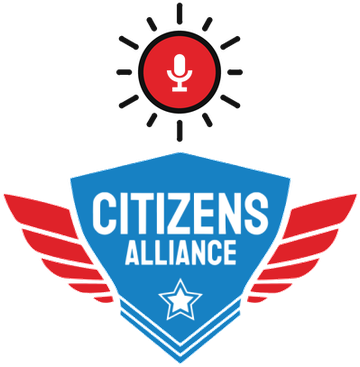

<!doctype html>
<html lang="en"><head><meta charset="utf-8"><meta name="viewport" content="width=device-width,initial-scale=1,viewport-fit=cover">
<meta name="apple-mobile-web-app-capable" content="yes"><meta name="theme-color" content="#e6edf7">
<meta name="apple-mobile-web-app-title" content="Citizens VCRM">
<link rel="apple-touch-icon" href="apple-touch-icon-v2.png">
<link rel="manifest" href="manifest.webmanifest?v=2">
<link rel="icon" href="icon-192-v2.png">
<title>Citizens VCRM</title>
<style>:root{padding-top:env(safe-area-inset-top,0px);padding-bottom:env(safe-area-inset-bottom,0px)}body{margin:0}[hidden]{display:none!important}
.hintcard .hc-off { display: flex; align-items: center; gap: 8px; font-size: 14px; color: var(--muted); cursor: pointer; }
.hintcard .hc-off input { width: 18px; height: 18px; margin: 0; }
.hintcard .hc-ex { font-size: 17px; font-weight: 600; color: var(--brand-ink); background: var(--brand-soft); border: 1px solid var(--brand-line); border-radius: 12px; padding: 12px 14px; line-height: 1.35; }
.saypills .ex, .exlist .ex { display: inline-flex; font-size: 13px; font-weight: 600; padding: 5px 10px; border-radius: 999px; border: 1px dashed var(--line); color: var(--fg); background: var(--surface2); cursor: default; }
.exlist { display: flex; flex-direction: column; align-items: flex-start; gap: 6px; }
.actgrid { display: grid; grid-template-columns: 1fr 1fr; gap: 8px; margin-top: 10px; } .actgrid .btn { font-size: 15px; padding: 0 10px; }
.exhead { font-size: 13px; color: var(--muted); margin: 14px 0 6px; font-weight: 600; }
.exlead { font-size: 13px; color: var(--muted); padding: 12px 12px 0; }
</style>
</head><body>
<style>
/* Layout: one phone-width app column (max 440px, centred on wider screens), sticky top bar, fixed tab bar with a centre mic, bottom sheet for voice drafts. */
:root {
  --bg: #f4f6f9; --surface: #ffffff; --surface2: #eef1f5; --line: #d5dae2;
  --fg: #1c1f24; --muted: #4b525d; --brand: #2f74d0; --brand-soft: #e8f0fb; --brand-line: #9dbbe4; --brand-ink: #1f4f8f;
  --bar: #e6edf7; --ok: #1f7a37; --ok-soft: #e3f3e7; --warn: #8a5a00; --warn-soft: #fff4dc; --warn-line: #e0a020;
  --bad: #c2333b; --scrim: rgba(20,26,36,.55); --shadow: 0 6px 24px rgba(20,30,50,.18);
  --pv: #6b3fb5; --pv-soft: #f1eafb; --pv-line: #c7b2ea; --sl: #3e4a5c; --sl-soft: #eceff3; --sl-line: #c3cad5;
  --font: "Titillium Web", "Helvetica Neue", Helvetica, Arial, system-ui, sans-serif; /* matches the SpiceCRM deployment */
}
@media (prefers-color-scheme: dark) { :root:not([data-theme="light"]) {
  --bg: #12161c; --surface: #1b2129; --surface2: #232a34; --line: #343d4a; --fg: #e8ecf1; --muted: #a2abb8;
  --brand: #5a9aec; --brand-soft: #1d2b3e; --brand-line: #3d5f8c; --brand-ink: #b7d2f6; --bar: #1a2433;
  --ok: #6fcf8a; --ok-soft: #173023; --warn: #f0c060; --warn-soft: #33290f; --warn-line: #a87a1c; --bad: #ff7b81;
  --pv: #c9a8f5; --pv-soft: #2a2140; --pv-line: #5d4a86; --sl: #c3cbd6; --sl-soft: #252c36; --sl-line: #4a5565;
  --scrim: rgba(0,0,0,.6); --shadow: 0 6px 24px rgba(0,0,0,.5); color-scheme: dark } }
:root[data-theme="dark"] {
  --bg: #12161c; --surface: #1b2129; --surface2: #232a34; --line: #343d4a; --fg: #e8ecf1; --muted: #a2abb8;
  --brand: #5a9aec; --brand-soft: #1d2b3e; --brand-line: #3d5f8c; --brand-ink: #b7d2f6; --bar: #1a2433;
  --ok: #6fcf8a; --ok-soft: #173023; --warn: #f0c060; --warn-soft: #33290f; --warn-line: #a87a1c; --bad: #ff7b81;
  --pv: #c9a8f5; --pv-soft: #2a2140; --pv-line: #5d4a86; --sl: #c3cbd6; --sl-soft: #252c36; --sl-line: #4a5565;
  --scrim: rgba(0,0,0,.6); --shadow: 0 6px 24px rgba(0,0,0,.5); color-scheme: dark }
* { box-sizing: border-box; }
@font-face { font-family: "Titillium Web"; font-weight: 400; font-display: swap; src: url(fonts/titillium-web-400.woff2) format("woff2"); }
@font-face { font-family: "Titillium Web"; font-weight: 600; font-display: swap; src: url(fonts/titillium-web-600.woff2) format("woff2"); }
@font-face { font-family: "Titillium Web"; font-weight: 700; font-display: swap; src: url(fonts/titillium-web-700.woff2) format("woff2"); }
button, input, select, textarea { font-family: inherit; line-height: 1.2; }
html, body { height: 100%; }
body { background: var(--bg); color: var(--fg); font-family: var(--font); font-size: 15px; line-height: 1.28; -webkit-tap-highlight-color: transparent; }
body::before { content: ""; position: fixed; inset: 0 0 auto; height: env(safe-area-inset-top, 0px); z-index: 30; background: var(--bar); }
button { font: inherit; color: inherit; }
button:focus-visible, input:focus-visible, select:focus-visible, textarea:focus-visible { outline: 3px solid var(--brand-line); outline-offset: 1px; }
.app { max-width: 440px; margin: 0 auto; min-height: 100%; background: var(--bg); padding-bottom: calc(84px + env(safe-area-inset-bottom, 0px)); }
.top { position: sticky; top: env(safe-area-inset-top, 0px); z-index: 20; display: flex; align-items: center; gap: 10px; height: 56px; background: var(--bar); border-bottom: 1px solid var(--line);
  padding-left: max(16px, env(safe-area-inset-left, 0px)); padding-right: max(16px, env(safe-area-inset-right, 0px)); }
.top h1 { margin: 0; font-size: 18px; flex: 1; min-width: 0; white-space: nowrap; overflow: hidden; text-overflow: ellipsis; }
.back { border: 0; background: none; font-size: 24px; line-height: 1; padding: 4px 6px 4px 0; color: var(--brand); cursor: pointer; }
.iconbtn { width: 36px; height: 36px; border-radius: 50%; border: 1px solid var(--line); background: var(--surface); display: flex; align-items: center; justify-content: center; cursor: pointer; flex: none; }
.chip { width: 36px; height: 36px; border-radius: 50%; background: var(--brand-soft); color: var(--brand-ink); font-weight: 700; font-size: 13px; display: flex; align-items: center; justify-content: center; flex: none; }
main { display: flex; flex-direction: column; gap: 14px; padding-block: 14px; padding-left: max(14px, env(safe-area-inset-left, 0px)); padding-right: max(14px, env(safe-area-inset-right, 0px)); }
.panel { background: var(--surface); border: 1px solid var(--line); border-radius: 12px; overflow: hidden; }
.ph { display: flex; align-items: baseline; gap: 8px; padding: 11px 14px 9px; background: var(--surface2); border-bottom: 1px solid var(--line); }
.ph h2 { margin: 0; font-size: 16px; }
.ph .meta { margin-left: auto; color: var(--muted); font-size: 13px; }
.row { display: flex; align-items: center; gap: 10px; padding: 11px 14px; border-bottom: 1px solid var(--line); }
.row:last-child { border-bottom: 0; }
.row .t { flex: 1; min-width: 0; }
.row .s { color: var(--muted); font-size: 13px; margin-top: 2px; }
.row.tap { cursor: pointer; } .row.tap:active { background: var(--surface2); }
.lnk { color: var(--brand); }
.chev { color: var(--muted); }
.empty { padding: 14px; color: var(--muted); font-size: 14px; }
.tiles { display: grid; grid-template-columns: repeat(3, 1fr); gap: 8px; padding: 12px 14px; }
.tile { border: 1px solid var(--line); border-radius: 10px; padding: 9px 10px; min-width: 0; }
.tile .k { font-size: 12px; color: var(--muted); } .tile .v { font-size: 18px; font-weight: 700; margin-top: 2px; font-variant-numeric: tabular-nums; }
.tile.hl { border-color: var(--brand-line); background: var(--brand-soft); }
.alert { display: inline-block; border-radius: 10px; padding: 2px 9px; font-size: 12.5px; font-weight: 700; border: 1px solid; }
.alert.ok { background: var(--ok-soft); color: var(--ok); border-color: var(--ok); }
.alert.warn { background: var(--warn-soft); color: var(--warn); border-color: var(--warn-line); }
.alert.info { background: var(--brand-soft); color: var(--brand-ink); border-color: var(--brand-line); }
.pill { display: inline-block; border-radius: 12px; padding: 2px 10px; font-size: 13px; font-weight: 600; border: 1px solid var(--line); background: var(--surface2); }
.flag { display: inline-flex; align-items: center; gap: 4px; border-radius: 12px; font-size: 13px; padding: 2px 9px; border: 1px solid; }
.flag.yes { background: var(--ok-soft); border-color: var(--ok); color: var(--ok); }
.flag.no { background: var(--surface2); border-color: var(--line); color: var(--muted); }
.goals { display: grid; grid-template-columns: 1fr 1fr; gap: 10px; padding: 12px 14px 14px; } .goals .k { font-size: 12.5px; color: var(--muted); } .goals .v { font-size: 18px; font-weight: 700; margin: 2px 0 6px; } .goals small { font-size: 12.5px; font-weight: 400; color: var(--muted); }
.gbar { height: 6px; border-radius: 3px; background: var(--line); overflow: hidden; } .gbar span { display: block; height: 100%; background: var(--blue, #2f74d0); }
.seg { display: inline-flex; border: 1px solid var(--line); border-radius: 8px; overflow: hidden; } .seg button { font: inherit; font-size: 12.5px; padding: 4px 10px; border: 0; background: transparent; color: var(--muted); } .seg button.on { background: var(--blue, #2f74d0); color: #fff; }
.lgroup { padding: 8px 14px 6px; font-size: 12.5px; font-weight: 700; color: var(--muted); background: var(--bg, #f3f5f9); border-top: 1px solid var(--line); } .lgroup span { font-weight: 400; }
.flag.dnc { color: var(--bad); border-color: currentColor; }
.search { font: inherit; font-size: 16px; width: 100%; box-sizing: border-box; padding: 10px 12px; border: 1px solid var(--line); border-radius: 10px; margin-bottom: 10px; background: #fff; }
details.trouble > summary { list-style: none; cursor: pointer; } details.trouble > summary::-webkit-details-marker { display: none; } details.trouble:not([open]) > summary { border-bottom: 0; }
.flags { display: flex; gap: 6px; flex-wrap: wrap; }
.hero { padding: 14px; display: flex; flex-direction: column; gap: 8px; }
.hero h2 { margin: 0; font-size: 21px; }
.btn { display: flex; align-items: center; justify-content: center; gap: 8px; min-height: 46px; border-radius: 12px; font-size: 16px; font-weight: 700; border: 0; cursor: pointer; padding: 0 16px; }
.btn.blue { background: var(--brand); color: #fff; }
.btn.out { background: var(--surface); color: var(--brand); border: 1.5px solid var(--brand); }
.btn.quiet { background: var(--surface2); color: var(--fg); border: 1px solid var(--line); font-weight: 600; }
.btn:disabled { opacity: .5; cursor: default; }
.btns { display: flex; gap: 8px; } .btns > * { flex: 1; } a.btn, a.chev { text-decoration: none; }
.track { display: flex; gap: 3px; padding: 4px 14px 12px; }
.track div { flex: 1; text-align: center; font-size: 10.5px; color: var(--muted); padding-top: 7px; border-top: 5px solid var(--line); }
.track div.done { border-color: var(--brand-line); }
.track div.on { border-color: var(--brand); color: var(--brand); font-weight: 700; }
.kv { display: grid; grid-template-columns: 110px 1fr; gap: 6px 10px; padding: 12px 14px; font-size: 14px; }
.kv dt { color: var(--muted); } .kv dd { margin: 0; min-width: 0; overflow-wrap: anywhere; }
.via { color: var(--brand); font-size: 12px; font-weight: 700; white-space: nowrap; }
/* say-things list + welcome popup */
.saypills { display: flex; flex-wrap: wrap; gap: 6px; padding: 12px 12px 14px; }
.sp { display: inline-flex; align-items: center; gap: 6px; font: inherit; font-size: 13px; font-weight: 600; line-height: 1.2; padding: 5px 10px 5px 5px; border-radius: 999px; border: 1px solid; cursor: pointer; text-align: left; }
.sp .spm { width: 18px; height: 18px; border-radius: 50%; display: inline-flex; align-items: center; justify-content: center; flex: none; background: var(--surface); }
.sp:active { filter: brightness(.95); }
.sp.t-people { color: var(--brand-ink); background: var(--brand-soft); border-color: var(--brand-line); }
.sp.t-pipe { color: var(--ok); background: var(--ok-soft); border-color: var(--ok); }
.sp.t-money { color: var(--warn); background: var(--warn-soft); border-color: var(--warn-line); }
.sp.t-giving { color: var(--pv); background: var(--pv-soft); border-color: var(--pv-line); }
.sp.t-look { color: var(--sl); background: var(--sl-soft); border-color: var(--sl-line); }
.saylist { list-style: none; margin: 0; padding: 4px 0; }
.saylist li { display: flex; align-items: center; gap: 10px; padding: 10px 14px; font-size: 15px; cursor: pointer; border-bottom: 1px solid var(--line); }
.saylist li:last-child { border-bottom: 0; }
.saylist li:active { background: var(--surface2); }
.saylist li.on { background: var(--brand-soft); } .saylist li.on .sl-line { color: var(--brand-ink); font-weight: 700; }
.saylist li.done .sl-line { color: var(--muted); }
.sl-mic { width: 26px; height: 26px; border-radius: 50%; background: var(--brand-soft); color: var(--brand); display: flex; align-items: center; justify-content: center; flex: none; }
.saylist li.on .sl-mic { background: var(--brand); color: #fff; }
.sl-line { flex: 1; min-width: 0; }
.sl-tag { font-size: 12px; font-weight: 700; border-radius: 10px; padding: 2px 8px; white-space: nowrap; }
.sl-tag.ok { color: var(--ok); background: var(--ok-soft); } .sl-tag.next { color: #fff; background: var(--brand); }
.ph-help { margin-left: auto; width: 26px; height: 26px; border-radius: 50%; border: 1px solid var(--line); background: var(--surface); color: var(--muted); font-weight: 700; cursor: pointer; }
.scrim.center { align-items: center; padding: 20px; z-index: 60; }
.wmodal { width: 100%; max-width: 360px; background: var(--surface); border-radius: 18px; padding: 22px 20px 18px; box-shadow: var(--shadow); display: flex; flex-direction: column; gap: 12px; }
.wmodal h2 { margin: 2px 0 0; font-size: 21px; line-height: 1.25; color: var(--brand-ink); text-wrap: balance; }
.wmodal p { margin: 0; font-size: 15px; line-height: 1.45; }
.wl-mic { border: 0; cursor: pointer; padding: 0; width: 44px; height: 44px; border-radius: 50%; background: var(--brand); color: #fff; display: flex; align-items: center; justify-content: center; flex: none; }
.wl-tips { margin: 0; padding: 0; list-style: none; display: flex; flex-direction: column; gap: 7px; font-size: 14px; color: var(--muted); line-height: 1.4; }
.wl-tips li { padding-left: 16px; position: relative; } .wl-tips li::before { content: ""; position: absolute; left: 2px; top: 7px; width: 6px; height: 6px; border-radius: 50%; background: var(--brand-line); }
.wl-save { border: 1px solid var(--brand-line); background: var(--brand-soft, #eef4fc); border-radius: 12px; padding: 11px 12px; display: flex; flex-direction: column; gap: 7px; }
.wl-save h3 { margin: 0; font-size: 14px; color: var(--brand-ink); display: flex; align-items: center; gap: 7px; }
.wl-save ol { margin: 0; padding-left: 20px; font-size: 14px; line-height: 1.45; } .wl-save li { padding-left: 2px; }
.wl-save .ico { display: inline-flex; vertical-align: -3px; width: 18px; height: 18px; border: 1px solid var(--line); border-radius: 5px; align-items: center; justify-content: center; background: var(--surface); }
.wl-inmic { display: inline-flex; vertical-align: -5px; width: 22px; height: 22px; border-radius: 50%; background: var(--brand); color: #fff; align-items: center; justify-content: center; margin: 0 1px; }
.wl-role { display: flex; gap: 10px; align-items: center; background: var(--surface-2, #f3f5f8); border: 1px solid var(--line); border-radius: 12px; padding: 9px 11px; font-size: 14px; line-height: 1.4; }
.wl-role b { color: var(--brand-ink); }
.wl-name { display: flex; flex-direction: column; gap: 5px; font-size: 13px; color: var(--muted); font-weight: 600; }
.wl-name input { min-height: 42px; border: 1.5px solid var(--line); border-radius: 9px; padding: 8px 11px; font: inherit; font-size: 16px; background: var(--surface); color: var(--fg); }
.wmodal p.wl-hint { font-size: 13px; color: var(--muted); margin-top: -6px; }
.wl-err { color: var(--danger, #b42318); font-size: 13.5px; font-weight: 600; margin-top: -6px; }
.wl-priv { font-size: 12.5px; color: var(--muted); line-height: 1.4; margin: 0; }
.wl-av { width: 34px; height: 34px; flex: none; border-radius: 50%; background: var(--brand-soft, #e3edf9); color: var(--brand-ink); font-weight: 700; font-size: 13px; display: flex; align-items: center; justify-content: center; }
.top.withlogo { height: 64px; position: sticky; }
.top .who { flex: 1; min-width: 0; display: flex; flex-direction: column; line-height: 1.15; }
.top .who b { font-size: 17px; white-space: nowrap; }
.top .who span { font-size: 12.5px; color: var(--muted); white-space: nowrap; }
.top-logo { position: absolute; left: 50%; top: 50%; transform: translate(-50%, -50%); height: 58px; width: auto; display: block; pointer-events: none; }
.brand { display: flex; justify-content: center; padding: 2px 0 0; } .brand img { width: 130px; height: auto; display: block; }
.wl-save small { font-size: 12.5px; color: var(--muted); }
.wl-tips b { color: var(--fg); font-weight: 600; }
/* journey card */
.steps { list-style: none; margin: 0; padding: 4px 0; }
.steps li { display: flex; gap: 10px; align-items: flex-start; padding: 8px 14px; font-size: 14px; }
.steps .n { width: 24px; height: 24px; border-radius: 50%; flex: none; display: flex; align-items: center; justify-content: center; font-size: 12px; font-weight: 700; border: 1.5px solid var(--line); color: var(--muted); }
.steps li.done .n { background: var(--ok); border-color: var(--ok); color: #fff; }
.steps li.on { background: var(--brand-soft); }
.steps li.on .n { background: var(--brand); border-color: var(--brand); color: #fff; }
.steps li.on b { color: var(--brand-ink); }
.say { font-size: 13px; color: var(--muted); font-style: italic; margin-top: 3px; line-height: 1.4; }
/* board */
.boardwrap { overflow-x: auto; }
.board { display: grid; grid-auto-flow: column; grid-auto-columns: 168px; gap: 8px; padding: 12px 14px; }
.col { background: var(--surface2); border-radius: 10px; padding: 8px; min-height: 120px; }
.col h3 { margin: 0 0 8px; font-size: 13px; display: flex; justify-content: space-between; } .col h3 span { color: var(--muted); font-weight: 400; }
.card { background: var(--surface); border: 1px solid var(--line); border-radius: 8px; padding: 8px; font-size: 13px; display: flex; flex-direction: column; gap: 4px; cursor: pointer; }
.card.me { border: 2px solid var(--brand); }
.card .amt { font-weight: 700; font-variant-numeric: tabular-nums; }
/* tab bar */
.tabbar { position: fixed; left: 0; right: 0; bottom: 0; z-index: 20; background: var(--surface); border-top: 1px solid var(--line); padding-bottom: env(safe-area-inset-bottom, 0px);
  padding-left: env(safe-area-inset-left, 0px); padding-right: env(safe-area-inset-right, 0px); }
.tabbar .in { max-width: 440px; margin: 0 auto; display: flex; justify-content: space-around; align-items: center; height: 64px; }
.tab { border: 0; background: none; font-size: 11.5px; color: var(--muted); display: flex; flex-direction: column; align-items: center; gap: 3px; cursor: pointer; min-width: 60px; }
.tab.on { color: var(--brand); font-weight: 700; }
.micbtn { width: 58px; height: 58px; border-radius: 50%; border: 0; background: var(--brand); color: #fff; display: flex; align-items: center; justify-content: center; box-shadow: var(--shadow); margin-top: -18px; cursor: pointer; }
.micbtn.pulse { animation: pulse 1.6s ease-out infinite; }
@keyframes pulse { 0% { box-shadow: 0 0 0 0 rgba(47,116,208,.55); } 100% { box-shadow: 0 0 0 16px rgba(47,116,208,0); } }
@media (prefers-reduced-motion: reduce) { .micbtn.pulse, .dots i, .wave i { animation: none !important; } }
/* sheet */
.scrim { position: fixed; inset: 0; z-index: 40; background: var(--scrim); display: flex; align-items: flex-end; justify-content: center; }
.sheet { width: 100%; max-width: 440px; max-height: calc(100% - 24px - env(safe-area-inset-top, 0px)); overflow-y: auto; background: var(--surface); border-radius: 18px 18px 0 0;
  padding-bottom: env(safe-area-inset-bottom, 0px); box-shadow: var(--shadow); }
.grab { width: 44px; height: 5px; border-radius: 3px; background: var(--line); margin: 8px auto 0; }
.sh { display: flex; align-items: flex-start; gap: 10px; padding: 10px 16px 10px; border-bottom: 1px solid var(--line); position: sticky; top: 0; background: var(--surface); z-index: 2; }
.sh h3 { margin: 4px 0 0; font-size: 17px; } .sh .s { font-size: 13px; color: var(--muted); margin-top: 3px; }
.vh { display: flex; align-items: center; gap: 6px; font-size: 13px; font-weight: 700; color: var(--brand); }
.x { margin-left: auto; border: 0; background: var(--surface2); width: 32px; height: 32px; border-radius: 50%; font-size: 18px; cursor: pointer; flex: none; color: var(--muted); }
.sb { padding: 14px 16px; display: flex; flex-direction: column; gap: 12px; }
.listen { display: flex; flex-direction: column; align-items: center; gap: 14px; padding: 18px 16px 8px; text-align: center; }
.bigmic { width: 84px; height: 84px; border-radius: 50%; background: var(--brand); color: #fff; display: flex; align-items: center; justify-content: center; animation: pulse 1.6s ease-out infinite; }
.wave { display: flex; gap: 4px; height: 22px; align-items: center; } .wave i { width: 4px; background: var(--brand); border-radius: 2px; animation: wv 1s ease-in-out infinite; }
.wave i:nth-child(2) { animation-delay: .15s } .wave i:nth-child(3) { animation-delay: .3s } .wave i:nth-child(4) { animation-delay: .45s } .wave i:nth-child(5) { animation-delay: .6s }
@keyframes wv { 0%,100% { height: 5px } 50% { height: 22px } }
.transcript { width: 100%; min-height: 90px; text-align: left; background: var(--surface2); border-radius: 10px; padding: 10px 12px; font-size: 16px; line-height: 1.45; }
.transcript .interim { color: var(--muted); }
.hint { width: 100%; text-align: left; font-size: 13px; color: var(--muted); line-height: 1.45; }
.hint b { color: var(--fg); font-weight: 600; }
.note { font-size: 13px; color: var(--warn); background: var(--warn-soft); border: 1px solid var(--warn-line); border-radius: 9px; padding: 8px 10px; width: 100%; text-align: left; }
textarea.say-in { width: 100%; min-height: 120px; border: 1.5px solid var(--line); border-radius: 10px; padding: 10px 12px; font: inherit; font-size: 16px; background: var(--surface); color: var(--fg); resize: vertical; }
.thinking { display: flex; align-items: center; gap: 10px; color: var(--muted); font-size: 15px; padding: 18px 16px; }
.dots { display: flex; gap: 4px; } .dots i { width: 8px; height: 8px; border-radius: 50%; background: var(--brand); animation: bl 1.2s infinite; }
.dots i:nth-child(2) { animation-delay: .2s } .dots i:nth-child(3) { animation-delay: .4s }
@keyframes bl { 0%,80%,100% { opacity: .25 } 40% { opacity: 1 } }
.said { font-size: 14px; font-style: italic; color: var(--muted); background: var(--surface2); border-left: 4px solid var(--line); border-radius: 6px; padding: 8px 11px; line-height: 1.4; }
details.said summary { font-style: normal; color: var(--brand); font-weight: 600; cursor: pointer; }
.fld { display: flex; flex-direction: column; gap: 5px; padding: 8px 0 8px 10px; border-left: 3px solid transparent; }
.fld.v { border-left-color: var(--brand-line); }
.fld.miss { border-left-color: var(--bad); }
.lbl { display: flex; align-items: center; gap: 6px; font-size: 13px; color: var(--muted); font-weight: 600; }
.lbl .req { color: var(--bad); } .lbl .via { margin-left: auto; }
.two .vt { display: none; }
.fld input[type=text], .fld input[type=date], .fld input[type=time], .fld select, .fld textarea { width: 100%; min-height: 42px; border: 1.5px solid var(--line); border-radius: 9px; padding: 8px 11px; font: inherit; font-size: 16px; background: var(--surface); color: var(--fg); }
.fld textarea { min-height: 64px; resize: vertical; }
.fld.chk input { border-color: var(--warn-line); background: var(--warn-soft); }
.cn { font-size: 12.5px; color: var(--warn); }
.tg { display: flex; align-items: center; gap: 10px; font-size: 15px; }
.tg input { width: 22px; height: 22px; accent-color: var(--brand); flex: none; }
.two { display: grid; grid-template-columns: minmax(0, 1fr) minmax(0, 1fr); gap: 8px; }
/* iPhone draws date and time boxes wider than their column and centres the text; keep them inside the column */
.fld input[type=date], .fld input[type=time] { -webkit-appearance: none; appearance: none; display: block; min-width: 0; max-width: 100%; box-sizing: border-box; text-align: left; }
.fld input[type=date]::-webkit-date-and-time-value, .fld input[type=time]::-webkit-date-and-time-value { text-align: left; }
.fld:has(> label.tg) { padding-top: 10px; padding-bottom: 12px; }
.left { font-size: 13px; color: var(--muted); background: var(--surface2); border-radius: 9px; padding: 9px 11px; }
.savebar { position: sticky; bottom: 0; background: var(--surface); border-top: 1px solid var(--line); padding: 10px 16px 12px; display: flex; flex-direction: column; gap: 6px; }
.savebar small { text-align: center; color: var(--muted); font-size: 12.5px; }
.savebar { box-shadow: 0 -10px 14px -10px rgba(0,0,0,.22); } /* shows the form carries on under the button */
.err { color: var(--bad); font-size: 14px; }
/* conversation */
.callbar { position: fixed; left: 0; right: 0; top: calc(env(safe-area-inset-top, 0px) + 6px); z-index: 50; display: flex; justify-content: center; padding-left: max(10px, env(safe-area-inset-left, 0px)); padding-right: max(10px, env(safe-area-inset-right, 0px)); pointer-events: none; }
.callbar[hidden] { display: none; }
.cb-in { pointer-events: auto; width: 100%; max-width: 430px; display: flex; align-items: center; gap: 10px; background: var(--surface); border: 1.5px solid var(--brand-line); border-radius: 14px; padding: 9px 10px 9px 12px; box-shadow: var(--shadow); }
.cb-t { flex: 1; min-width: 0; font-size: 14px; } .cb-cap { color: var(--muted); font-size: 13px; line-height: 18px; margin-top: 2px; max-height: 36px; overflow: hidden; scroll-behavior: smooth; }
.cb-cap[hidden] { display: none; }
.cb-end { min-height: 36px; padding: 0 14px; font-size: 14px; color: var(--bad); }
body.incall .app { padding-top: 70px; }
body.incall .top { top: calc(env(safe-area-inset-top, 0px) + 70px); }
body.incall::before { height: calc(env(safe-area-inset-top, 0px) + 70px); background: var(--bg); }
body.incall .sheet { max-height: calc(100% - 96px - env(safe-area-inset-top, 0px)); }
.micbtn.oncall { background: var(--bad); }
.seg { display: grid; grid-template-columns: 1fr 1fr; border: 1.5px solid var(--brand); border-radius: 10px; overflow: hidden; }
.seg button { border: 0; background: var(--surface); color: var(--brand); padding: 9px 6px; font-weight: 700; font-size: 14.5px; cursor: pointer; display: flex; flex-direction: column; gap: 2px; }
.seg button small { font-weight: 400; font-size: 12px; color: var(--muted); }
.seg button.on { background: var(--brand); color: #fff; } .seg button.on small { color: #fff; opacity: .85; }
/* toast */
.toast { position: fixed; left: 50%; transform: translateX(-50%); bottom: calc(92px + env(safe-area-inset-bottom, 0px)); z-index: 35; background: var(--fg); color: var(--bg); border-radius: 12px; padding: 10px 14px; font-size: 14px; display: flex; gap: 14px; align-items: center; box-shadow: var(--shadow); max-width: calc(100% - 32px); }
.toast button { border: 0; background: none; color: var(--bg); font-weight: 700; text-decoration: underline; cursor: pointer; }
.next { background: var(--brand-soft); border: 1px solid var(--brand-line); border-radius: 12px; padding: 12px 14px; display: flex; flex-direction: column; gap: 6px; }
.next b { color: var(--brand-ink); }
.done-card { background: var(--ok-soft); border: 1px solid var(--ok); border-radius: 12px; padding: 14px; display: flex; flex-direction: column; gap: 8px; }
.done-card h2 { margin: 0; font-size: 18px; color: var(--ok); }
.set label { display: flex; flex-direction: column; gap: 5px; font-size: 13px; color: var(--muted); font-weight: 600; }
.set input, .set select { min-height: 42px; border: 1.5px solid var(--line); border-radius: 9px; padding: 8px 11px; font: inherit; font-size: 15px; background: var(--surface); color: var(--fg); }
.status-line { font-size: 13.5px; display: flex; gap: 8px; align-items: center; }
.dot { width: 9px; height: 9px; border-radius: 50%; flex: none; } .dot.g { background: var(--ok); } .dot.r { background: var(--bad); } .dot.a { background: var(--warn-line); }
.flowhero { padding: 14px; display: flex; flex-direction: column; gap: 10px; }
.flowhero p { margin: 0; color: var(--muted); font-size: 14px; line-height: 1.4; }
.flowpath { list-style: none; margin: 0; padding: 6px 14px 14px; }
.fstep { position: relative; display: grid; grid-template-columns: 34px 1fr; gap: 10px; padding-bottom: 12px; }
.fstep:not(:last-child)::before { content: ""; position: absolute; left: 16px; top: 34px; bottom: 0; width: 3px; background: var(--line); border-radius: 2px; }
.fstep.past:not(:last-child)::before { background: var(--brand-line); }
.fdot { width: 34px; height: 34px; border-radius: 50%; background: var(--surface2); border: 2px solid var(--line); color: var(--muted); display: flex; align-items: center; justify-content: center; position: relative; z-index: 1; }
.fstep.past .fdot { border-color: var(--brand-line); color: var(--brand); }
.fstep.on .fdot { background: var(--brand); border-color: var(--brand); color: #fff; box-shadow: 0 0 0 5px var(--brand-soft); }
.fcard { border: 1px solid var(--line); border-radius: 10px; padding: 9px 11px; background: var(--surface); cursor: pointer; transition: border-color .2s, box-shadow .2s; }
.fstep.on .fcard { border-color: var(--brand); box-shadow: 0 2px 10px rgba(47,116,208,.18); }
.fcard h3 { margin: 0; font-size: 15px; display: flex; align-items: center; gap: 8px; }
.fcard h3 small { margin-left: auto; font-size: 12px; font-weight: 600; color: var(--muted); }
.fcard .fm { font-size: 13.5px; color: var(--muted); margin-top: 2px; line-height: 1.35; }
.fmove { margin-top: 8px; border-top: 1px dashed var(--line); padding-top: 8px; }
.fmove b { font-size: 12.5px; color: var(--brand-ink); text-transform: uppercase; letter-spacing: .03em; }
.fmove ul { margin: 5px 0 0; padding: 0; list-style: none; display: flex; flex-direction: column; gap: 5px; }
.fmove li { font-size: 13.5px; line-height: 1.35; display: grid; grid-template-columns: 18px 1fr; gap: 4px; }
.fmove li::before { content: "✓"; color: var(--brand); font-weight: 700; }
.fmove .btn { margin-top: 9px; }
.fnote { font-size: 12.5px; color: var(--muted); margin-top: 6px; }
.flowtile { display: flex; align-items: center; gap: 12px; padding: 12px 14px; cursor: pointer; }
.flowtile .fti { width: 40px; height: 40px; border-radius: 10px; background: var(--brand-soft); color: var(--brand); display: flex; align-items: center; justify-content: center; flex: none; }
.flowtile .ftt { flex: 1; } .flowtile .ftt b { display: block; font-size: 15px; } .flowtile .ftt span { font-size: 13px; color: var(--muted); }
.flowlink { display: block; padding: 0 14px 12px; font-size: 13.5px; color: var(--brand); cursor: pointer; font-weight: 600; }
.updbar { position: fixed; left: 12px; right: 12px; top: calc(10px + env(safe-area-inset-top, 0px)); z-index: 60; display: flex; align-items: center; gap: 10px; background: var(--brand); color: #fff; border-radius: 12px; padding: 10px 12px; box-shadow: 0 6px 20px rgba(0,0,0,.25); font-size: 14px; }
.updbar b { flex: 1; } .updbar button { border: 0; border-radius: 9px; padding: 8px 12px; font: inherit; font-weight: 700; background: #fff; color: var(--brand); cursor: pointer; }
</style>

<div class="app" id="app"></div>
<nav class="tabbar" aria-label="Main"><div class="in" id="tabs"></div></nav>
<div id="overlay"></div>
<div id="modal"></div>
<div id="toastHost"></div>
<div id="callbar" class="callbar" hidden aria-live="polite"></div>

<script>
(() => {
"use strict";
let OFFICER = "Dana Rivera", OFFICER_INITIALS = "DR"; // the demo user's own name replaces Dana's when they give one
function applyName() {
  const n = String((S && S.settings && S.settings.userName) || "").trim().replace(/\s+/g, " ").slice(0, 60);
  OFFICER = n || "Dana Rivera";
  OFFICER_INITIALS = OFFICER.split(" ").filter(Boolean).map(w => w[0]).join("").slice(0, 2).toUpperCase() || "DR";
}
const STAGES = ["Qualification", "Cultivation", "Ask Planning", "Ask Made", "Commitment", "Closed"];
const FUNDS = ["C3 - Citizens Alliance", "C4 - Citizens Alliance", "PAC - Citizens Alliance"]; // entities (the guide renamed Fund to Entity)
const CAMPAIGNS = ["Pennsylvania", "New Hampshire", "North Dakota", "Idaho", "National", "General / no campaign"];
const CAPACITY = { A: "$250k and up", B: "$100k to $250k", C: "$25k to $100k", D: "$5k to $25k", E: "Under $5k" };
const OUTCOMES = ["Interested, continue cultivation", "Ask made", "Ask accepted", "Not now, revisit", "Not interested", "Referred elsewhere"];
const NO_NEXT_STEP = ["Not interested", "Referred elsewhere"];
const RESPONSES = ["Awaiting", "Accepted", "Countered", "Declined"];
const PAY_METHODS = ["Check", "Credit card", "Bank transfer", "Wire", "Stock", "Other"];
const PLEDGE_FOLLOWUP_DAYS = 10; // demo default; the guide's pledge reminder interval is still open with the customer
const MEET_TYPES = ["In person", "Phone call", "Video call", "Event", "Email"];
const MIC = '<svg width="SZ" height="SZ" viewBox="0 0 24 24" fill="none" stroke="currentColor" stroke-width="2" stroke-linecap="round"><rect x="9" y="3" width="6" height="11" rx="3"/><path d="M5.5 11a6.5 6.5 0 0 0 13 0M12 17.5V21"/></svg>';
const mic = (s) => MIC.replace(/SZ/g, s);
const esc = (s) => String(s ?? "").replace(/[&<>"']/g, c => ({ "&": "&amp;", "<": "&lt;", ">": "&gt;", '"': "&quot;", "'": "&#39;" }[c]));
const money = (n) => n == null || n === "" || isNaN(n) ? "$0" : "$" + Math.round(Number(n)).toLocaleString("en-US");
const toNum = (v) => { if (v == null || v === "") return null; const n = Number(String(v).replace(/[^0-9.]/g, "")); return isNaN(n) ? null : n; };
const todayISO = () => { const d = new Date(); d.setMinutes(d.getMinutes() - d.getTimezoneOffset()); return d.toISOString().slice(0, 10); };
const fmtDate = (s) => { if (!s) return ""; const d = new Date(s + "T12:00:00"); return isNaN(d) ? s : d.toLocaleDateString("en-US", { month: "short", day: "numeric", year: d.getFullYear() !== new Date().getFullYear() ? "numeric" : undefined }); };
const longToday = () => new Date().toLocaleDateString("en-US", { weekday: "long", year: "numeric", month: "long", day: "numeric" });
const uid = () => Math.random().toString(36).slice(2, 9);
const addDays = (iso, n) => { const d = new Date(iso + "T12:00:00"); d.setDate(d.getDate() + n); return d.toISOString().slice(0, 10); };
const YEAR = new Date().getFullYear();

/* ---------- actions: what the officer can do by voice, in any order ---------- */
const DURATIONS = ["30 minutes", "45 minutes", "1 hour", "90 minutes", "2 hours"];
const ACTIONS = {
  contact: { title: "New contact", saved: "Contact saved", saveLabel: "Save contact",
    fields: [
      { k: "first", label: "First name", req: true }, { k: "last", label: "Last name", req: true },
      { k: "email", label: "Email", check: "Spoken addresses are easy to mishear. Check the spelling before you save." },
      { k: "mobile", label: "Mobile" },
      { k: "permEmail", label: "Email permitted", type: "bool" }, { k: "permCalls", label: "Calls permitted", type: "bool" }, { k: "permText", label: "Texting permitted", type: "bool" },
      { k: "ally", label: "Ally - Do Not Solicit", type: "bool" }, { k: "dnc", label: "Do Not Contact", type: "bool" },
      { k: "permSource", label: "Permission source" }, { k: "howMet", label: "How we met", type: "area" } ],
    pairs: [["first", "last"]],
    left: "A contact needs an email or a mobile number (at least one). Not filled by voice: capacity rating. Voice ticks Ally - Do Not Solicit or Do Not Contact only when you say so." },
  interaction: { title: "Interaction report", saved: "Interaction report saved", saveLabel: "Save",
    fields: [
      { k: "forName", label: "Contact", fixed: true },
      { k: "date", label: "Date", type: "date", req: true }, { k: "meetingType", label: "Type", type: "select", opts: ["", ...MEET_TYPES], req: true },
      { k: "summary", label: "Summary", type: "area", req: true }, { k: "substantive", label: "Substantive interaction", type: "bool" },
      { k: "outcome", label: "Outcome", type: "select", opts: ["", ...OUTCOMES] },
      { k: "capacity", label: "Capacity rating", type: "select", opts: ["", ...Object.keys(CAPACITY)], fmt: (v) => v ? `${v} · ${CAPACITY[v]}` : "Not rated" },
      { k: "nextStep", label: "Next step (creates one Task)" }, { k: "nextDue", label: "Next step due", type: "date" } ],
    pairs: [["date", "meetingType"]],
    left: "A substantive interaction needs a next step and its due date, unless the outcome is Not interested or Referred elsewhere." },
  meeting: { title: "Schedule a meeting", saved: "Meeting added. Finish in Google Calendar", saveLabel: "Add to Google Calendar",
    fields: [
      { k: "forName", label: "Contact", fixed: true },
      { k: "title", label: "Title", req: true },
      { k: "date", label: "Date", type: "date", req: true }, { k: "time", label: "Start time", type: "time", req: true },
      { k: "duration", label: "Length", type: "select", opts: DURATIONS }, { k: "meetingType", label: "Type", type: "select", opts: ["In person", "Phone call", "Video call"] },
      { k: "location", label: "Where" }, { k: "notes", label: "Notes", type: "area" } ],
    left: "Opens Google Calendar with this meeting filled in. Tap Save there, then come back." },
  task: { title: "New task", saved: "Task added", saveLabel: "Save task",
    fields: [
      { k: "forName", label: "Contact", fixed: true },
      { k: "text", label: "Task", req: true }, { k: "due", label: "Due date", type: "date" },
      { k: "onOpp", label: "Add to the opportunity", type: "bool" } ],
    left: "Every task belongs to the contact. Tick Add to the opportunity to file it on their open opportunity too." },
  opportunity: { title: "New opportunity", saved: "Opportunity created", saveLabel: "Save",
    fields: [
      { k: "name", label: "Opportunity name", req: true, fixed: true }, { k: "officer", label: "Gift officer", fixed: true },
      { k: "fund", label: "Entity of interest", type: "select", opts: ["", ...FUNDS] }, { k: "potential", label: "Potential amount", type: "money" },
      { k: "moveToCultivation", label: "Then move to Cultivation", type: "bool" }, { k: "notes", label: "Notes", type: "area" } ] },
  plan: { title: "Add ask", saved: "Ask planned", saveLabel: "Save",
    fields: [
      { k: "forName", label: "Opportunity", fixed: true },
      { k: "fund", label: "Entity", type: "select", opts: FUNDS, req: true }, { k: "campaign", label: "Campaign", type: "select", opts: CAMPAIGNS, req: true },
      { k: "plannedDate", label: "Planned ask date", type: "date", req: true }, { k: "amount", label: "Amount", type: "money", req: true },
      { k: "askType", label: "Ask type", type: "select", opts: ["Outright", "Pledge", "Planned gift"] },
      { k: "officer", label: "Gift officer", fixed: true }, { k: "participants", label: "Participants in the ask" } ],
    pairs: [["plannedDate", "amount"]] },
  ask: { title: "Interaction report · the ask", saved: "Ask recorded", saveLabel: "Save",
    fields: [
      { k: "forName", label: "Opportunity", fixed: true },
      { k: "date", label: "Date", type: "date", req: true }, { k: "meetingType", label: "Type", type: "select", opts: ["", ...MEET_TYPES], req: true },
      { k: "amount", label: "Amount asked", type: "money", req: true }, { k: "fund", label: "Entity", type: "select", opts: FUNDS, req: true },
      { k: "response", label: "Response", type: "select", opts: RESPONSES, req: true },
      { k: "agreedAmount", label: "Agreed or counter amount (verbal)", type: "money" }, { k: "lostReason", label: "Reason (if declined)" }, { k: "summary", label: "Summary", type: "area", req: true },
      { k: "nextStep", label: "Next step (creates one Task)" }, { k: "nextDue", label: "Next step due", type: "date" } ],
    pairs: [["date", "meetingType"], ["amount", "fund"]],
    left: "An ask meeting is substantive, so it needs a next step and its due date unless the investor declined. A declined ask closes the opportunity as Closed Lost and needs a reason." },
  pledge: { title: "Record pledge", saved: "Pledge recorded", saveLabel: "Record pledge",
    fields: [
      { k: "forName", label: "Opportunity", fixed: true },
      { k: "amount", label: "Pledge amount", type: "money", req: true }, { k: "fund", label: "Entity", type: "select", opts: FUNDS, req: true },
      { k: "confirmedBy", label: "Confirmed by", type: "select", opts: ["Email", "Phone", "In person"], req: true }, { k: "confirmedDate", label: "Confirmed on", type: "date", req: true },
      { k: "installments", label: "Payments", type: "money", num: true }, { k: "frequency", label: "Frequency", type: "select", opts: ["Annual", "Quarterly", "Monthly", "One payment"] },
      { k: "firstAmount", label: "First payment", type: "money" }, { k: "firstDue", label: "First payment due", type: "date", req: true } ],
    pairs: [["confirmedBy", "confirmedDate"], ["installments", "frequency"], ["firstAmount", "firstDue"]],
    left: "No pledge card is needed. The pledge is confirmed by email, phone or in person." },
  cultivate: { title: "Move to Cultivation?", saved: "Decision recorded", saveLabel: "Confirm",
    fields: [
      { k: "forName", label: "Opportunity", fixed: true },
      { k: "decision", label: "Decision", type: "select", opts: ["Move to Cultivation", "Defer"], req: true },
      { k: "reason", label: "Reason (needed to defer)", type: "area" }, { k: "reconsiderOn", label: "Reconsider on", type: "date" } ],
    left: "All three criteria are met: accepted, rated and talked to. Defer keeps it in Qualification; the prompt comes back on the Reconsider on date or after the next substantive interaction." },
  gift: { title: "Record gift", saved: "Gift recorded", saveLabel: "Record gift",
    fields: [
      { k: "forName", label: "Opportunity", fixed: true },
      { k: "amount", label: "Gift amount", type: "money", req: true }, { k: "fund", label: "Entity", type: "select", opts: FUNDS, req: true },
      { k: "date", label: "Received on", type: "date", req: true }, { k: "method", label: "Payment method", type: "select", opts: PAY_METHODS, req: true } ],
    pairs: [["amount", "fund"], ["date", "method"]],
    left: "An outright gift skips Commitment: saving closes the opportunity as Closed Won." },
  payment: { title: "Record payment", saved: "Payment recorded", saveLabel: "Record payment",
    fields: [
      { k: "forName", label: "Opportunity", fixed: true },
      { k: "amount", label: "Payment amount", type: "money", req: true },
      { k: "date", label: "Received on", type: "date", req: true }, { k: "method", label: "Payment method", type: "select", opts: PAY_METHODS, req: true } ],
    pairs: [["date", "method"]],
    left: "The first payment on the pledge closes the opportunity as Closed Won. Later installments are tracked on the pledge." }
};

/* ---------- giving history (example gifts already received) ---------- */
const g = (date, amount, fund, method) => ({ date, amount, fund, method });
const SEED_GIFTS = {
  "Ruth Abernathy": [g("2026-03-15", 15000, "C3 - Citizens Alliance", "Check"), g("2025-11-20", 50000, "C3 - Citizens Alliance", "Stock"), g("2024-12-10", 40000, "C3 - Citizens Alliance", "Check"), g("2023-12-05", 30000, "C4 - Citizens Alliance", "Check"), g("2022-11-30", 25000, "C3 - Citizens Alliance", "Check")],
  "Ken Ito": [g("2025-10-02", 12000, "C4 - Citizens Alliance", "Bank transfer"), g("2024-09-18", 10000, "C4 - Citizens Alliance", "Bank transfer")],
  "Elena Vasquez": [g("2026-02-10", 2500, "PAC - Citizens Alliance", "Credit card"), g("2025-06-04", 8000, "C3 - Citizens Alliance", "Check"), g("2023-05-22", 5000, "C3 - Citizens Alliance", "Check")]
};
function givingOf(c) {
  const gs = (c.gifts || []).slice().sort((a, b) => b.date.localeCompare(a.date)), yr = todayISO().slice(0, 4);
  const sum = (l) => l.reduce((n, x) => n + (x.amount || 0), 0);
  const o = S.opps.find(x => x.contactId === c.id && x.pledge && x.pledge.status !== "Paid in full" && x.pledge.status !== "Written off");
  const pledgeLeft = o ? Math.max(0, o.pledge.amount - sum(o.pledge.payments || [])) : 0;
  return { lifetime: sum(gs), ytd: sum(gs.filter(x => x.date.startsWith(yr))), last: gs[0] || null, count: gs.length, pledgeLeft };
}

/* ---------- state ---------- */
const KEY = "veleer-voice-demo-v1";
const SEED_EMAILS = { "Ruth Abernathy": "ruth.abernathy@example.org", "Ken Ito": "ken.ito@example.org", "James Okafor": "james.okafor@example.org", "Priya Sandaruwan": "priya.s@example.org", "Elena Vasquez": "elena.vasquez@example.org" };
// past interactions, open tasks and booked meetings for the example contacts, so every panel has something in it
function seedActivity(st) {
  const T = todayISO(), by = (n) => st.contacts.find(c => c.example && c.first + " " + c.last === n), opp = (c) => c && st.opps.find(o => o.contactId === c.id && o.stage !== "Closed");
  const ru = by("Ruth Abernathy"), ke = by("Ken Ito"), ja = by("James Okafor"), pr = by("Priya Sandaruwan"), el = by("Elena Vasquez");
  const I = (c, daysAgo, type, summary, substantive, kind) => c && st.interactions.push({ id: uid(), contactId: c.id, oppId: opp(c) ? opp(c).id : null, date: addDays(T, -daysAgo), type, summary, substantive, outcome: "", kind: kind || "meeting", example: true });
  I(ru, 36, "In person", "Lunch at the club. Keen on the national program; wants an update on Pennsylvania before the year-end ask.", true);
  I(ke, 18, "In person", "Asked for a $30,000 pledge to C4, Pennsylvania campaign. Ken will talk it over with his wife.", true, "ask");
  I(ja, 16, "Phone call", "Intro call after the alumni luncheon. Strong interest in the PAC program; open to a meeting.", true);
  I(pr, 23, "Video call", "Talked through the Pennsylvania field plan. Asked for the budget summary.", true);
  I(el, 59, "In person", "First meeting after Luis Ortega's handover. Toured the New Hampshire office.", true);
  const K = (c, text, due, onOpp, example) => c && st.tasks.push({ id: uid(), contactId: c.id, oppId: onOpp && opp(c) ? opp(c).id : null, text, due, done: false, example: true });
  K(ke, "Follow up on Ken's pledge decision", addDays(T, -4), true);
  K(el, "Ask reminder: Vasquez, Elena - 2026", addDays(T, 11), true);
  K(ru, "Send Ruth the Pennsylvania update", addDays(T, 6), false);
  st.meetings = st.meetings || [];
  if (ru) st.meetings.push({ id: uid(), contactId: ru.id, title: "Coffee with Ruth Abernathy", date: addDays(T, 5), time: "10:00", duration: "1 hour", type: "In person", location: "Blue Door Cafe", notes: "", example: true });
  if (pr) st.meetings.push({ id: uid(), contactId: pr.id, title: "Budget walk-through with Priya Sandaruwan", date: addDays(T, 10), time: "15:00", duration: "45 minutes", type: "Video call", location: "", notes: "", example: true });
}
const SEED_MOBILES = { "Ruth Abernathy": "(555) 010-0141", "Ken Ito": "(555) 010-0142", "James Okafor": "(555) 010-0143", "Priya Sandaruwan": "(555) 010-0144", "Elena Vasquez": "(555) 010-0145" };
function seed() {
  const c = (first, last, status, capacity, howMet) => ({ id: uid(), first, last, status, capacity, howMet, permEmail: true, permCalls: true, permText: false, added: "2025-03-14", example: true });
  const contacts = [c("Ruth", "Abernathy", "Investor", "A", "Long-time supporter of the national program."), c("Ken", "Ito", "Investor", "B", "Board member's referral."),
    c("James", "Okafor", "Prospect", "C", "Met at the alumni luncheon."), c("Priya", "Sandaruwan", "Prospect", "B", "Met at the Pennsylvania campaign kickoff."), c("Elena", "Vasquez", "Investor", "B", "Assigned by Luis Ortega.")];
  const [ab, it, ok, sa, va] = contacts;
  contacts.forEach(ct => { ct.mobile = SEED_MOBILES[ct.first + " " + ct.last] || ""; ct.email = SEED_EMAILS[ct.first + " " + ct.last] || ""; });
  contacts.forEach(ct => { ct.gifts = (SEED_GIFTS[ct.first + " " + ct.last] || []).map(g => Object.assign({}, g)); });
  const o = (ct, stage, fund, potential, ask) => ({ id: uid(), contactId: ct.id, name: `${ct.last}, ${ct.first} - ${YEAR}`, stage, fund, potential, asks: ask ? [ask] : [], pledge: null, created: "2026-02-01", example: true });
  const opps = [o(ab, "Cultivation", "C3 - Citizens Alliance", 75000), o(it, "Ask Made", "C4 - Citizens Alliance", 30000, { fund: "C4 - Citizens Alliance", campaign: "Pennsylvania", amount: 30000, askType: "Pledge", status: "Made", askedOn: "2026-09-30", plannedDate: "2026-09-30" }),
    o(ok, "Qualification", "PAC - Citizens Alliance", 20000), o(sa, "Cultivation", "C3 - Citizens Alliance", 25000),
    o(va, "Ask Planning", "C3 - Citizens Alliance", 40000, { fund: "C3 - Citizens Alliance", campaign: "New Hampshire", amount: 40000, askType: "Outright", status: "Planned", plannedDate: addDays(todayISO(), 18) })];
  return { contacts, opps };
}
const fresh = () => Object.assign({ v: 2, screen: "home", sel: { contact: null, opp: null }, interactions: [], tasks: [], history: [], seenWelcome: false,
  settings: { xaiTokenUrl: "", demoCode: "", voice: "ara", voicePicked: false } }, seed());
let S = fresh(); seedActivity(S); S.seed2 = true;
try {
  const raw = localStorage.getItem(KEY);
  if (raw) {
    const old = JSON.parse(raw);
    if (old.v === 2) { S = Object.assign(fresh(), old); S.settings = Object.assign(fresh().settings, old.settings); }
    else { // carry over the single contact and opportunity from the earlier one-journey demo
      S.settings = Object.assign(S.settings, old.settings || {}); S.seenWelcome = !!old.seenWelcome;
      if (old.contact) {
        const ct = Object.assign({ id: uid() }, old.contact); S.contacts.push(ct);
        (old.interactions || []).forEach(i => S.interactions.push(Object.assign({ id: uid(), contactId: ct.id }, i)));
        (old.tasks || []).forEach(t => S.tasks.push(Object.assign({ id: uid(), contactId: ct.id }, t)));
        if (old.opp) { const op = Object.assign({ id: uid(), contactId: ct.id, asks: [] }, old.opp); delete op.ask; if (old.opp.ask && !op.asks.length) op.asks = [old.opp.ask]; S.opps.push(op); }
      }
    }
  }
} catch (e) {}
(() => { const h = location.hash || ""; const c = /[#&]code=([^&]+)/.exec(h);
  delete S.settings.xaiKey; // the key lives only in Cloudflare; forget any key an older version saved on this phone
  try { if (c) S.settings.demoCode = decodeURIComponent(c[1]).trim(); } catch (e) {} })();
// contacts added by voice before the permission defaults were fixed came out with email and calls off; the guide has them on
if (!S.permFix1) { S.contacts.forEach(ct => { if (!ct.example && !ct.permEmail && !ct.permCalls) { ct.permEmail = true; ct.permCalls = true; } }); S.permFix1 = true; }
// phones that started before the example activity existed get it once
if (!S.seed2) { S.contacts.forEach(ct => { if (ct.example && !ct.email) ct.email = SEED_EMAILS[ct.first + " " + ct.last] || ""; }); seedActivity(S); S.seed2 = true; }
// example contacts saved before they had mobile numbers get them now
S.contacts.forEach(ct => { if (ct.example && !ct.mobile) ct.mobile = SEED_MOBILES[ct.first + " " + ct.last] || ""; });
// earlier versions used funds and campaigns that the guide has since replaced
(() => { const FIXC = { "Building campaign 2027": "Pennsylvania", "Scholars campaign 2026": "National" };
  const fx = (x) => { if (!x) return; if (x.fund && !FUNDS.includes(x.fund)) x.fund = "C3 - Citizens Alliance"; if (x.campaign && !CAMPAIGNS.includes(x.campaign)) x.campaign = FIXC[x.campaign] || "General / no campaign"; };
  S.opps.forEach(o => { fx(o); (o.asks || []).forEach(fx); fx(o.pledge); }); })();
// earlier versions had no giving history
S.contacts.forEach(c => { if (!c.gifts) c.gifts = c.example ? (SEED_GIFTS[c.first + " " + c.last] || []).map(x => Object.assign({}, x)) : []; });
// earlier versions used the responses Yes / Counter-offer / Considering / No
(() => { const ST = { Asked: "Made", Pledged: "Accepted" }, RS = { Yes: "Accepted", "Counter-offer": "Countered", Considering: "Awaiting", No: "Declined" };
  S.opps.forEach(o => (o.asks || []).forEach(a => { if (ST[a.status]) a.status = ST[a.status]; if (RS[a.response]) a.response = RS[a.response]; })); })();
if (!S.settings.voicePicked) S.settings.voice = "ara"; // Ara is the default until someone picks a voice in Settings
const save = () => { try { localStorage.setItem(KEY, JSON.stringify(S)); } catch (e) {} };

const contactById = (id) => S.contacts.find(c => c.id === id);
const oppById = (id) => S.opps.find(o => o.id === id);
const nameOf = (c) => c ? `${c.first} ${c.last}` : "";
const openOpp = (cid) => S.opps.find(o => o.contactId === cid && o.stage !== "Closed");
const latestAsk = (o) => o && o.asks.length ? o.asks[0] : null;
const askedOf = (o) => { const a = latestAsk(o); return a && a.status !== "Planned" ? a.amount : 0; };
const agreed = (a) => !!a && (a.status === "Accepted" || /Agreed/.test(a.status));
const subCount = (c) => S.interactions.filter(i => i.contactId === c.id && i.substantive).length;
const cultMissing = (c) => [!c.capacity && "a capacity rating", !subCount(c) && "a substantive interaction"].filter(Boolean);
// Qualification -> Cultivation: criteria met and not deferred (a defer lasts until its Reconsider on date or the next substantive interaction)
const deferActive = (o) => { const f = o.defer, c = contactById(o.contactId); return !!f && (!f.until || f.until > todayISO()) && subCount(c) <= f.subs; };
const readyForCultivation = (o) => { const c = contactById(o.contactId); return o.stage === "Qualification" && !!c && !cultMissing(c).length && !deferActive(o); };
const log = (text, ids, via = true) => { try { if (G.session) act("saved", text); } catch (e) {} return S.history.unshift(Object.assign({ at: new Date().toISOString(), text, via }, ids)); };

/* ---------- finding the contact the officer means ---------- */
const norm = (s) => String(s || "").toLowerCase().replace(/[^a-z ]/g, " ").replace(/\s+/g, " ").trim();
function findContacts(spoken) {
  const q = norm(spoken); if (!q) return [];
  const words = q.split(" ");
  const exact = S.contacts.filter(c => norm(nameOf(c)) === q || norm(`${c.last} ${c.first}`) === q);
  if (exact.length) return exact;
  return S.contacts.filter(c => { const f = norm(c.first), l = norm(c.last); return words.every(w => f.startsWith(w) || l.startsWith(w) || f === w || l === w); });
}
function focusContact() {
  if (S.screen === "contact" && S.sel.contact) return contactById(S.sel.contact);
  if (S.screen === "opp" && S.sel.opp) { const o = oppById(S.sel.opp); return o && contactById(o.contactId); }
  return null;
}
// Returns { contact, opp } or { error } for Grok to relay.
function resolveTarget(action, spoken) {
  if (action === "contact") return {};
  let list = spoken ? findContacts(spoken) : [];
  if (!spoken) { const f = focusContact(); if (f) list = [f]; }
  if (!list.length) return { error: spoken ? `No contact named "${spoken}". Known contacts: ${S.contacts.map(nameOf).join(", ")}. Ask who they mean, or offer to add them as a new contact.` : "Ask which contact this is for." };
  if (list.length > 1) return { error: `More than one contact matches: ${list.map(nameOf).join(", ")}. Ask which one.` };
  const contact = list[0];
  if (contact.dnc && ["meeting", "plan", "ask", "opportunity"].includes(action)) return { error: `${nameOf(contact)} is marked Do Not Contact, so no outreach can be planned. Only a Chief Gift Officer can clear it.` };
  if (contact.ally && ["opportunity", "plan", "ask", "pledge", "gift"].includes(action)) return { error: `${nameOf(contact)} is an Ally - Do Not Solicit, so they can't be asked for a gift. The officer who set the flag or the Chief Gift Officer can turn it off.` };
  if (action === "interaction") return { contact, opp: openOpp(contact.id) || null };
  if (action === "task" || action === "meeting") return { contact, opp: openOpp(contact.id) || null };
  const opp = openOpp(contact.id);
  if (action === "opportunity") return opp ? { error: `${nameOf(contact)} already has an open opportunity (${opp.name}, in ${opp.stage}). Veleer keeps one open opportunity per investor; offer to work on that one instead.` } : { contact };
  if (!opp) return { error: `${nameOf(contact)} has no open opportunity yet. Offer to create one first.` };
  const qual = `${opp.name} is still in Qualification. An ask can be planned only once it is in Cultivation, which needs a capacity rating, a substantive interaction and the officer's confirmation${cultMissing(contact).length ? "; it still needs " + cultMissing(contact).join(" and ") : "; the criteria are met, so offer to move it to Cultivation"}.`;
  if (action === "cultivate") {
    if (opp.stage !== "Qualification") return { error: `${opp.name} is already in ${opp.stage}.` };
    const m = cultMissing(contact); if (m.length) return { error: `${opp.name} can't move to Cultivation yet: it still needs ${m.join(" and ")}. Offer to log a meeting.` };
  }
  if ((action === "plan" || action === "ask") && opp.stage === "Qualification") return { error: qual };
  if (action === "plan" && opp.stage === "Ask Planning") return { error: `${opp.name} already has an ask planned for ${fmtDate(latestAsk(opp).plannedDate)}. Offer to record the ask once it's made.` };
  if (action === "plan" && ["Ask Made", "Commitment"].includes(opp.stage)) return { error: `${opp.name} is already in ${opp.stage}; an ask has been made. Offer to record the pledge${opp.stage === "Commitment" ? " payment" : " or gift"} instead.` };
  if (action === "ask" && opp.stage === "Commitment") return { error: `${opp.name} already has a pledge recorded (Commitment). Offer to record a payment.` };
  if ((action === "pledge" || action === "gift") && opp.stage !== "Ask Made") return { error: opp.stage === "Commitment" ? `${opp.name} already has a pledge recorded. Offer to record a payment.` : `${opp.name} is in ${opp.stage}. A ${action} is recorded after the ask is made and the investor says yes. Offer to ${opp.stage === "Ask Planning" ? "record the ask first" : opp.stage === "Cultivation" ? "plan the ask first" : "log a meeting"}.` };
  if (action === "payment" && opp.stage !== "Commitment") return { error: `${opp.name} has no pledge recorded yet (it is in ${opp.stage}). ${opp.stage === "Ask Made" ? "Offer to record the pledge, or Record gift for an outright gift." : "A payment is recorded once there is a pledge."}` };
  return { contact, opp };
}

/* ---------- drafts ---------- */
let V = null; // { action, data, fromVoice, target }
function prefill(action, d, t) {
  const out = Object.assign({}, d);
  const c = t.contact, o = t.opp, a = latestAsk(o);
  if (action === "interaction") out.forName = nameOf(c);
  if (action === "task") { out.forName = nameOf(c); if (out.onOpp && !o) out.onOpp = false; }
  if (["plan", "ask", "pledge", "cultivate", "gift", "payment"].includes(action)) out.forName = o ? o.name : "";
  if (action === "cultivate" && !out.decision) out.decision = "Move to Cultivation";
  if (action === "gift") { if (!out.fund) out.fund = (a && a.fund) || o.fund || ""; if (out.amount == null && a) out.amount = a.amount; if (!out.date) out.date = todayISO(); }
  if (action === "payment") { if (out.amount == null && o.pledge) out.amount = o.pledge.firstAmount; if (!out.date) out.date = todayISO(); }
  if (action === "interaction" || action === "ask") { if (!out.date) out.date = todayISO(); }
  if (action === "opportunity") { out.name = `${c.last}, ${c.first} - ${YEAR}`; out.officer = OFFICER; }
  if (action === "plan") { out.officer = OFFICER; if (!out.fund && o.fund) out.fund = o.fund; }
  if (action === "ask") { if (out.amount == null && a) out.amount = a.amount; if (!out.fund) out.fund = (a && a.fund) || o.fund || ""; }
  if (action === "pledge") {
    if (!out.fund) out.fund = (a && a.fund) || o.fund || "";
    if (out.amount == null && a) out.amount = a.amount;
    if (!out.confirmedDate) out.confirmedDate = todayISO(); if (!out.installments) out.installments = 1;
    if (!out.frequency) out.frequency = out.installments > 1 ? "Annual" : "One payment";
    if (out.firstAmount == null && out.amount && out.installments) out.firstAmount = Math.round(out.amount / out.installments);
  }
  if (action === "meeting") { out.forName = nameOf(c); if (!out.title) out.title = `Meeting with ${nameOf(c)}`; if (!out.duration) out.duration = "1 hour"; if (!out.meetingType) out.meetingType = "In person"; }
  if (action === "contact") { if (out.permEmail == null) out.permEmail = true; if (out.permCalls == null) out.permCalls = true; if (out.permText == null) out.permText = false; } // guide defaults
  return out;
}
function fieldHTML(f, d, fromVoice) {
  const v = d[f.k];
  const voiced = fromVoice.has(f.k) && !f.fixed;
  const missing = f.req && (v === null || v === undefined || v === "");
  const cls = ["fld", voiced ? "v" : "", missing ? "miss" : "", f.check && v ? "chk" : ""].join(" ");
  const tag = voiced ? `<span class="via">${mic(12)} <span class="vt">from voice</span></span>` : (f.fixed ? `<span class="via" style="color:var(--muted)">filled in</span>` : "");
  const lab = `<div class="lbl">${esc(f.label)}${f.req ? '<span class="req">*</span>' : ""}${tag}</div>`;
  const id = "f_" + f.k;
  let input;
  if (f.type === "bool") return `<div class="${cls}"><label class="tg" for="${id}"><input type="checkbox" id="${id}" ${v ? "checked" : ""}> ${esc(f.label)}${voiced ? ` <span class="via" style="margin-left:auto">${mic(12)} from voice</span>` : ""}</label></div>`;
  if (f.type === "select") input = `<select id="${id}">${(f.opts.includes(v) || !v ? f.opts : [v, ...f.opts]).map(o => `<option value="${esc(o)}" ${o === (v || "") ? "selected" : ""}>${esc(o === "" ? "Not set" : (f.fmt ? f.fmt(o) : o))}</option>`).join("")}</select>`;
  else if (f.type === "area") input = `<textarea id="${id}">${esc(v)}</textarea>`;
  else if (f.type === "time") input = `<input type="time" id="${id}" value="${esc(v || "")}">`;
  else if (f.type === "date") input = `<input type="date" id="${id}" value="${esc(v || "")}">`;
  else if (f.type === "money") input = `<input type="text" inputmode="decimal" id="${id}" value="${v == null || v === "" ? "" : esc(f.num ? v : money(v))}">`;
  else input = `<input type="text" id="${id}" value="${esc(v)}" ${f.fixed ? "readonly" : ""}>`;
  return `<div class="${cls}">${lab}${input}${f.check && v ? `<div class="cn">! Check this. ${esc(f.check)}</div>` : ""}</div>`;
}
function draftHTML() {
  const A = ACTIONS[V.action], d = V.data, fv = V.fromVoice;
  const paired = new Set((A.pairs || []).flat());
  let body = "";
  for (const f of A.fields) {
    if (paired.has(f.k)) { const pair = A.pairs.find(p => p[0] === f.k); if (pair) body += `<div class="two">${pair.map(k => fieldHTML(A.fields.find(x => x.k === k), d, fv)).join("")}</div>`; continue; }
    body += fieldHTML(f, d, fv);
  }
  const sub = V.action === "contact" ? `Contact · added by ${OFFICER}` : V.action === "opportunity" ? `For ${esc(nameOf(V.target.contact))}` : V.action === "task" ? `For ${esc(nameOf(V.target.contact))}${V.target.opp ? " · open opportunity " + esc(V.target.opp.name) : ""}` : (V.target.contact ? esc(nameOf(V.target.contact)) + (V.target.opp ? " · " + esc(V.target.opp.name) : "") : esc(V.target.opp ? V.target.opp.name : ""));
  let dupe = "";
  if (V.action === "contact") { const m = findContacts(`${d.first || ""} ${d.last || ""}`); dupe = m.length ? `<div class="note">Possible match: ${esc(m.map(nameOf).join(", "))} is already a contact. Save only if this is someone new.</div>` : `<div class="left">Checked for duplicates: no existing contact matches ${esc((d.first || "") + " " + (d.last || ""))}.</div>`; }
  return `<div class="grab"></div>
  <div class="sh"><div style="min-width:0"><div class="vh">${mic(15)} Draft from voice · check and save</div><h3>${esc(A.title)}</h3><div class="s">${sub}</div></div><button class="x" data-act="close" aria-label="Close">×</button></div>
  <div class="sb">
    <div class="left">Drafted from your conversation. Say a correction out loud, or edit here.</div>
    ${dupe}
    <form id="draftForm" novalidate>${body}</form>
    ${A.left ? `<div class="left">${esc(A.left)}</div>` : ""}
    <div class="err" id="draftErr" hidden></div>
  </div>
  <div class="savebar"><button class="btn blue" data-act="save">${A.saveLabel}</button><small>Nothing is saved until you tap ${A.saveLabel}</small></div>`;
}
function readDraft() {
  const out = Object.assign({}, V.data);
  for (const f of ACTIONS[V.action].fields) {
    const el = document.getElementById("f_" + f.k); if (!el || f.fixed) continue;
    if (f.type === "bool") out[f.k] = el.checked;
    else if (f.type === "money") out[f.k] = toNum(el.value);
    else out[f.k] = el.value.trim();
  }
  return out;
}
function renderOverlay() {
  const host = document.getElementById("overlay");
  host.innerHTML = V ? `<div class="scrim" data-act="scrim"><div class="sheet" role="dialog" aria-modal="true" aria-label="${esc(ACTIONS[V.action].title)}">${draftHTML()}</div></div>` : "";
}
document.getElementById("overlay").addEventListener("click", (e) => {
  const a = e.target.closest("[data-act]"); if (!a) return;
  if (a.dataset.act === "close") { V = null; renderOverlay(); }
  else if (a.dataset.act === "save") saveDraft();
});
function saveDraft() {
  const d = readDraft(), A = ACTIONS[V.action];
  const miss = A.fields.filter(f => f.req && (d[f.k] === null || d[f.k] === undefined || d[f.k] === ""));
  if (!miss.length && ((V.action === "interaction" && d.substantive && !NO_NEXT_STEP.includes(d.outcome)) || (V.action === "ask" && d.response !== "Declined"))) {
    const need = [!String(d.nextStep || "").trim() && "Next step", !d.nextDue && "Next step due"].filter(Boolean);
    if (need.length) {
      const msg = `Add the ${need.join(" and ").toLowerCase()} before saving. A substantive interaction needs a next step and its due date.`;
      const el = document.getElementById("draftErr"); el.hidden = false; el.textContent = msg;
      const first = document.getElementById(need[0] === "Next step" ? "f_nextStep" : "f_nextDue"); if (first) { first.scrollIntoView({ block: "center", behavior: "smooth" }); try { first.focus({ preventScroll: true }); } catch (x) {} }
      toast(msg);
      if (G.live) notice(`The officer tapped ${A.saveLabel} but the draft has no ${need.join(" or ").toLowerCase()}. Explain in one sentence that a substantive interaction needs a next step and its due date, ask what it is and when it's due, then call the draft tool again.`);
      return;
    }
  }
  const ruleMsg = miss.length ? "" : V.action === "ask" && d.response === "Declined" && !String(d.lostReason || "").trim() ? ["lostReason", "Add the reason before saving. A declined ask closes the opportunity as Closed Lost, with a reason.", "the ask was declined but there is no reason. Explain that a declined ask closes the opportunity as Closed Lost and needs a reason, ask why"]
    : V.action === "cultivate" && d.decision === "Defer" && !String(d.reason || "").trim() ? ["reason", "Add a reason before saving. Deferring needs a reason, which the Chief Gift Officer can see.", "they chose Defer without a reason. Explain that a defer needs a reason the Chief Gift Officer can see, ask for it"] : "";
  if (ruleMsg) {
    const el = document.getElementById("draftErr"); el.hidden = false; el.textContent = ruleMsg[1];
    const first = document.getElementById("f_" + ruleMsg[0]); if (first) { first.scrollIntoView({ block: "center", behavior: "smooth" }); try { first.focus({ preventScroll: true }); } catch (x) {} }
    toast(ruleMsg[1]);
    if (G.live) notice(`The officer tapped ${A.saveLabel} but ${ruleMsg[2]}, then call the draft tool again.`);
    return;
  }
  if (!miss.length && V.action === "contact" && !String(d.email || "").trim() && !String(d.mobile || "").trim()) {
    const msg = "Add an email or a mobile number before saving. A contact needs at least one.";
    const el = document.getElementById("draftErr"); el.hidden = false; el.textContent = msg;
    const first = document.getElementById("f_email"); if (first) { first.scrollIntoView({ block: "center", behavior: "smooth" }); try { first.focus({ preventScroll: true }); } catch (x) {} }
    toast(msg);
    if (G.live) notice(`The officer tapped ${A.saveLabel} but the contact has no email or mobile number. Explain that a contact needs at least one, ask for it, then call the draft tool again.`);
    return;
  }
  if (miss.length) {
    const msg = "Fill in " + miss.map(f => f.label).join(", ") + " before saving.";
    const el = document.getElementById("draftErr"); el.hidden = false; el.textContent = msg;
    const first = document.getElementById("f_" + miss[0].k); if (first) { first.scrollIntoView({ block: "center", behavior: "smooth" }); try { first.focus({ preventScroll: true }); } catch (x) {} }
    toast(msg);
    if (G.live) notice(`The officer tapped ${A.saveLabel} but the draft is missing: ${miss.map(f => f.label).join(", ")}. Ask for it in one short question, then call the draft tool again with everything filled in.`);
    return;
  }
  const undo = JSON.stringify(S), action = V.action, t = V.target;
  const result = APPLY[action](d, t);
  save(); V = null; renderOverlay(); render(); window.scrollTo(0, 0);
  toast(A.saved, () => { S = JSON.parse(undo); save(); render(); });
  grokSaved(action, result);
}

// Google Calendar's "create event" link: the officer's own calendar opens with the meeting filled in, and they tap Save there
function gcalLink(d, c) {
  const mins = { "30 minutes": 30, "45 minutes": 45, "1 hour": 60, "90 minutes": 90, "2 hours": 120 }[d.duration] || 60;
  const start = new Date(`${d.date}T${d.time || "09:00"}:00`), end = new Date(start.getTime() + mins * 6e4);
  const f = (x) => `${x.getFullYear()}${String(x.getMonth() + 1).padStart(2, "0")}${String(x.getDate()).padStart(2, "0")}T${String(x.getHours()).padStart(2, "0")}${String(x.getMinutes()).padStart(2, "0")}00`;
  const details = [`${d.meetingType || "Meeting"} with ${nameOf(c)}${c.mobile ? " · " + c.mobile : ""}${c.email ? " · " + c.email : ""}`, d.notes || "", "Scheduled from Citizens VCRM"].filter(Boolean).join("\n\n");
  const q = { action: "TEMPLATE", text: d.title || `Meeting with ${nameOf(c)}`, dates: `${f(start)}/${f(end)}`, details, location: d.location || "" };
  if (c.email) q.add = c.email; // the contact as a guest, so Google offers to send the invite when the officer saves
  if (d.meetingType === "Video call") q.vcon = "meet"; // asks Google Calendar to attach a Meet link (not an official link option; the event screen also has an Add Google Meet button)
  return "https://calendar.google.com/calendar/render?" + new URLSearchParams(q).toString().replace("%2F", "/");
}
const fmtTime = (t) => { if (!t) return ""; const [h, m] = t.split(":").map(Number); return `${(h % 12) || 12}:${String(m).padStart(2, "0")} ${h < 12 ? "AM" : "PM"}`; };
const APPLY = {
  meeting(d, t) {
    const c = t.contact; S.meetings = S.meetings || [];
    S.meetings.push({ id: uid(), contactId: c.id, title: d.title, date: d.date, time: d.time, duration: d.duration, type: d.meetingType, location: d.location, notes: d.notes });
    log(`Meeting scheduled: ${fmtDate(d.date)} at ${fmtTime(d.time)} (${d.meetingType})`, { contactId: c.id });
    G.leftFor = G.live ? "calendar-live" : "calendar"; if (G.live) endCall(); // Google Calendar takes over the screen
    window.open(gcalLink(d, c), "_blank");
    S.sel.contact = c.id; S.screen = "contact"; return { contact: c };
  },
  contact(d) {
    const ct = { id: uid(), first: d.first, last: d.last, email: d.email, mobile: d.mobile, permEmail: !!d.permEmail, permCalls: !!d.permCalls, permText: !!d.permText,
      permSource: d.permSource, howMet: d.howMet, capacity: null, status: "Prospect", added: todayISO(), gifts: [] };
    ct.ally = !!d.ally; ct.dnc = !!d.dnc;
    S.contacts.push(ct); log(`Contact added by ${OFFICER}`, { contactId: ct.id });
    if (ct.ally) log(`Ally - Do Not Solicit set by ${OFFICER}`, { contactId: ct.id });
    if (ct.dnc) log(`Do Not Contact set by ${OFFICER}`, { contactId: ct.id });
    S.sel.contact = ct.id; S.screen = "contact"; return { contact: ct };
  },
  interaction(d, t) {
    const c = t.contact;
    S.interactions.unshift({ id: uid(), contactId: c.id, oppId: t.opp ? t.opp.id : null, date: d.date, type: d.meetingType, summary: d.summary, substantive: !!d.substantive, outcome: d.outcome || "", kind: "meeting" });
    if (d.capacity) { c.capacity = d.capacity; log(`Capacity rated ${d.capacity} (${CAPACITY[d.capacity]})`, { contactId: c.id }); }
    log(`Interaction report: ${d.meetingType}, ${fmtDate(d.date)}`, { contactId: c.id, oppId: t.opp ? t.opp.id : null });
    if (d.nextStep) S.tasks.unshift({ id: uid(), contactId: c.id, oppId: t.opp ? t.opp.id : null, text: d.nextStep, due: d.nextDue, done: false });
    S.sel.contact = c.id; S.screen = "contact"; return { contact: c };
  },
  task(d, t) {
    const c = t.contact, oppId = d.onOpp && t.opp ? t.opp.id : null;
    S.tasks.unshift({ id: uid(), contactId: c.id, oppId, text: d.text, due: d.due, done: false });
    log(`Task added: ${d.text}${d.due ? ", due " + fmtDate(d.due) : ""}`, { contactId: c.id, oppId });
    if (oppId) { S.sel.opp = oppId; S.screen = "opp"; } else { S.sel.contact = c.id; S.screen = "contact"; }
    return t;
  },
  opportunity(d, t) {
    const c = t.contact;
    const op = { id: uid(), contactId: c.id, name: `${c.last}, ${c.first} - ${YEAR}`, stage: "Qualification", fund: d.fund || null, potential: d.potential, notes: d.notes, asks: [], pledge: null, created: todayISO() };
    S.opps.push(op); log("Opportunity created in Qualification", { contactId: c.id, oppId: op.id });
    if (d.moveToCultivation && !cultMissing(c).length) { op.stage = "Cultivation"; log("Moved to Cultivation (criteria met: capacity rating and a substantive interaction)", { contactId: c.id, oppId: op.id }); }
    S.sel.opp = op.id; S.screen = "opp"; return { contact: c, opp: op };
  },
  plan(d, t) {
    const o = t.opp;
    o.asks.unshift({ fund: d.fund, campaign: d.campaign, plannedDate: d.plannedDate, amount: d.amount, askType: d.askType || "Outright", participants: d.participants, status: "Planned" });
    o.stage = "Ask Planning"; log(`Ask planned: ${money(d.amount)} for ${d.fund}, ${fmtDate(d.plannedDate)}. Moved to Ask Planning`, { contactId: o.contactId, oppId: o.id });
    const remind = addDays(d.plannedDate, -7); // the reminder is due seven days before the planned ask date
    S.tasks.unshift({ id: uid(), contactId: o.contactId, oppId: o.id, text: `Make the ask: ${money(d.amount)} for ${d.fund} on ${fmtDate(d.plannedDate)}`, due: remind < todayISO() ? todayISO() : remind, done: false, auto: true });
    S.sel.opp = o.id; S.screen = "opp"; return t;
  },
  ask(d, t) {
    const o = t.opp, c = t.contact;
    S.interactions.unshift({ id: uid(), contactId: c.id, oppId: o.id, date: d.date, type: d.meetingType, summary: d.summary, substantive: true, kind: "ask" });
    S.tasks.forEach(k => { if (k.contactId === c.id && /^Make the ask/.test(k.text)) k.done = true; });
    let a = latestAsk(o);
    if (!a || !["Planned", "Made"].includes(a.status)) { a = { fund: d.fund, campaign: "General / no campaign", amount: d.amount, askType: "Outright", plannedDate: d.date }; o.asks.unshift(a); }
    Object.assign(a, { amount: d.amount, fund: d.fund, status: "Made", askedOn: a.askedOn || d.date, response: d.response });
    if (d.response === "Accepted") { a.status = "Accepted"; if (d.agreedAmount) a.amount = d.agreedAmount; }
    if (d.response === "Countered") { a.status = "Countered"; o.asks.unshift({ fund: a.fund, campaign: a.campaign, amount: d.agreedAmount || a.amount, askType: a.askType, status: "Agreed, pledge to follow", plannedDate: d.date, askedOn: d.date }); }
    if (d.response === "Declined") { a.status = "Declined"; a.reason = d.lostReason; }
    const ids = { contactId: c.id, oppId: o.id };
    if (d.response === "Declined") { o.stage = "Closed"; o.closed = "Lost"; o.lostReason = d.lostReason; o.closedOn = d.date; log(`Ask recorded: Declined. Closed Lost: ${d.lostReason}`, ids); }
    else { o.stage = "Ask Made"; log(`Ask recorded: ${d.response}${d.agreedAmount ? ", " + money(d.agreedAmount) : ""}. Moved to Ask Made`, ids); }
    if (d.nextStep) S.tasks.unshift({ id: uid(), contactId: c.id, oppId: o.id, text: d.nextStep, due: d.nextDue, done: false });
    if (d.response === "Accepted" || d.response === "Countered") S.tasks.unshift({ id: uid(), contactId: c.id, oppId: o.id, text: `Follow up on agreed pledge: ${money(latestAsk(o).amount)}`, due: addDays(d.date || todayISO(), PLEDGE_FOLLOWUP_DAYS), done: false, auto: true });
    S.sel.opp = o.id; S.screen = "opp"; return t;
  },
  pledge(d, t) {
    const o = t.opp, c = t.contact;
    o.pledge = { amount: d.amount, fund: d.fund, confirmedBy: d.confirmedBy, confirmedDate: d.confirmedDate, installments: toNum(d.installments) || 1, frequency: d.frequency, firstAmount: d.firstAmount || d.amount, firstDue: d.firstDue };
    let a = latestAsk(o);
    if (!a) { a = { fund: d.fund, campaign: "General / no campaign", amount: d.amount, askType: "Pledge", plannedDate: d.confirmedDate }; o.asks.unshift(a); }
    a.status = "Accepted";
    o.stage = "Commitment"; c.status = "Investor";
    S.tasks.forEach(k => { if (k.contactId === c.id && /^Follow up on agreed pledge/.test(k.text)) k.done = true; });
    log(`Pledge recorded: ${money(d.amount)}, confirmed by ${String(d.confirmedBy).toLowerCase()} on ${fmtDate(d.confirmedDate)}. Moved to Commitment`, { contactId: c.id, oppId: o.id });
    S.sel.opp = o.id; S.screen = "opp"; return t;
  },
  gift(d, t) {
    const o = t.opp, c = t.contact;
    o.gift = { amount: d.amount, fund: d.fund, date: d.date, method: d.method };
    (c.gifts = c.gifts || []).push({ date: d.date, amount: d.amount, fund: d.fund, method: d.method });
    let a = latestAsk(o);
    if (!a) { a = { fund: d.fund, campaign: "General / no campaign", amount: d.amount, askType: "Outright", plannedDate: d.date }; o.asks.unshift(a); }
    a.status = "Accepted";
    o.stage = "Closed"; o.closed = "Won"; o.closedOn = d.date; c.status = "Investor";
    S.tasks.forEach(k => { if (k.contactId === c.id && /^Follow up on agreed pledge/.test(k.text)) k.done = true; });
    log(`Gift recorded: ${money(d.amount)} to ${d.fund} by ${String(d.method).toLowerCase()}, ${fmtDate(d.date)}. Closed Won`, { contactId: c.id, oppId: o.id });
    S.sel.opp = o.id; S.screen = "opp"; return t;
  },
  payment(d, t) {
    const o = t.opp, c = t.contact, p = o.pledge;
    p.payments = (p.payments || []).concat([{ amount: d.amount, date: d.date, method: d.method }]);
    (c.gifts = c.gifts || []).push({ date: d.date, amount: d.amount, fund: p.fund, method: d.method, pledge: true });
    const paid = p.payments.reduce((n, x) => n + (x.amount || 0), 0);
    p.status = paid >= p.amount ? "Paid in full" : "Current";
    o.stage = "Closed"; o.closed = "Won"; o.closedOn = d.date;
    log(`Payment recorded: ${money(d.amount)} by ${String(d.method).toLowerCase()}, ${fmtDate(d.date)}. Closed Won`, { contactId: c.id, oppId: o.id });
    S.sel.opp = o.id; S.screen = "opp"; return t;
  },
  cultivate(d, t) {
    const o = t.opp, c = t.contact, ids = { contactId: c.id, oppId: o.id };
    if (d.decision === "Defer") {
      o.defer = { reason: d.reason, until: d.reconsiderOn || "", subs: subCount(c), on: todayISO() };
      log(`Move to Cultivation deferred: ${d.reason}${d.reconsiderOn ? ". Reconsider on " + fmtDate(d.reconsiderOn) : ""}`, ids);
    } else { o.stage = "Cultivation"; delete o.defer; log("Moved to Cultivation (criteria met: capacity rating and a substantive interaction)", ids); }
    S.sel.opp = o.id; S.screen = "opp"; return t;
  }
};

/* ---------- toast ---------- */
let toastTimer = null;
function toast(text, undo) {
  const h = document.getElementById("toastHost");
  h.innerHTML = `<div class="toast" role="status"><span>${esc(text)}</span>${undo ? '<button id="undoBtn">Undo</button>' : ""}</div>`;
  if (undo) document.getElementById("undoBtn").onclick = () => { undo(); h.innerHTML = ""; };
  clearTimeout(toastTimer); toastTimer = setTimeout(() => { h.innerHTML = ""; }, 6000);
}

/* ---------- Grok conversation ---------- */
const S_DATE = { type: "string", description: "YYYY-MM-DD" };
const FOR = { contact_name: { type: "string", description: "Full name of the contact this is for, as the officer said it" } };
const TOOLS = [
  { action: "contact", name: "show_contact_draft", description: "Show a new Contact draft. A contact needs at least an email or a mobile number.", req: ["first", "last"], props: {
    first: { type: "string" }, last: { type: "string" }, email: { type: "string", description: "Written as a real address" }, mobile: { type: "string", description: "Formatted like (555) 010-0142" },
    permEmail: { type: "boolean", description: "Default true" }, permCalls: { type: "boolean", description: "Default true" }, permText: { type: "boolean", description: "Default false" },
    ally: { type: "boolean", description: "Ally - Do Not Solicit: true only if the officer says this person must not be asked for a gift" }, dnc: { type: "boolean", description: "Do Not Contact: true only if the officer says the person asked not to be contacted" },
    permSource: { type: "string", description: "How permission was given, e.g. told Dana Rivera in person at the Spring Gala, Oct 17" }, howMet: { type: "string", description: "One short sentence: where they met and any interest" } } },
  { action: "interaction", name: "show_interaction_draft", description: "Show an Interaction report draft for a meeting or call with a contact, with optional capacity rating and one next step.", req: ["contact_name", "date", "meetingType", "summary"], props: Object.assign({}, FOR, {
    date: S_DATE, meetingType: { type: "string", enum: MEET_TYPES, description: "How it happened: In person, Phone call or Video call (Event or Email if the officer says so)" }, summary: { type: "string", description: "1-3 sentences, past tense" },
    substantive: { type: "boolean", description: "True when it was a real conversation with the person about the relationship or the gift; emails and research notes are not substantive" },
    outcome: { type: "string", enum: OUTCOMES, description: "Pick from this list only; leave out if the officer didn't say" }, capacity: { type: "string", enum: Object.keys(CAPACITY), description: Object.entries(CAPACITY).map(([k, v]) => k + " = " + v).join(", ") },
    nextStep: { type: "string" }, nextDue: S_DATE }) },
  { action: "meeting", name: "show_meeting_draft", description: "Show a Schedule a meeting draft for a FUTURE meeting with a contact. Its button opens the officer's Google Calendar with the meeting filled in. (A meeting that already happened is show_interaction_draft.)", req: ["contact_name", "date", "time"], props: Object.assign({}, FOR, {
    date: S_DATE, time: { type: "string", description: "Start time, 24-hour HH:MM, e.g. 14:00" }, duration: { type: "string", enum: DURATIONS },
    meetingType: { type: "string", enum: ["In person", "Phone call", "Video call"] }, location: { type: "string" }, notes: { type: "string" }, title: { type: "string", description: "Leave out unless the officer names it" } }) },
  { action: "task", name: "show_task_draft", description: "Show a new Task draft for a contact, optionally filed on their open opportunity.", req: ["contact_name", "text"], props: Object.assign({}, FOR, {
    text: { type: "string", description: "What to do, as a short imperative, e.g. Send Ruth the annual report" }, due: S_DATE,
    onOpp: { type: "boolean", description: "True if the officer wants the task on the contact's opportunity (or is looking at it); false for the contact only" } }) },
  { action: "opportunity", name: "show_opportunity_draft", description: "Show a new Opportunity draft for a contact.", req: ["contact_name"], props: Object.assign({}, FOR, {
    fund: { type: "string", enum: FUNDS, description: "The entity receiving the money" }, potential: { type: "number", description: "Dollars" }, moveToCultivation: { type: "boolean", description: "True only if the officer asks to move it to Cultivation" }, notes: { type: "string" } }) },
  { action: "plan", name: "show_ask_plan_draft", description: "Show a planned Ask draft (Add ask) on the contact's open opportunity.", req: ["contact_name", "fund", "campaign", "plannedDate", "amount"], props: Object.assign({}, FOR, {
    fund: { type: "string", enum: FUNDS, description: "The entity receiving the money" }, campaign: { type: "string", enum: CAMPAIGNS }, plannedDate: S_DATE, amount: { type: "number" },
    askType: { type: "string", enum: ["Outright", "Pledge", "Planned gift"] }, participants: { type: "string" } }) },
  { action: "ask", name: "show_ask_result_draft", description: "Show the Interaction report for the meeting where an ask was made, with the investor's response.", req: ["contact_name", "date", "meetingType", "response", "summary"], props: Object.assign({}, FOR, {
    date: S_DATE, meetingType: { type: "string", enum: MEET_TYPES, description: "How it happened: In person, Phone call or Video call (Event or Email if the officer says so)" }, amount: { type: "number", description: "Amount asked; leave out to use the planned ask" }, fund: { type: "string", enum: FUNDS, description: "The entity receiving the money" },
    response: { type: "string", enum: RESPONSES, description: "Accepted (yes), Countered (a different amount), Awaiting (still thinking it over) or Declined (no)" }, agreedAmount: { type: "number", description: "Verbal figure agreed, or the counter amount" },
    lostReason: { type: "string", description: "Required when Declined: why, in a few words" }, summary: { type: "string" }, nextStep: { type: "string" }, nextDue: S_DATE }) },
  { action: "pledge", name: "show_pledge_draft", description: "Show a Record pledge draft on the contact's open opportunity.", req: ["contact_name", "amount", "confirmedBy", "firstDue"], props: Object.assign({}, FOR, {
    amount: { type: "number" }, fund: { type: "string", enum: FUNDS, description: "The entity receiving the money" }, confirmedBy: { type: "string", enum: ["Email", "Phone", "In person"] }, confirmedDate: { type: "string", description: "YYYY-MM-DD; use today if not said" },
    installments: { type: "number", description: "Number of payments" }, frequency: { type: "string", enum: ["Annual", "Quarterly", "Monthly", "One payment"] }, firstAmount: { type: "number" }, firstDue: S_DATE }) },
  { action: "cultivate", name: "show_cultivation_decision", description: "Show the Move to Cultivation? decision for an opportunity in Qualification: move it, or defer with a reason and an optional reconsider-on date.", req: ["contact_name", "decision"], props: Object.assign({}, FOR, {
    decision: { type: "string", enum: ["Move to Cultivation", "Defer"] }, reason: { type: "string", description: "Required to defer" }, reconsiderOn: S_DATE }) },
  { action: "gift", name: "show_gift_draft", description: "Show a Record gift draft for an outright gift on an opportunity in Ask Made. Saving closes it as Closed Won.", req: ["contact_name", "amount", "method"], props: Object.assign({}, FOR, {
    amount: { type: "number" }, fund: { type: "string", enum: FUNDS, description: "The entity receiving the money" }, date: { type: "string", description: "YYYY-MM-DD the gift arrived; use today if not said" }, method: { type: "string", enum: PAY_METHODS } }) },
  { action: "payment", name: "show_payment_draft", description: "Show a Record payment draft for a payment on the pledge of an opportunity in Commitment. The first payment closes it as Closed Won.", req: ["contact_name", "method"], props: Object.assign({}, FOR, {
    amount: { type: "number", description: "Leave out to use the scheduled first payment" }, date: { type: "string", description: "YYYY-MM-DD the payment arrived; use today if not said" }, method: { type: "string", enum: PAY_METHODS } }) }
];
const toolDefs = () => TOOLS.map(t => ({ type: "function", name: t.name, description: t.description + " Call it as soon as you know what the officer wants to do, with whatever you know so far, then again after each answer with everything known so far.", parameters: { type: "object", properties: t.props, required: t.req.filter(k => k === "contact_name") } }))
  .concat([{ type: "function", name: "show_screen", description: "Open a screen when the officer asks to see something. For a contact's record or opportunity, pass contact_name.", parameters: { type: "object", properties: Object.assign({ screen: { type: "string", enum: ["home", "contacts", "opportunities", "tasks", "contact_record", "opportunity_record", "how_it_works"] } }, FOR), required: ["screen"] } },
    { type: "function", name: "call_contact", description: "Put a Call button for a contact on screen when the officer wants to phone them. The officer taps it; the phone places the call.", parameters: { type: "object", properties: FOR, required: ["contact_name"] } },
    { type: "function", name: "get_giving", description: "Look up a contact's giving: lifetime total, this year's total, the last gift with its date, and any open pledge balance. Also opens their contact record.", parameters: { type: "object", properties: FOR, required: ["contact_name"] } },
    { type: "function", name: "get_my_tasks", description: "Read the officer's open tasks (not done), soonest due first, with any overdue ones marked. Also opens the Tasks screen. Use it when the officer asks what's on their list, what's due, or what's overdue.", parameters: { type: "object", properties: { which: { type: "string", enum: ["all", "overdue", "due_today", "this_week"], description: "Which open tasks: all (default), overdue only, due today or earlier, or due in the next seven days" } }, required: [] } },
    { type: "function", name: "get_contact_history", description: "Read a contact's interaction history (meetings, calls and asks, newest first) and their open tasks, including tasks on their opportunity. Also opens their contact record. Use it when the officer asks about past interactions with a contact, what happened last time, or what's outstanding for a contact.", parameters: { type: "object", properties: Object.assign({ focus: { type: "string", enum: ["history_and_tasks", "history", "tasks"], description: "What the officer asked for; default both" } }, FOR), required: ["contact_name"] } },
    { type: "function", name: "highlight_stage", description: "During the process overview, light up one stage on the How it works screen. Call it just before you describe that stage.", parameters: { type: "object", properties: { stage: { type: "string", enum: FLOW.map(f => f.stage) } }, required: ["stage"] } },
    { type: "function", name: "set_user_name", description: "Save the first name of the person using the app, once they tell you. Call it as soon as they say it.", parameters: { type: "object", properties: { first_name: { type: "string" } }, required: ["first_name"] } },
    { type: "function", name: "stop_conversation", description: "End the call because the officer wants to stop for now. Say a short goodbye first, then call this.", parameters: { type: "object", properties: {}, required: [] } }]);

function crmSnapshot() {
  return S.contacts.map(c => { const o = openOpp(c.id), a = latestAsk(o);
    return `${nameOf(c)} (${c.status}${c.capacity ? ", capacity " + c.capacity : ""})${o ? ": opportunity in " + o.stage + (a ? `, ask ${money(a.amount)} ${a.status.toLowerCase()}` : "") : ": no open opportunity"}`; }).join("; ");
}
function grokInstructions() {
  const f = focusContact();
  return `You are the voice assistant inside Citizens VCRM (built on Veleer), the fundraising CRM used by Citizens Alliance. ${S.settings.userName ? `You are talking with ${OFFICER}, a gift officer, on their phone; call them ${OFFICER.split(" ")[0]}.` : `You are talking with a gift officer on their phone, and you don't know their name yet. Before anything else, even if they already asked for something, say a short hello and ask for their first name. When they answer, call set_user_name straight away, then carry on with what they asked.`} Today is ${longToday()} (${todayISO()}).
Speak warmly and briefly: one or two short sentences per turn. Ask at most one question at a time, and only for a required field the officer hasn't said; never ask about optional fields, except email and mobile for a new contact and the next step for a substantive meeting (ask type defaults to Outright). Never make up details: leave out anything the officer didn't say, such as a capacity rating.
If the officer asks what you can do, say exactly: "${CAN_DO}"
Call the money's recipient the "entity" (C3, C4 or PAC), never "fund".
The officer can do any of these, in any order, for any contact: add a contact, log a meeting, add a task to a contact or their opportunity, create an opportunity, move it to Cultivation (or defer that), plan an ask, record an ask and the response, record a pledge, record an outright gift, record a payment on a pledge, phone a contact, schedule a meeting in their Google Calendar, or see a screen.
Stage rules the app enforces: an opportunity moves from Qualification to Cultivation only when the contact has a capacity rating and a substantive interaction and the officer confirms (show_cultivation_decision), or defers with a reason. An ask can be planned only in Cultivation; the app adds a reminder task due seven days before the planned date. Ask responses are Accepted, Countered, Awaiting or Declined. A declined ask closes the opportunity as Closed Lost and needs a reason, so ask why if the officer hasn't said. After Accepted or Countered the app adds a Follow up on agreed pledge task; then record the pledge, or use show_gift_draft for an outright gift, which closes it as Closed Won. In Commitment, the first payment (show_payment_draft) closes it as Closed Won. A closed opportunity is final; the next gift starts a new opportunity. If a tool returns a stage error, relay it and offer the step it suggests. Each contact has at most one open opportunity: if the officer asks to create one for a contact who already has one, call show_opportunity_draft anyway and relay what the app says.
You never save anything. As soon as the officer says what they want to do (and for whom), call the matching draft tool straight away with whatever they have said, so the form is on screen from the start, before asking anything. Then ask for what is still needed one question at a time, and after each answer call the tool again so the form fills in as they talk. When the tool says nothing more is needed, ask the officer to check the draft and tap the button at the bottom of it, using its exact label: ${TOOLS.map(t => t.name + " → \"" + ACTIONS[t.action].saveLabel + "\"").join(", ")}. For example say "tap Record pledge", never "tap Save" when the button says something else. If they correct something, call the tool again. Only say something is saved after the app tells you so. If a tool returns an error, explain it in one sentence and offer the fix.
After a save, briefly confirm and ask what they'd like to do next, or whether to stop. Never start another task on your own. If they want to stop, say a brief goodbye and call stop_conversation.
${f ? `On screen now: ${nameOf(f)}. If the officer doesn't name a contact, they mean ${nameOf(f)}.` : ""}
Contacts and opportunities: ${crmSnapshot()}.
When adding a new contact, always ask for their email and their mobile number (one question at a time, skipping any the officer already gave). Explain briefly that a contact needs at least an email or a phone number. If the officer has neither, say the contact can't be saved until they have one.
If the officer asks how the process works, for an overview, or to be walked through it: call show_screen with how_it_works and then highlight_stage for Contact straight away, without saying anything first (no "Opening the overview"), then open with the short introduction the tool reply gives you, then give a spoken tour, one stage at a time in order. For each stage: call highlight_stage, say one or two plain sentences (what the stage means and what has to happen to move on), then ask "Shall I go on to <next stage>?" and wait for the answer. On yes, call highlight_stage for the next stage straight away, before saying anything, and never repeat or finish what you already said; on no, stop and ask what they'd like to do. If they ask you to go straight through, do the remaining stages without asking between them. After the last stage (Closed Won), ask if they have questions or want to try a step. If they interrupt with a question, answer it, then ask whether to carry on with the stage you were on. The stages:
${flowScript()}
If the officer says "Review FAQ" or asks what they can ask about the process, name four or five topics the Process FAQ covers (for example who can do what, stage rules, Ally and Do Not Contact flags, alerts, pledges and payments) in one or two sentences, give one example question, and ask what they would like to know. Then answer as below.
Questions about the process (who can do what, rules, flags, alerts, settings, terms): answer only from the stage list above and the Process FAQ below, in one to three spoken sentences, using its exact names for buttons, stages, flags and alerts. Do not guess, generalise from other CRMs, or fill gaps. If the answer isn't in them, say plainly that it isn't covered in this demo and the Chief Gift Officer's Guide has the full detail; if the FAQ says something is still open with the customer, say that. If two FAQ answers seem to disagree, give the more specific one.
When logging a meeting: if it was substantive and the outcome isn't Not interested or Referred elsewhere, the report needs a next step and its due date. If the officer hasn't said them, ask "What's the next step, and when is it due?" before asking them to save. Recording an ask needs the same unless the investor declined.
To book a future meeting, use show_meeting_draft (ask for the day and start time if not said); logging a meeting that already happened is show_interaction_draft. After they tap Add to Google Calendar, Google Calendar opens and our conversation ends.
When the officer wants to phone a contact, call call_contact. Only offer calls the app allows (the contact needs a phone number and Calls permitted on).
When the officer asks what tasks they have, what's due or overdue, call get_my_tasks and read what it returns. When they ask about past interactions with a contact, what happened last time, or what's outstanding for a contact, call get_contact_history (focus history, tasks, or both) and read what it returns. Never read tasks or history from memory; always call the tool, since the records may have changed.
When the officer asks about a contact's giving (lifetime, this year, year to date, last gift or donation), call get_giving and speak the figures it returns; never estimate them.
When adding a task, ask for a due date if none was said (they can skip it). If the contact has an open opportunity and the officer hasn't said, ask whether the task is for the contact or for their opportunity.
When logging a meeting or recording an ask, if the officer hasn't said how it happened, ask: "Was it in person, a phone call, or a video call?" Always pass date and meetingType in show_interaction_draft and show_ask_result_draft: the date resolved from what the officer said (for example yesterday), and the type they said. Leaving them out puts today and In person on the draft.
Write spoken email addresses as real addresses. Resolve relative dates against today.
Process FAQ (from the Chief Gift Officer's Guide):
${FAQ_TEXT}`;
}

const G = { live: false, ws: null, ctx: null, stream: null, node: null, sources: [], playHead: 0, bot: "", status: "", handled: new Set(), buf: [] };
const callbar = () => document.getElementById("callbar");
// Caption: each reply's words, scrolled in step with its audio. Replies queue up, so show the one being heard now.
function capNow() {
  if (!G.caps || !G.caps.length || !G.ctx) return null;
  const now = G.ctx.currentTime;
  return G.caps.find(c => c.t0 != null && now < c.t1) || G.caps.filter(c => c.text && (c.t0 == null || now >= c.t0)).pop() || null;
}
function capTick() {
  const el = document.getElementById("cbCap"); if (!el) return;
  const c = capNow();
  if (!c || !c.text) { el.hidden = true; el.textContent = ""; return; }
  el.hidden = false; if (el.textContent !== c.text) el.textContent = c.text;
  const lines = Math.round(el.scrollHeight / 18);
  if (lines <= 2) { el.scrollTop = 0; return; }
  const frac = c.t0 == null ? 0 : Math.max(0, Math.min(1, (G.ctx.currentTime - c.t0) / Math.max(0.1, c.t1 - c.t0)));
  const line = Math.min(lines - 2, Math.max(0, Math.floor(frac * lines) - 0)); // the line being spoken sits on top, the next one below it
  if (el.scrollTop !== line * 18) el.scrollTop = line * 18;
}
setInterval(() => { if (G.live) capTick(); }, 200);
function paintCall() {
  const el = callbar(); if (!el) return;
  document.body.classList.toggle("incall", G.live);
  el.hidden = !G.live;
  if (!G.live) return;
  el.innerHTML = `<div class="cb-in"><span class="dot ${G.status === "Connecting…" ? "a" : "g"}"></span><div class="cb-t"><b>${esc(G.status)}</b><div class="cb-cap" id="cbCap" hidden></div></div><button class="btn quiet cb-end" data-act3="end">End</button></div>`;
  capTick();
}
const TOKEN_URL = "https://veleer-voice.klaracey.workers.dev"; // shared key-holder service; anyone with a demo link can start a conversation
const DEMO_CODE = "veleer2026"; // built in at the owner's request so nobody has to type it; change it here and in Cloudflare together
const tokenUrl = () => S.settings.xaiTokenUrl || TOKEN_URL;
const canTalk = () => !!tokenUrl();
/* Activity log: each conversation's words (what the officer said, Grok's replies, the steps Grok took) go to the Worker,
   which saves them with this phone's random ID, the name given, and the rough location Cloudflare sees. Told to the user in the welcome popup and Settings. */
const ACT = { ready: null, q: [], timer: null };
function deviceId() {
  if (!S.settings.deviceId) { S.settings.deviceId = (crypto.randomUUID ? crypto.randomUUID() : Date.now().toString(36) + "-" + uid() + uid()); save(); }
  return S.settings.deviceId;
}
async function logReady() {
  if (ACT.ready !== null) return ACT.ready;
  try { const r = await fetch(tokenUrl().replace(/\/$/, "") + "/log"); ACT.ready = r.ok && !!(await r.json()).logging; } catch (e) { ACT.ready = false; }
  vlog("activity log " + (ACT.ready ? "on" : "off")); return ACT.ready;
}
function act(role, text) {
  if (!text || !G.session) return;
  ACT.q.push({ at: new Date().toISOString(), role, text: String(text).slice(0, 4000), session: G.session });
  clearTimeout(ACT.timer); ACT.timer = setTimeout(flushAct, role === "end" ? 0 : 4000);
}
async function flushAct() {
  if (!ACT.q.length || !(await logReady())) { if (ACT.ready === false) ACT.q = []; return; }
  const bySession = {}; ACT.q.splice(0).forEach(e => (bySession[e.session] = bySession[e.session] || []).push(e));
  Object.entries(bySession).forEach(([session, events]) => {
    fetch(tokenUrl().replace(/\/$/, "") + "/log", { method: "POST", keepalive: true, headers: { "Content-Type": "application/json", "X-Demo-Code": S.settings.demoCode || DEMO_CODE },
      body: JSON.stringify({ device: deviceId(), name: String(S.settings.userName || "").trim(), session, page: /preview/.test(location.pathname) ? "preview" : "live", events: events.map(({ session, ...e }) => e) }) }).catch(() => {});
  });
}
async function mintToken() {
  const r = await fetch(tokenUrl(), { method: "POST", headers: { "X-Demo-Code": S.settings.demoCode || DEMO_CODE } });
  if (!r.ok) throw new Error(r.status === 401 ? "bad_code" : "service_" + r.status);
  const j = await r.json();
  const t = j.value || (j.client_secret && (j.client_secret.value || j.client_secret)) || j.token || j.secret;
  if (!t || typeof t !== "string") throw new Error("token_shape");
  return t;
}
const callError = (e) => {
  const m = String(e && e.message || e);
  if (m === "bad_code") return "This demo link isn't valid any more. Ask for a new link.";
  if (m.startsWith("service_")) return "The demo's voice service didn't answer (" + m.slice(8) + "). Try again in a moment.";
  if (m === "token_401" || m === "token_403") return "xAI refused the API key in Settings. Check it and try again.";
  if (m.startsWith("token_")) return "xAI couldn't start a voice session (" + m.slice(6) + "). Try again in a moment.";
  if (e && e.name === "NotAllowedError") return "The microphone is blocked. Allow it for this site in your browser settings.";
  if (e instanceof TypeError) return "This browser couldn't reach the voice service. Check the connection and try again.";
  return "The conversation couldn't start (" + m + ").";
};
const BARGE_RMS = 0.06; // mic level needed to interrupt Grok while it is speaking; tune from the voice log's "mic while Grok spoke" lines
const send = (o) => { if (o.type !== "input_audio_buffer.append") vlog("→ " + o.type + (o.item ? " " + (o.item.type === "message" ? "notice: " + String(o.item.content[0].text).slice(40, 120) : o.item.type) : "")); if (G.ws && G.ws.readyState === 1) G.ws.send(JSON.stringify(o)); };
/* Voice log: the last few hundred events of the conversation, kept on this phone so the officer can copy it from Settings when something sounds wrong. */
const LOGKEY = "veleer-voice-log";
let VLOG = []; try { VLOG = JSON.parse(localStorage.getItem(LOGKEY) || "[]"); } catch (e) {}
function vlog(text) {
  const d = new Date(); VLOG.push(d.toTimeString().slice(0, 8) + "." + String(d.getMilliseconds()).padStart(3, "0") + " " + text);
  if (VLOG.length > 400) VLOG = VLOG.slice(-400);
  clearTimeout(vlog.t); vlog.t = setTimeout(() => { try { localStorage.setItem(LOGKEY, JSON.stringify(VLOG)); } catch (e) {} }, 500);
}
function b64FromInt16(i16) { const u8 = new Uint8Array(i16.buffer); let s = ""; for (let i = 0; i < u8.length; i += 0x8000) s += String.fromCharCode.apply(null, u8.subarray(i, i + 0x8000)); return btoa(s); }
function int16FromB64(b) { const s = atob(b), u8 = new Uint8Array(s.length); for (let i = 0; i < s.length; i++) u8[i] = s.charCodeAt(i); return new Int16Array(u8.buffer, 0, u8.length >> 1); }
function downsample(f32, from) {
  if (from === 24000) return f32;
  const ratio = from / 24000, n = Math.floor(f32.length / ratio), out = new Float32Array(n);
  for (let i = 0; i < n; i++) out[i] = f32[Math.floor(i * ratio)];
  return out;
}
function playChunk(b64) {
  const i16 = int16FromB64(b64); if (!i16.length) return;
  const buf = G.ctx.createBuffer(1, i16.length, 24000), ch = buf.getChannelData(0);
  for (let i = 0; i < i16.length; i++) ch[i] = i16[i] / 32768;
  const src = G.ctx.createBufferSource(); src.buffer = buf; src.connect(G.ctx.destination);
  const at = Math.max(G.ctx.currentTime + 0.02, G.playHead); src.start(at); G.playHead = at + buf.duration;
  const cap = G.caps && G.caps[G.caps.length - 1]; if (cap) { if (cap.t0 == null) cap.t0 = at; cap.t1 = G.playHead; }
  G.sources.push(src); src.onended = () => { G.sources = G.sources.filter(s => s !== src); };
}
function stopPlayback() { if (G.sources.length) vlog(`playback stopped (${G.sources.length} chunks cut)`); G.sources.forEach(s => { try { s.stop(); } catch (e) {} }); G.sources = []; G.playHead = 0; }

// keep the screen on while a conversation runs (the phone would otherwise auto-lock and pause the web app)
async function keepAwake() {
  try { if (G.live && navigator.wakeLock && !G.wake) { G.wake = await navigator.wakeLock.request("screen"); G.wake.addEventListener("release", () => { G.wake = null; }); vlog("screen kept on"); } }
  catch (e) { vlog("screen wake lock refused: " + (e && e.name)); }
}
function letSleep() { try { G.wake && G.wake.release(); } catch (e) {} G.wake = null; }
// locking the phone pauses the page, which cuts the mic and Grok's connection: end the conversation cleanly instead of leaving it hanging
document.addEventListener("visibilitychange", () => {
  if (document.visibilityState === "hidden" && G.live) { vlog("phone locked or app hidden: ending conversation"); G.endedByLock = true; endCall(); }
  else if (document.visibilityState === "visible" && G.leftFor) { const was = G.leftFor; G.leftFor = null; G.endedByLock = false; toast(was === "calendar-live" ? "Welcome back. The conversation paused while you were in Google Calendar; tap the mic to carry on." : "Welcome back. If you tapped Save in Google Calendar, the meeting is in your calendar."); }
  else if (document.visibilityState === "visible" && S.pendingCall) { G.endedByLock = false; callDoneModal(); }
  else if (document.visibilityState === "visible" && G.endedByLock) { G.endedByLock = false; toast("The conversation ended when the phone locked. Tap the mic to carry on."); }
});
// Grok bills for every minute a conversation is open, so hang up after 23 seconds with no talking and no taps
const IDLE_MS = 23000;
const busy = () => { G.lastAct = Date.now(); };
function idleCheck() {
  if (!G.live || G.idleEnding || G.status === "Connecting…") return;
  const playing = G.audioOn || G.responding || (G.ctx && G.playHead > G.ctx.currentTime);
  if (playing) { busy(); return; }
  if (Date.now() - (G.lastAct || Date.now()) < IDLE_MS) return;
  G.idleEnding = true; vlog("23 seconds quiet: hanging up");
  notice(`Nobody has spoken or tapped anything for 23 seconds, so the app is hanging up. Say exactly "I'll hang up for now. Tap the mic when you need me." and nothing else.`);
  G.idleTimer = setTimeout(idleHangUp, 12000); // in case Grok doesn't answer
}
function idleHangUp() { clearTimeout(G.idleTimer); if (!G.live) return; endCall(); toast("Hung up after 23 seconds of quiet. Tap the mic when you need me."); }
document.addEventListener("pointerdown", () => { if (G.live) { busy(); if (G.idleEnding) { G.idleEnding = false; clearTimeout(G.idleTimer); } } }, true);
document.addEventListener("input", () => { if (G.live) busy(); }, true);
async function startCall(opening) {
  vlog("=== conversation started" + (opening ? ": " + opening.slice(0, 80) : ""));
  G.session = deviceId().slice(0, 8) + "-" + Date.now().toString(36); logReady(); act("start", opening ? opening.replace(/^The officer opened the conversation from the app: /, "Tapped: ") : "Tapped the mic");
  G.live = true; G.status = "Connecting…"; G.bot = ""; G.caps = []; G.tour = G.tourEnding = false; G.tourItems = []; G.respItems = []; G.handled = new Set(); G.idleEnding = false; busy(); clearInterval(G.idleTick); G.idleTick = setInterval(idleCheck, 1000); paintCall(); render(); keepAwake();
  try {
    G.ctx = new (window.AudioContext || window.webkitAudioContext)();
    G.ctx.resume();
    G.stream = await navigator.mediaDevices.getUserMedia({ audio: { echoCancellation: true, noiseSuppression: true, autoGainControl: true } });
    const token = await mintToken();
    let worklet = false;
    try {
      const url = URL.createObjectURL(new Blob([`class C extends AudioWorkletProcessor{process(i){const c=i[0]&&i[0][0];if(c)this.port.postMessage(c.slice(0));return true}}registerProcessor("cap",C)`], { type: "application/javascript" }));
      await G.ctx.audioWorklet.addModule(url); worklet = true;
    } catch (x) { worklet = false; }
    G.ws = new WebSocket("wss://api.x.ai/v1/realtime?model=grok-voice-latest", ["xai-client-secret." + token]);
    G.ws.onopen = () => {
      send({ type: "session.update", session: { voice: S.settings.voice || "ara", instructions: grokInstructions(), turn_detection: { type: "server_vad" }, tools: toolDefs(),
        audio: { input: { format: { type: "audio/pcm", rate: 24000 } }, output: { format: { type: "audio/pcm", rate: 24000 } } } } });
      const srcNode = G.ctx.createMediaStreamSource(G.stream);
      const onPcm = (f32) => {
        if (!G.ctx) return;
        // Echo guard: while Grok's voice is playing, the phone's mic can hear the speaker and Grok cuts itself off.
        // Quiet sound during playback is sent as silence; speaking up over Grok still interrupts it.
        if (G.playHead > G.ctx.currentTime + 0.03) {
          let sq = 0; for (let i = 0; i < f32.length; i++) sq += f32[i] * f32[i];
          const rms = Math.sqrt(sq / f32.length); G.echoPeak = Math.max(G.echoPeak || 0, rms);
          if (rms < BARGE_RMS) f32 = new Float32Array(f32.length); else G.barge = (G.barge || 0) + 1;
        }
        G.buf.push(downsample(f32, G.ctx.sampleRate));
        const total = G.buf.reduce((n, a) => n + a.length, 0);
        if (total < 2400) return; // ~100 ms
        const i16 = new Int16Array(total); let o = 0;
        G.buf.forEach(a => { for (let i = 0; i < a.length; i++) { const v = Math.max(-1, Math.min(1, a[i])); i16[o++] = v < 0 ? v * 0x8000 : v * 0x7fff; } }); G.buf = [];
        send({ type: "input_audio_buffer.append", audio: b64FromInt16(i16) });
      };
      if (worklet) { G.node = new AudioWorkletNode(G.ctx, "cap"); G.node.port.onmessage = (ev) => onPcm(ev.data); }
      else { G.node = G.ctx.createScriptProcessor(4096, 1, 1); G.node.onaudioprocess = (ev) => onPcm(new Float32Array(ev.inputBuffer.getChannelData(0))); }
      srcNode.connect(G.node);
      const mute = G.ctx.createGain(); mute.gain.value = 0; G.node.connect(mute).connect(G.ctx.destination);
      notice(S.settings.userName ? (opening || "The officer just opened the conversation. Greet them in one short sentence and ask what they'd like to do.") : (opening ? opening + " But you don't know their name yet: first say a short hello and ask for their first name, then call set_user_name, then help with that." : "The officer just opened the conversation and you don't know their name yet. Say a short hello and ask for their first name."));
      G.status = "Listening"; paintCall();
    };
    G.ws.onmessage = (m) => { let e; try { e = JSON.parse(m.data); } catch (x) { return; } onEvent(e); };
    G.ws.onclose = (ev) => { vlog("connection closed " + (ev && ev.code)); if (G.live) { const was = G.status; endCall(); if (was === "Connecting…") toast("Couldn't connect to Grok voice. Try again in a moment."); } };
    G.ws.onerror = () => {};
  } catch (e) { endCall(); if (String(e && e.message) === "bad_code") codeModal(opening); else toast(callError(e)); }
}
function endCall() {
  clearInterval(G.idleTick); clearTimeout(G.idleTimer); G.idleEnding = false;
  G.live = false; stopPlayback(); letSleep();
  try { G.ws && G.ws.close(); } catch (e) {}
  try { G.stream && G.stream.getTracks().forEach(t => t.stop()); } catch (e) {}
  try { G.ctx && G.ctx.close(); } catch (e) {}
  vlog("=== conversation ended"); if (G.session) { act("end", "Conversation ended"); G.session = null; } G.ws = G.stream = G.ctx = G.node = null; G.buf = []; G.audioOn = false; G.responding = G.qInstr = G.qCreate = false; clearTimeout(G.qTimer);
  paintCall(); render();
}
function tellPicked(kind) {
  if (!G.live) return;
  whenIdle("instr");
  const c = focusContact(); if (!c) return;
  const o = kind === "opp" ? oppById(S.sel.opp) : openOpp(c.id);
  const what = kind === "opp" ? `the opportunity ${o.name} (${o.stage}) for ${nameOf(c)}` : `the contact record for ${nameOf(c)}${o ? ` (open opportunity in ${o.stage})` : " (no open opportunity)"}`;
  notice(`The officer tapped on screen and opened ${what}. Treat ${nameOf(c)} as the contact they mean from now on. In one short sentence, say you see they picked ${nameOf(c)} and ask what they'd like to do.`);
}
function notice(text) {
  send({ type: "conversation.item.create", item: { type: "message", role: "user", content: [{ type: "input_text", text: "(App notice, not spoken by the officer) " + text }] } });
  whenIdle("create");
}
// Voice entry points: a request from a button or list line either opens the call with it or passes it to the live call.

const EX_NAME = "Ruth Abernathy";
function exampleFor(line) {
  let m;
  const who = (s) => s || EX_NAME;
  if (/add a contact/i.test(line)) return "Add a contact: Sam Lee, sam.lee@example.org, mobile (555) 010-0142";
  if ((m = line.match(/^Log a meeting(?: with (.+))?$/i))) return `Log a meeting with ${who(m[1])}. We met for coffee and talked about the Pennsylvania campaign`;
  if ((m = line.match(/^Add a task(?: for (.+))?$/i))) return `Add a task for ${who(m[1])} to send the Pennsylvania update by Friday`;
  if ((m = line.match(/^Schedule a meeting(?: with (.+))?$/i))) return `Schedule a meeting with ${who(m[1])} next Tuesday at 10 at Blue Door Cafe`;
  if ((m = line.match(/^Create an opportunity(?: for (.+))?$/i))) return `Create an opportunity for ${who(m[1])}`;
  if ((m = line.match(/^Plan an ask(?: for (.+))?$/i))) return `Plan an ask for ${who(m[1])}: $25,000 to C3, Pennsylvania campaign, on December 1`;
  if ((m = line.match(/^Record (?:an|the) ask(?: for (.+))?$/i))) return `Record the ask for ${who(m[1])}. They said yes to $25,000`;
  if ((m = line.match(/^Record a pledge(?: for (.+))?$/i))) return `Record a pledge from ${who(m[1])} for $25,000, confirmed by email`;
  if ((m = line.match(/^Record a gift(?: for (.+))?$/i))) return `Record a $5,000 gift from ${who(m[1])} by check`;
  if ((m = line.match(/^Record a payment(?: for (.+))?$/i))) return `Record a $5,000 payment from ${who(m[1])}`;
  return line.replace(/^Let's /, "");
}

function hintCard(el) {
  const line = el.dataset.say;
  if (S.settings.noHints || el.dataset.nohint) { ask(`"${line}"`); return; }
  const title = (el.textContent || line).trim().replace(/^Try it:\s*/, "").replace(/[“”]/g, "");
  const h = document.getElementById("modal");
  h.innerHTML = `<div class="scrim center"><div class="wmodal hintcard" role="dialog" aria-modal="true" aria-labelledby="hcTitle">
    <span class="wl-mic">${mic(22)}</span>
    <h2 id="hcTitle">${esc(title)}</h2>
    <p>You can do this by voice. Tap the mic and say something like:</p>
    <div class="hc-ex">“${esc(exampleFor(line))}”</div>
    <label class="hc-off" for="hcOff"><input type="checkbox" id="hcOff"> Don't show these hints again</label>
    <button class="btn blue" id="hcGo">${mic(16)} Start talking</button><button class="btn quiet" id="hcX">Not now</button></div></div>`;
  const off = () => { if (document.getElementById("hcOff").checked) { S.settings.noHints = true; save(); toast("Hints are off. Turn them back on in Settings."); } };
  document.getElementById("hcGo").onclick = () => { off(); h.innerHTML = ""; ask(`"${line}"`); };
  document.getElementById("hcX").onclick = () => { off(); h.innerHTML = ""; };
}
function ask(request) {
  if (!G.live) { startCall(request ? `The officer opened the conversation from the app: ${request}` : null); return; }
  if (request) notice(`The officer tapped: ${request}`);
}
function onEvent(e) {
  const t = e.type || "";
  if (/audio\.delta$/.test(t)) { if (!G.audioOn) { G.audioOn = true; G.audioSamples = 0; vlog("← audio starts"); } G.audioSamples += Math.floor(atob(e.delta || "").length / 2); }
  else if (!/transcript\.delta$|^response\.(content_part|output_item\.added|function_call_arguments\.delta)/.test(t)) {
    if (t === "response.done" && G.idleEnding) { clearTimeout(G.idleTimer); const left = G.ctx ? Math.max(0, G.playHead - G.ctx.currentTime) : 0; G.idleTimer = setTimeout(idleHangUp, left * 1000 + 500); }
    if (t === "response.done") { if (G.tourEnding) { G.tour = false; G.tourEnding = false; } G.audioOn = false; setTimeout(() => { G.audioSamples = 0; }, 0); if (G.echoPeak) vlog(`mic while Grok spoke: peak ${G.echoPeak.toFixed(3)}, ${G.barge || 0} loud frames passed (interrupt level ${BARGE_RMS})`); G.echoPeak = 0; G.barge = 0; }
    vlog("← " + t + (t === "response.done" ? ` ${e.response && e.response.status}${G.audioSamples ? ` (${(G.audioSamples / 24000).toFixed(1)}s of audio)` : ""}${G.bot ? ' "' + G.bot + '"' : ""}` : "") + (/function_call_arguments\.done/.test(t) ? " " + e.name + " " + String(e.arguments || "").slice(0, 80) : "")
      + (t === "error" ? " " + JSON.stringify(e.error || e).slice(0, 200) : "") + (/input_audio_transcription\.completed/.test(t) ? ' "' + (e.transcript || "") + '"' : ""));
  }
  if (/input_audio_transcription\.completed/.test(t) && e.transcript) act("user", e.transcript);
  if (t === "response.done" && G.bot) act("grok", G.bot);
  if (t === "input_audio_buffer.speech_started") { busy(); if (G.idleEnding) { G.idleEnding = false; clearTimeout(G.idleTimer); } stopPlayback(); G.status = "Listening"; G.bot = ""; G.caps = []; paintCall(); }
  else if (t === "input_audio_buffer.speech_stopped") { G.status = "Thinking…"; paintCall(); }
  else if (t === "response.created") { G.respItems = []; G.bot = ""; G.responding = true; G.caps = (G.caps || []).filter(c => c.t1 && G.ctx && c.t1 > G.ctx.currentTime).concat([{ text: "", t0: null, t1: null }]); }
  else if (/audio\.delta$/.test(t) && e.delta) { playChunk(e.delta); if (G.status !== "Speaking") { G.status = "Speaking"; paintCall(); } }
  else if (/audio_transcript\.delta$/.test(t) && e.delta) { G.bot += e.delta; const c = G.caps && G.caps[G.caps.length - 1]; if (c) c.text += e.delta; capTick(); }
  else if (t === "response.done") { G.responding = false; flushQueued(); setTimeout(() => { if (G.live && !G.sources.length) { G.status = "Listening"; paintCall(); } }, 300); }
  else if (t === "response.function_call_arguments.done") onTool(e.call_id, e.name, e.arguments);
  else if (t === "response.output_item.done" && e.item && e.item.type === "function_call") onTool(e.item.call_id, e.item.name, e.item.arguments);
  else if (t === "error") { console.warn("Grok error", e); if (e.error && e.error.message && !/Item not found/i.test(e.error.message)) toast("Voice: " + e.error.message); }
  if (t === "conversation.item.added" && e.item && e.item.id) { if (e.item.type !== "function_call") (G.respItems = G.respItems || []).push(e.item.id); if (G.tour && e.item.type !== "function_call" && !G.tourItems.includes(e.item.id)) G.tourItems.push(e.item.id); }
}
// A new response or session update sent while Grok is still speaking cuts off what it was saying ("Opening the…"),
// so both wait until the current response is done.
function flushQueued() {
  clearTimeout(G.qTimer); G.qTimer = null;
  if (G.qInstr) { G.qInstr = false; send({ type: "session.update", session: { instructions: grokInstructions() } }); }
  if (G.qCreate) { G.qCreate = false; send({ type: "response.create" }); }
}
function whenIdle(kind) {
  if (kind === "instr") G.qInstr = true; else G.qCreate = true;
  if (!G.responding) { flushQueued(); return; }
  clearTimeout(G.qTimer); G.qTimer = setTimeout(() => { G.responding = false; flushQueued(); }, 6000); // in case response.done never arrives
}
function toolReply(callId, out, speak = true) {
  send({ type: "conversation.item.create", item: { type: "function_call_output", call_id: callId, output: JSON.stringify(out) } });
  if (speak) whenIdle("create");
}
function onTool(callId, name, args) {
  busy();
  if (!callId || G.handled.has(callId)) return; G.handled.add(callId);
  let data = {}; try { data = typeof args === "string" ? JSON.parse(args || "{}") : (args || {}); } catch (x) {}
  act("step", name + " " + JSON.stringify(data));
  if (name === "set_user_name") {
    const v = String(data.first_name || "").trim().split(/\s+/)[0].replace(/\s+/g, " ").slice(0, 60);
    if (!v) { toolReply(callId, { ok: false, error: "No name given." }); return; }
    const wasAsking = !!document.getElementById("wlName"); // the name screen was open
    S.settings.userName = v; S.settings.seenPrivacy = true; S.seenWelcome = true; if (wasAsking) S.screen = "home"; save(); applyName(); welcomeModal(); render(); if (wasAsking) window.scrollTo(0, 0); whenIdle("instr");
    toolReply(callId, { ok: true, status: `Saved. If they haven't asked for anything yet, say exactly: "Hi ${v}, I am the Citizens Alliance VCRM voice assistant. Would you like me to tell you the kinds of things I can do for you?" If they say yes, say exactly: "${CAN_DO}" If they say no, ask what they would like to do today. If they ask for the process, walk them through it as you would for "Walk me through the process". If they already asked for something, say "Hi ${v}, I am the Citizens Alliance VCRM voice assistant" and carry on with it.` }); return;
  }
  if (name === "stop_conversation") {
    toolReply(callId, { ok: true }, false);
    G.status = "Ending…"; paintCall();
    const waitEnd = Date.now() + 8000;
    const tick = () => { if (!G.live) return; const playing = G.ctx && G.playHead > G.ctx.currentTime; if (playing && Date.now() < waitEnd) setTimeout(tick, 300); else { endCall(); toast("Conversation ended. Tap the mic any time to carry on."); } };
    setTimeout(tick, 1200); return;
  }
  if (name === "call_contact") {
    const r = resolveTarget("interaction", data.contact_name);
    if (r.error) { toolReply(callId, { ok: false, error: r.error }); return; }
    const c = r.contact; S.sel.contact = c.id; go("contact");
    if (!c.mobile) { toolReply(callId, { ok: false, error: `${nameOf(c)} has no phone number on record.` }); return; }
    if (c.dnc) { toolReply(callId, { ok: false, error: `${nameOf(c)} is marked Do Not Contact.` }); return; }
    if (!c.permCalls) { toolReply(callId, { ok: false, error: `Calls aren't permitted for ${nameOf(c)} (Calls permitted is off on the contact).` }); return; }
    callPromptModal(c); whenIdle("instr");
    toolReply(callId, { ok: true, status: `A Call button for ${nameOf(c)} is on screen. In one short sentence, tell the officer to tap Call, and that you'll help write up the call when they're back. Our conversation ends when the call starts.` }); return;
  }
  if (name === "get_giving") {
    const r = resolveTarget("interaction", data.contact_name);
    if (r.error) { toolReply(callId, { ok: false, error: r.error }); return; }
    const c = r.contact, v = givingOf(c); S.sel.contact = c.id; go("contact"); whenIdle("instr");
    toolReply(callId, { ok: true, contact: nameOf(c), lifetime: money(v.lifetime), this_year: money(v.ytd), number_of_gifts: v.count,
      last_gift: v.last ? `${money(v.last.amount)} on ${fmtDate(v.last.date)}${v.last.date.slice(0, 4) !== todayISO().slice(0, 4) ? " " + v.last.date.slice(0, 4) : ""} to ${v.last.fund}` : "none",
      open_pledge_balance: v.pledgeLeft ? money(v.pledgeLeft) : "none",
      say: "Say these figures in one or two sentences, e.g. lifetime, then this year, then the last gift and its date. 'This year' means since January 1." }); return;
  }
  if (name === "get_my_tasks") {
    const T = todayISO(), which = data.which || "all";
    const open = S.tasks.filter(t => !t.done).sort((x, y) => (x.due || "9999").localeCompare(y.due || "9999"));
    const pick = open.filter(t => which === "overdue" ? t.due && t.due < T : which === "due_today" ? t.due && t.due <= T : which === "this_week" ? t.due && t.due <= addDays(T, 7) : true);
    go("tasks"); whenIdle("instr");
    toolReply(callId, { ok: true, open_tasks_total: open.length, overdue_total: open.filter(t => t.due && t.due < T).length, showing: which, count: pick.length,
      tasks: pick.map(t => ({ task: t.text, for: taskWhere(t), due: t.due ? fmtDate(t.due) + (t.due.slice(0, 4) !== T.slice(0, 4) ? " " + t.due.slice(0, 4) : "") : "no due date", overdue: !!(t.due && t.due < T), due_today: t.due === T })),
      say: pick.length ? "Say how many there are, overdue ones first, then read each task briefly with who it's for and when it's due (say overdue, today, or the day). If there are more than five, read the first five and ask whether to go on. Then ask if they'd like to act on one, for example log the follow-up." : "Say there are no open tasks of that kind." }); return;
  }
  if (name === "get_contact_history") {
    const r = resolveTarget("interaction", data.contact_name);
    if (r.error) { toolReply(callId, { ok: false, error: r.error }); return; }
    const c = r.contact, T = todayISO(), focus = data.focus || "history_and_tasks"; S.sel.contact = c.id; go("contact"); whenIdle("instr");
    const ints = S.interactions.filter(i => i.contactId === c.id).sort((x, y) => (y.date || "").localeCompare(x.date || ""));
    const tasks = S.tasks.filter(t => t.contactId === c.id && !t.done).sort((x, y) => (x.due || "9999").localeCompare(y.due || "9999"));
    const o = openOpp(c.id);
    toolReply(callId, { ok: true, contact: nameOf(c), status: c.status, opportunity: o ? `${o.name}, in ${o.stage}` : "none open",
      interactions_total: ints.length, last_substantive: (ints.find(i => i.substantive) || {}).date ? fmtDate(ints.find(i => i.substantive).date) : "none",
      interactions: focus === "tasks" ? undefined : ints.slice(0, 6).map(i => ({ date: fmtDate(i.date) + (i.date && i.date.slice(0, 4) !== T.slice(0, 4) ? " " + i.date.slice(0, 4) : ""), how: i.type, what: i.kind === "ask" ? "ask" : "interaction", substantive: !!i.substantive, outcome: i.outcome || undefined, summary: i.summary || "" })),
      open_tasks: focus === "history" ? undefined : tasks.map(t => ({ task: t.text, on: t.oppId ? "opportunity" : "contact", due: t.due ? fmtDate(t.due) : "no due date", overdue: !!(t.due && t.due < T) })),
      say: `Speak only what was asked. History: newest first, one short sentence each (when, how, and the gist of the summary); if there are more than three, give the latest three and offer the rest. ${focus === "history" ? "" : "Then the open tasks for this contact, overdue first, each with its due date; if none, say there are no open tasks for them."} Never add details that aren't in the records.` }); return;
  }
  if (name === "highlight_stage") {
    const i = flowIndex(data.stage); if (i < 0) { toolReply(callId, { ok: false, error: "Unknown stage." }); return; }
    if (i === 0) { // a new walkthrough: drop the earlier one from the conversation so Grok doesn't carry on from its old words
      const old = (G.tourItems || []).filter(id => !(G.respItems || []).includes(id));
      old.forEach(id => send({ type: "conversation.item.delete", item_id: id }));
      if (old.length) vlog(`removed ${old.length} items of the earlier walkthrough`);
      G.tourItems = (G.respItems || []).slice(); G.tour = true; G.tourEnding = false;
    }
    if (i === FLOW.length - 1) G.tourEnding = true;
    highlightStage(i); const f = FLOW[i], nx = FLOW[i + 1];
    const facts = `${f.means}${f.move.length ? " To move on: " + f.move.join(" ") : ""}${f.note ? " " + f.note : ""}`;
    toolReply(callId, { ok: true, summary: `${f.stage} is lit up on screen. ${i === 0 ? `First say exactly: "${PROCESS_INTRO}" Then talk` : "Your next words are"} about ${f.stage} only: start with "${f.stage}" and say one or two sentences based on this: ${facts} Say nothing about earlier stages and don't finish or repeat anything you said before. Then ${nx ? `ask "Shall I go on to ${nx.stage}?" and wait for the answer (unless they asked you to go straight through). When they say yes, call highlight_stage for ${nx.stage} before saying anything.` : "ask if they have questions or want to try a step."}` }); return;
  }
  if (name === "show_screen") {
    const map = { home: "home", contacts: "contacts", opportunities: "board", tasks: "tasks", contact_record: "contact", opportunity_record: "opp", how_it_works: "flow" };
    const target = map[data.screen] || "home"; if (target !== "flow") G.tour = false;
    let summary = "Screen shown.";
    if (target === "contact" || target === "opp") {
      const r = resolveTarget("interaction", data.contact_name);
      if (r.error) { toolReply(callId, { ok: false, error: r.error }); return; }
      if (target === "opp" && !r.opp) { toolReply(callId, { ok: false, error: `${nameOf(r.contact)} has no open opportunity.` }); return; }
      if (target === "contact") S.sel.contact = r.contact.id; else S.sel.opp = r.opp.id;
      summary = target === "contact" ? `Showing ${nameOf(r.contact)}.` : `Showing ${r.opp.name}, in ${r.opp.stage}.`;
    } else if (target === "contacts") summary = `Contacts shown: ${S.contacts.map(nameOf).join(", ")}.`;
    else if (target === "board") summary = `Opportunities board shown: ${S.opps.filter(o => o.stage !== "Closed").map(o => o.name + " in " + o.stage).join("; ")}.`;
    if (target === "flow") S.flowBack = "home";
    go(target); G.handled.size && whenIdle("instr");
    toolReply(callId, { ok: true, summary }); return;
  }
  G.tour = false; // the officer moved on to other work; keep it out of the walkthrough that gets dropped
  const tool = TOOLS.find(t => t.name === name);
  if (!tool) { toolReply(callId, { ok: false, error: "Unknown tool." }); return; }
  const target = resolveTarget(tool.action, data.contact_name);
  if (target.error) { toolReply(callId, { ok: false, error: target.error }); return; }
  delete data.contact_name;
  const said = Object.keys(data).filter(k => data[k] !== null && data[k] !== "" && data[k] !== undefined);
  const same = V && V.action === tool.action && (V.target.contact || null) === (target.contact || null);
  if (same) { const cur = readDraft(); said.forEach(k => { cur[k] = data[k]; }); said.forEach(k => V.fromVoice.add(k)); V = { action: tool.action, target, data: prefill(tool.action, cur, target), fromVoice: V.fromVoice }; }
  else V = { action: tool.action, target, data: prefill(tool.action, data, target), fromVoice: new Set(said) };
  renderOverlay();
  const A = ACTIONS[tool.action], d = V.data, empty = (v) => v === null || v === undefined || String(v).trim() === "";
  const missing = A.fields.filter(f => f.req && !f.fixed && empty(d[f.k])).map(f => f.label);
  if (tool.action === "contact" && empty(d.email) && empty(d.mobile)) missing.push("Email or mobile");
  if (((tool.action === "interaction" && d.substantive && !NO_NEXT_STEP.includes(d.outcome)) || (tool.action === "ask" && d.response && d.response !== "Declined")) && (empty(d.nextStep) || empty(d.nextDue))) missing.push("Next step and its due date");
  toolReply(callId, missing.length
    ? { ok: true, button: A.saveLabel, still_needed: missing, status: `The draft is open on the officer's screen and fills in as you go. Still needed: ${missing.join(", ")}. Ask for the first one in one short question; after each answer call this tool again. Don't ask them to tap ${A.saveLabel} yet.` }
    : { ok: true, button: A.saveLabel, status: `The draft is on the officer's screen. It is NOT saved. Ask them to check it and tap the "${A.saveLabel}" button (say that exact label).` });
}
function grokSaved(action, r) {
  if (!G.live) return;
  whenIdle("instr");
  const who = r && r.contact ? nameOf(r.contact) : "";
  const hasOpp = r && r.contact && openOpp(r.contact.id);
  const o = r && r.opp, closed = o && o.stage === "Closed" ? ` The opportunity is now Closed ${o.closed}.` : "";
  const hint = action === "contact" ? `for example log a meeting with ${who} or create an opportunity` : action === "interaction" ? (hasOpp ? (hasOpp.stage === "Qualification" ? "for example move the opportunity to Cultivation if it's ready, or log another meeting" : hasOpp.stage === "Cultivation" ? "for example plan an ask or log another meeting" : "for example add a task or log another meeting") : "for example create an opportunity or log another meeting") : "";
  notice(`The officer tapped ${ACTIONS[action].saveLabel}: ${ACTIONS[action].saved}${who ? " for " + who : ""}.${closed} Confirm in a few words, then ask what they'd like to do next${hint ? " (" + hint + ")" : ""}, or whether to stop here for today.`);
}
document.addEventListener("click", (e) => { const a = e.target.closest("[data-act3]"); if (a && a.dataset.act3 === "end") endCall(); });

/* ---------- screens ---------- */
const go = (s) => { S.screen = s; save(); render(); window.scrollTo(0, 0); };
function topbar(title, back, logo) {
  return `<header class="top${logo ? " withlogo" : ""}">${logo ? '' : ""}${back ? `<button class="back" data-go="${back}" aria-label="Back">‹</button>` : ""}${logo ? `<div class="who"><b>${OFFICER}</b><span>You're the gift officer</span></div>` : `<h1>${esc(title)}</h1>`}
  <button class="iconbtn" data-go="settings" aria-label="Settings"><svg width="18" height="18" viewBox="0 0 24 24" fill="none" stroke="currentColor" stroke-width="2"><circle cx="12" cy="12" r="3"/><path d="M19.4 15a1.6 1.6 0 0 0 .3 1.8l.1.1a2 2 0 1 1-2.8 2.8l-.1-.1a1.6 1.6 0 0 0-1.8-.3 1.6 1.6 0 0 0-1 1.5V21a2 2 0 1 1-4 0v-.1a1.6 1.6 0 0 0-1-1.5 1.6 1.6 0 0 0-1.8.3l-.1.1a2 2 0 1 1-2.8-2.8l.1-.1a1.6 1.6 0 0 0 .3-1.8 1.6 1.6 0 0 0-1.5-1H3a2 2 0 1 1 0-4h.1a1.6 1.6 0 0 0 1.5-1 1.6 1.6 0 0 0-.3-1.8l-.1-.1a2 2 0 1 1 2.8-2.8l.1.1a1.6 1.6 0 0 0 1.8.3H9a1.6 1.6 0 0 0 1-1.5V3a2 2 0 1 1 4 0v.1a1.6 1.6 0 0 0 1 1.5 1.6 1.6 0 0 0 1.8-.3l.1-.1a2 2 0 1 1 2.8 2.8l-.1.1a1.6 1.6 0 0 0-.3 1.8V9a1.6 1.6 0 0 0 1.5 1H21a2 2 0 1 1 0 4h-.1a1.6 1.6 0 0 0-1.5 1z"/></svg></button>
  <div class="chip">${OFFICER_INITIALS}</div></header>`;
}
const SAY_GROUPS = [
  { tone: "look", lines: ["What are my open tasks?"] },
  { tone: "people", lines: ["Add a contact", "Log a meeting"] },
  { tone: "pipe", lines: ["Plan an ask", "Record an ask"] },
  { tone: "money", lines: ["Record a pledge", "Record a gift"] },
  { tone: "giving", lines: ["What has Ruth given?", "Elena's last gift?"] },
  { tone: "look", lines: ["Explain the process", "Review FAQ", "My opportunities"] }
];
function sayList() {
  return `<div class="saypills">${SAY_GROUPS.map(g => g.lines.map(line => `<button type="button" class="sp t-${g.tone}" data-say="${esc(line)}"><span class="spm">${mic(12)}</span>${esc(line)}</button>`).join("")).join("")}</div>`;
}
function saveTip() {
  const standalone = (window.matchMedia && matchMedia("(display-mode: standalone)").matches) || navigator.standalone;
  if (standalone) return "";
  const ua = navigator.userAgent, ios = /iPhone|iPad|iPod/.test(ua) || (/Macintosh/.test(ua) && navigator.maxTouchPoints > 1), android = /Android/.test(ua);
  const share = `<span class="ico"><svg width="12" height="12" viewBox="0 0 24 24" fill="none" stroke="currentColor" stroke-width="2.2" stroke-linecap="round" stroke-linejoin="round"><path d="M12 3v12M7 8l5-5 5 5"/><path d="M5 12v8h14v-8"/></svg></span>`;
  const dots = `<span class="ico"><svg width="12" height="12" viewBox="0 0 24 24" fill="currentColor"><circle cx="12" cy="5" r="2"/><circle cx="12" cy="12" r="2"/><circle cx="12" cy="19" r="2"/></svg></span>`;
  const steps = ios ? [`Tap ${share} Share at the bottom of Safari.`, `Scroll down and tap <b>Add to Home Screen</b>.`, `Tap <b>Add</b>.`]
    : android ? [`Tap ${dots} at the top right of Chrome.`, `Tap <b>Add to home screen</b> (or <b>Install app</b>).`, `Tap <b>Add</b> or <b>Install</b>.`]
    : [`Open this link on your phone.`, `iPhone: tap ${share} Share, then <b>Add to Home Screen</b>.`, `Android: tap ${dots}, then <b>Add to home screen</b>.`];
  return `<div class="wl-save"><h3><svg width="16" height="16" viewBox="0 0 24 24" fill="none" stroke="currentColor" stroke-width="2"><rect x="6" y="2" width="12" height="20" rx="2.5"/><path d="M11 18h2"/></svg>Keep Citizens VCRM on your phone</h3>
    <ol>${steps.map(x => `<li>${x}</li>`).join("")}</ol><small>Then open it from the Citizens VCRM icon. It works like an app, with <span class="wl-inmic" role="img" aria-label="microphone" style="width:18px;height:18px;vertical-align:-4px">${mic(11)}</span> ready.</small></div>`;
}
// a phone that opens the demo without its #code (for example from the home-screen icon) asks for the code word once
function codeModal(opening) {
  const h = document.getElementById("modal");
  h.innerHTML = `<div class="scrim center"><div class="wmodal" role="dialog" aria-modal="true" aria-labelledby="cmTitle">
    <h2 id="cmTitle">Enter the demo code word</h2>
    <p>${S.settings.demoCode ? "That code word didn't work." : "This copy of the demo doesn't have its code word yet."} It's the word after <b>#code=</b> in the demo link you were sent.</p>
    <input id="codeIn" type="text" autocapitalize="off" autocorrect="off" spellcheck="false" placeholder="Code word" style="font:inherit;font-size:16px;padding:11px 12px;border:1px solid var(--line);border-radius:10px">
    <button class="btn blue" id="codeGo">Save and start</button><button class="btn quiet" id="codeX">Cancel</button></div></div>`;
  const inp = document.getElementById("codeIn"); inp.focus();
  const go = () => { const v = inp.value.trim(); if (!v) return; S.settings.demoCode = v; save(); h.innerHTML = ""; startCall(opening); };
  document.getElementById("codeGo").onclick = go; inp.onkeydown = (e) => { if (e.key === "Enter") go(); };
  document.getElementById("codeX").onclick = () => { h.innerHTML = ""; };
}
const SHARE_URL = "https://westlayke.github.io/veleer-voice-demo/";
function copyShareLink() {
  const done = () => toast("Link copied");
  (navigator.clipboard ? navigator.clipboard.writeText(SHARE_URL).then(done) : Promise.reject()).catch(() => showQR(true));
}
function shareDemo() {
  if (navigator.share) {
    navigator.share({ title: "Citizens VCRM voice demo", text: "Try the Citizens VCRM voice demo: talk to the CRM like a colleague.", url: SHARE_URL })
      .catch((e) => { if (!e || e.name !== "AbortError") copyShareLink(); });
  } else copyShareLink();
}
function showQR(copyFailed) {
  const h = document.getElementById("modal");
  const draw = () => {
    const q = qrcode(0, "M"); q.addData(SHARE_URL); q.make();
    h.innerHTML = `<div class="scrim center"><div class="wmodal" role="dialog" aria-modal="true" aria-labelledby="qrTitle" style="align-items:center;text-align:center">
      <h2 id="qrTitle">Scan to open the demo</h2>
      <p style="color:var(--muted)">Point a phone camera at the code.</p>
      <div style="background:#fff;padding:10px;border-radius:12px;line-height:0">${q.createSvgTag({ cellSize: 6, margin: 2, scalable: true }).replace("<svg ", '<svg style="width:240px;height:240px" ')}</div>
      <input readonly value="${SHARE_URL}" onclick="this.select()" aria-label="Demo link" style="width:100%;font:inherit;font-size:14px;padding:9px 10px;border:1px solid var(--line);border-radius:10px;text-align:center">
      ${copyFailed ? `<p style="font-size:13px;color:var(--muted)">Copying isn't available here. Tap the link above to select it, then copy it.</p>` : ""}
      <button class="btn blue" id="qrClose" style="width:100%">Done</button></div></div>`;
    document.getElementById("qrClose").onclick = () => { h.innerHTML = ""; welcomeModal(); };
  };
  if (window.qrcode) return draw();
  const sc = document.createElement("script"); sc.src = "qrcode.js"; sc.onload = draw;
  sc.onerror = () => toast("Couldn't load the QR code. Check the connection."); document.head.appendChild(sc);
}
function welcomeModal() {
  const h = document.getElementById("modal");
  if (S.seenWelcome && S.settings.seenPrivacy && S.settings.userName) { h.innerHTML = ""; return; } // phones that saw the welcome before activity logging see it once more, for the notice
  h.innerHTML = `<div class="scrim center"><div class="wmodal" role="dialog" aria-modal="true" aria-labelledby="wmTitle">
    <div class="wl-role"><span class="wl-av">${S.settings.userName ? esc(OFFICER_INITIALS) : mic(16)}</span><div><b>You're ${S.settings.userName ? esc(OFFICER) : "the gift officer"}</b>${S.settings.userName ? ", a gift officer" : ""} at Citizens Alliance. The contacts and opportunities are examples for you to work with.</div></div>
    <label class="wl-name">Your first name (the assistant will use it)<input id="wlName" name="vcrm-first-name-x" autocomplete="off" autocorrect="off" spellcheck="false" data-lpignore="true" data-1p-ignore placeholder="For example, Sam" value="${esc(S.settings.userName || "")}"></label>
    <div class="wl-err" id="wlErr" hidden>Please enter your first name.</div>
    <div class="wl-hint">Or tap the blue mic below and just tell the assistant your first name.</div>
    <button type="button" class="wl-mic" data-act4="voice" aria-label="Tap to start talking">${mic(24)}</button>
    <h2 id="wmTitle">Talk to Citizens VCRM like a colleague</h2>
    <p>Tap <span class="wl-inmic" role="img" aria-label="microphone">${mic(13)}</span> and try: <b>“Log a meeting with Ruth.”</b> The assistant fills in the form as you talk; you check it and tap Save.</p>
    ${saveTip()}
    <p class="wl-priv">This demo saves what you say to the assistant and its replies, with your first name, a random ID for this phone and your rough location (city), to improve the demo. No audio is kept. Kept for 90 days.</p>
    <button class="btn blue" data-act4="welcome-ok">Got it</button>
    <button class="btn quiet" data-act2="share">Share this demo</button></div></div>`;
  setTimeout(() => { const el = document.getElementById("wlName"); if (el && el.value !== (S.settings.userName || "")) el.value = S.settings.userName || ""; }, 300); // browsers may autofill an old name
}
document.addEventListener("click", (e) => { const a = e.target.closest("[data-act4]"); if (a && a.dataset.act4 === "voice") { const el = document.getElementById("wlName"), v = el ? el.value.trim().replace(/\s+/g, " ").slice(0, 60) : "";
    if (v) S.settings.userName = v; S.seenWelcome = true; S.settings.seenPrivacy = true; S.screen = "home"; save(); document.getElementById("modal").innerHTML = ""; render(); window.scrollTo(0, 0); ask(null); return; }
  if (a) { const el = document.getElementById("wlName"); const v = el ? el.value.trim().replace(/\s+/g, " ").slice(0, 60) : (S.settings.userName || "");
    if (!v) { const er = document.getElementById("wlErr"); if (er) er.hidden = false; if (el) el.focus(); return; }
    const isNew = v !== (S.settings.userName || "");
    S.settings.userName = v; S.seenWelcome = true; S.settings.seenPrivacy = true; S.screen = "home"; save(); welcomeModal(); render(); window.scrollTo(0, 0);
    if (isNew && !G.live) startCall(greetLine(v)); } }); // a newly entered name starts the conversation with the standard greeting
const CAN_DO = "I can do things related to managing your contacts and opportunities, like reviewing your open tasks, creating a contact, hearing a contact's giving history, reviewing your open opportunities, or review our fundraising process, and much more. What would you like to do today?";
const greetLine = (name) => `The officer just entered their first name and tapped Got it. Say exactly this and nothing more, then wait for their answer: "Hi ${name.split(" ")[0]}, I am the Citizens Alliance VCRM voice assistant. Would you like me to tell you the kinds of things I can do for you?" If they say yes, say exactly: "${CAN_DO}" If they say no, ask what they would like to do today. If they ask for the process, walk them through it as you would for "Walk me through the process".`;

const myOpen = () => S.opps.filter(o => o.stage !== "Closed");
const AWAIT_WARN_DAYS = 14; // tenant setting in the guide; demo default
function oppAlert(o) {
  const a = latestAsk(o), c = contactById(o.contactId);
  if (o.stage === "Closed") return o.closed === "Lost" ? { tone: "warn", text: "Closed Lost" } : { tone: "ok", text: "Closed Won" };
  if (readyForCultivation(o)) return { tone: "ok", text: "Ready for Cultivation", act: true };
  if (o.stage === "Ask Made" && agreed(a)) return { tone: "warn", text: "Pledge to record", act: true };
  if (o.stage === "Ask Made" && a && a.status === "Made") { const days = Math.max(0, Math.round((new Date(todayISO()) - new Date(a.askedOn || todayISO())) / 864e5)); return { tone: days >= AWAIT_WARN_DAYS ? "warn" : "info", text: `Awaiting response · ${days} day${days === 1 ? "" : "s"}`, act: days >= AWAIT_WARN_DAYS }; }
  if (o.stage === "Ask Planning" && a) { const days = Math.round((new Date(a.plannedDate) - new Date(todayISO())) / 864e5); return { tone: days <= 7 ? "warn" : "info", text: days < 0 ? `Ask date passed ${fmtDate(a.plannedDate)}` : `Ask planned for ${fmtDate(a.plannedDate)}`, act: days <= 7 }; }
  return null;
}
const alertPill = (al) => al ? `<span class="alert ${al.tone}">${esc(al.text)}</span>` : "";
function needsAttention() {
  const rows = [];
  myOpen().forEach(o => {
    const c = contactById(o.contactId);
    const al = oppAlert(o);
    if (al && al.act) rows.push(`<div class="row tap" data-opp="${o.id}"><div class="t">${alertPill(al)}<div class="s" style="margin-top:5px">${esc(o.name)}</div></div><span class="chev">›</span></div>`);
  });
  S.tasks.filter(t => !t.done && t.due && t.due <= addDays(todayISO(), 7)).sort((x, y) => x.due.localeCompare(y.due)).slice(0, 3).forEach(t => rows.push(`<div class="row tap" data-go="tasks"><div class="t">${esc(t.text)}<div class="s">${t.due < todayISO() ? '<span class="alert warn" style="font-size:11px">Overdue</span> ' : ""}Due ${fmtDate(t.due)} · ${esc(nameOf(contactById(t.contactId)))}</div></div><span class="chev">›</span></div>`));
  return rows.length ? rows.join("") : `<div class="empty">Nothing needs your attention right now.</div>`;
}
function upcomingPanel() {
  const m = (S.meetings || []).filter(x => x.date >= todayISO()).sort((a, b) => (a.date + a.time).localeCompare(b.date + b.time)).slice(0, 3);
  return `<section class="panel"><div class="ph"><h2>Upcoming meetings</h2><span class="meta">${m.length ? "next " + m.length : ""}</span></div>${m.length ? m.map(x => `<div class="row tap" data-contact="${x.contactId}"><div class="t">${esc(x.title)}<div class="s">${fmtDate(x.date)} · ${fmtTime(x.time)} · ${esc(x.type || "")}</div></div><span class="chev">›</span></div>`).join("") : `<div class="empty">No meetings booked. Say “Schedule a meeting with Ruth”.</div>`}</section>`;
}
// example goals until the customer gives real ones
const GOALS = { raised: 300000, asks: 12 };
function goalsPanel() {
  const y = todayISO().slice(0, 4), raised = S.contacts.reduce((n, c) => n + givingOf(c).ytd, 0);
  const asks = S.opps.reduce((n, o) => n + o.asks.filter(a => a.status !== "Planned" && String(a.askedOn || "").slice(0, 4) === y).length, 0);
  const bar = (v, g) => `<div class="gbar"><span style="width:${Math.min(100, Math.round(v / g * 100))}%"></span></div>`;
  return `<section class="panel"><div class="ph"><h2>My goals</h2><span class="meta">example goals · this year</span></div>
    <div class="goals"><div><div class="k">Raised</div><div class="v">${money(raised)} <small>of ${money(GOALS.raised)}</small></div>${bar(raised, GOALS.raised)}</div>
    <div><div class="k">Asks made</div><div class="v">${asks} <small>of ${GOALS.asks}</small></div>${bar(asks, GOALS.asks)}</div></div></section>`;
}
function homeScreen() {
  const open = myOpen(), asked = open.reduce((n, o) => n + (o.stage === "Commitment" ? 0 : askedOf(o)), 0), pledged = open.reduce((n, o) => n + (o.pledge ? o.pledge.amount : 0), 0);
  return topbar("Home", null, true) + `<main>
  <section class="panel"><div class="flowhero"><h2 style="margin:0;font-size:18px">From first contact to Closed Won</h2>
    <p>Every opportunity moves through the same stages. <button type="button" data-act2="flowhome" style="background:none;border:0;padding:0;font:inherit;color:var(--brand);font-weight:600;cursor:pointer;text-decoration:underline">See the stages</button> to find out what has to happen before each can move on.</p>
    <button class="btn blue" data-say="Walk me through the process" data-nohint="1">${mic(18)} Hear the overview</button></div></section>
  <section class="panel"><div class="ph"><h2>Say things like…</h2><button class="ph-help" data-act2="help" aria-label="How voice works">?</button></div>${sayList()}</section>
  <section class="panel"><div class="ph"><h2>Needs attention</h2></div>${needsAttention()}</section>
  ${upcomingPanel()}
  <section class="panel"><div class="ph"><h2>My pipeline</h2><span class="meta">open opportunities</span></div>
    <div class="tiles"><div class="tile"><div class="k">Open opps</div><div class="v">${open.length}</div></div>
    <div class="tile"><div class="k">Asked</div><div class="v">${money(asked)}</div></div>
    <div class="tile ${pledged ? "hl" : ""}"><div class="k">Pledged</div><div class="v">${money(pledged)}</div></div></div>
  </section>
  ${goalsPanel()}
  ${canTalk() ? "" : `<section class="note" style="border-radius:12px">Voice needs an xAI API key on this phone. <button class="btn quiet" data-go="settings" style="margin-top:8px;width:100%">Open Settings</button></section>`}
  </main>`;
}
function contactsScreen() {
  const rows = S.contacts.slice().sort((a, b) => `${a.last} ${a.first}`.localeCompare(`${b.last} ${b.first}`));
  return topbar("Contacts") + `<main><input id="cSearch" class="search" type="search" placeholder="Search contacts" autocomplete="off"><section class="panel"><div class="ph"><h2>My contacts</h2><span class="meta">${rows.length}</span></div>
  ${rows.map(c => { const o = openOpp(c.id); return `<div class="row tap" data-contact="${c.id}" data-name="${esc((nameOf(c) + " " + c.email + " " + (c.mobile || "")).toLowerCase())}"><div class="t"><span class="lnk">${esc(c.last)}, ${esc(c.first)}</span>${c.added === todayISO() ? ' <span class="alert info">New</span>' : ""}<div class="s">${esc(c.status)}${c.capacity ? " · capacity " + c.capacity : ""}${o ? " · " + esc(o.stage) : ""}</div></div><span class="chev">›</span></div>`; }).join("")}
  </section><button class="btn out" data-say="Let's add a contact">${mic(16)} Add a contact by voice</button></main>`;
}
function historyPanel(filter) {
  const h = S.history.filter(filter); if (!h.length) return "";
  return `<section class="panel"><div class="ph"><h2>History</h2></div>${h.slice(0, 8).map(x => `<div class="row"><div class="t" style="font-size:14px">${esc(x.text)}<div class="s">${new Date(x.at).toLocaleString("en-US", { month: "short", day: "numeric", hour: "numeric", minute: "2-digit" })} · ${OFFICER}${x.via ? " · via voice" : ""}</div></div></div>`).join("")}</section>`;
}
function givingPanel(c) {
  const v = givingOf(c);
  return `<section class="panel"><div class="ph"><h2>Giving</h2><span class="meta">${v.count} gift${v.count === 1 ? "" : "s"}</span></div>
    <div class="tiles"><div class="tile"><div class="k">Lifetime</div><div class="v">${money(v.lifetime)}</div></div><div class="tile"><div class="k">This year</div><div class="v">${money(v.ytd)}</div></div>
    <div class="tile"><div class="k">Last gift</div><div class="v">${v.last ? money(v.last.amount) : "None"}</div>${v.last ? `<div class="k" style="margin-top:2px">${fmtDate(v.last.date)}</div>` : ""}</div></div>
    ${v.pledgeLeft ? `<div class="empty" style="font-size:13px;text-align:left;padding-top:0">Open pledge balance: ${money(v.pledgeLeft)}</div>` : ""}</section>`;
}
/* ---------- phone calls: the phone app places the call; on return the app offers the call report ---------- */
const PHONE_SVG = '<svg width="16" height="16" viewBox="0 0 24 24" fill="none" stroke="currentColor" stroke-width="2" stroke-linecap="round" stroke-linejoin="round"><path d="M22 16.9v3a2 2 0 0 1-2.2 2 19.8 19.8 0 0 1-8.6-3.1 19.5 19.5 0 0 1-6-6A19.8 19.8 0 0 1 2.1 4.2 2 2 0 0 1 4.1 2h3a2 2 0 0 1 2 1.7c.1 1 .4 1.9.7 2.8a2 2 0 0 1-.5 2.1L8 9.9a16 16 0 0 0 6 6l1.3-1.3a2 2 0 0 1 2.1-.4c.9.3 1.8.6 2.8.7a2 2 0 0 1 1.7 2z"/></svg>';
const telOf = (c) => "tel:" + String(c.mobile || "").replace(/[^0-9+]/g, "");
const CAL_SVG = '<svg width="16" height="16" viewBox="0 0 24 24" fill="none" stroke="currentColor" stroke-width="2" stroke-linecap="round" stroke-linejoin="round"><rect x="3" y="4" width="18" height="18" rx="2"/><path d="M16 2v4M8 2v4M3 10h18"/></svg>';
const callBtn = (c) => c.dnc ? "" : `<div class="btns" style="margin-top:8px">${c.mobile && c.permCalls ? `<a class="btn out" href="${telOf(c)}" data-call="${c.id}">${PHONE_SVG} Call ${esc(c.first)}</a>` : ""}<button class="btn out" data-say="Schedule a meeting with ${esc(nameOf(c))}">${CAL_SVG} Schedule</button></div>`;
function meetingsPanel(c) {
  const m = (S.meetings || []).filter(x => x.contactId === c.id && x.date >= todayISO()).sort((a, b) => (a.date + a.time).localeCompare(b.date + b.time));
  if (!m.length) return "";
  return `<section class="panel"><div class="ph"><h2>Upcoming meetings</h2><span class="meta">${m.length}</span></div>${m.map(x => `<div class="row"><div class="t">${esc(x.title)}<div class="s">${fmtDate(x.date)} · ${fmtTime(x.time)} · ${esc(x.duration || "")} · ${esc(x.type || "")}${x.location ? " · " + esc(x.location) : ""}</div></div><a class="chev" href="${esc(gcalLink(Object.assign({}, x, { meetingType: x.type }), c))}" target="_blank" aria-label="Open in Google Calendar">›</a></div>`).join("")}</section>`;
}
const onPhone = () => /iPhone|iPad|iPod|Android/i.test(navigator.userAgent) || (navigator.maxTouchPoints > 1 && /Macintosh/.test(navigator.userAgent));
function placeCall(id) {
  const c = contactById(id); if (!c) return;
  document.getElementById("modal").innerHTML = "";
  S.pendingCall = { contactId: id, at: Date.now() }; log(`Phone call to ${nameOf(c)} started from the app`, { contactId: id }, false); save();
  // A phone hides this page when the call starts (the visibility handler ends the conversation and offers the call report on return).
  // A computer may open FaceTime (the window loses focus) or do nothing at all; in that case say so instead of silently dropping the conversation.
  const w = G.callWatch = { id, blurred: false };
  const onBlur = () => { if (G.callWatch !== w) return; w.blurred = true; if (G.live) endCall(); };
  window.addEventListener("blur", onBlur, { once: true });
  setTimeout(() => { if (G.callWatch === w && !w.blurred && document.visibilityState === "visible") { window.removeEventListener("blur", onBlur); noCallModal(c); } }, 5000);
}
window.addEventListener("focus", () => {
  const w = G.callWatch; if (!w || !w.blurred || !S.pendingCall || document.visibilityState !== "visible") return;
  G.callWatch = null; setTimeout(callDoneModal, 400);
});
function noCallModal(c) {
  G.callWatch = null;
  const h = document.getElementById("modal");
  h.innerHTML = `<div class="scrim center"><div class="wmodal" role="dialog" aria-modal="true" aria-labelledby="ncTitle">
    <span class="wl-mic">${PHONE_SVG}</span>
    <h2 id="ncTitle">This ${onPhone() ? "device" : "computer"} didn't start the call</h2>
    <p>Calls start from a phone${onPhone() ? "" : ", or from a Mac set up to make iPhone calls through FaceTime"}. Dial ${esc(nameOf(c))} on your phone at <b>${esc(c.mobile)}</b>, then log it here.</p>
    <button class="btn blue" id="ncLog">${mic(16)} Log the call</button><button class="btn quiet" id="ncX">Cancel</button></div></div>`;
  document.getElementById("ncLog").onclick = () => { if (G.live) endCall(); h.innerHTML = ""; callDoneModal(); setTimeout(() => { const b = document.getElementById("cdLog"); if (b) b.click(); }, 0); };
  document.getElementById("ncX").onclick = () => { delete S.pendingCall; save(); h.innerHTML = ""; };
  if (G.live) notice(`The computer couldn't place the call to ${nameOf(c)}. In one short sentence, say they can dial ${c.first} from their phone at the number on screen and tap Log the call afterwards.`);
}
function callDoneModal() {
  const pc = S.pendingCall, c = pc && contactById(pc.contactId);
  if (!c || Date.now() - pc.at > 3 * 3600e3) { if (pc) { delete S.pendingCall; save(); } return; }
  const h = document.getElementById("modal"), who = nameOf(c);
  h.innerHTML = `<div class="scrim center"><div class="wmodal" role="dialog" aria-modal="true" aria-labelledby="cdTitle">
    <span class="wl-mic">${PHONE_SVG}</span>
    <h2 id="cdTitle">How did the call with ${esc(c.first)} go?</h2>
    <p>Log it now. The Interaction report opens with Phone call and today's date, and the assistant helps you write it up.</p>
    <button class="btn blue" id="cdLog">${mic(16)} Log the call</button><button class="btn quiet" id="cdX">Not now</button></div></div>`;
  document.getElementById("cdLog").onclick = () => {
    delete S.pendingCall; save(); h.innerHTML = "";
    S.sel.contact = c.id; go("contact");
    const t = resolveTarget("interaction", who);
    V = { action: "interaction", target: t, data: prefill("interaction", { meetingType: "Phone call", date: todayISO() }, t), fromVoice: new Set() }; renderOverlay();
    startCall(`The officer just finished a phone call with ${who}. The Interaction report is already on screen with Phone call and today's date. Ask how the call went, then fill in the report by calling show_interaction_draft for ${who} after each answer.`);
  };
  document.getElementById("cdX").onclick = () => { delete S.pendingCall; save(); h.innerHTML = ""; toast(`You can log it later from ${c.first}'s record.`); };
}
function callPromptModal(c) {
  const h = document.getElementById("modal");
  h.innerHTML = `<div class="scrim center"><div class="wmodal" role="dialog" aria-modal="true" aria-labelledby="cpTitle">
    <span class="wl-mic">${PHONE_SVG}</span>
    <h2 id="cpTitle">Call ${esc(nameOf(c))}?</h2>
    <p>${esc(c.mobile)}. ${onPhone() ? "Your phone places the call. When you come back, the app opens the call report." : "On a computer, the call goes through FaceTime if your Mac is set up for iPhone calls; otherwise dial it on your phone."}</p>
    <a class="btn blue" href="${telOf(c)}" data-call="${c.id}">${PHONE_SVG} Call</a><button class="btn quiet" id="cpX">Cancel</button></div></div>`;
  document.getElementById("cpX").onclick = () => { h.innerHTML = ""; };
}
function interactionsPanel(list, always) {
  if (!list.length && !always) return "";
  const l = list.slice().sort((x, y) => String(y.date).localeCompare(String(x.date)));
  return `<section class="panel"><div class="ph"><h2>Interactions</h2><span class="meta">${l.length}</span></div>
  ${l.length ? l.map(i => `<div class="row"><div class="t">${esc(i.type)} · ${fmtDate(i.date)} ${i.kind === "ask" ? '<span class="alert info">Ask made</span>' : ""} ${i.example ? "" : `<span class="via">${mic(11)} via voice</span>`}<div class="s">${esc(i.summary)}</div></div></div>`).join("") : `<div class="empty">No interactions yet.</div>`}</section>`;
}
function contactScreen() {
  const c = contactById(S.sel.contact);
  if (!c) return contactsScreen();
  const flag = (on, label) => `<span class="flag ${on ? "yes" : "no"}">${on ? "✓" : "✕"} ${label}</span>`;
  const o = openOpp(c.id), ints = S.interactions.filter(i => i.contactId === c.id), who = nameOf(c);
  const cOpps = S.opps.filter(x => x.contactId === c.id).sort((x, y) => (x.stage === "Closed") - (y.stage === "Closed"));
  return topbar("Contact", "contacts") + `<main>
  <section class="panel"><div class="hero"><h2>${esc(who)}</h2>
    <div class="flags"><span class="pill">${c.ally ? "Ally" : esc(c.status)}</span><span class="pill">${c.capacity ? "Capacity " + c.capacity + " · " + CAPACITY[c.capacity] : "Capacity not rated"}</span></div>
    <div class="flags">${c.dnc ? '<span class="flag no dnc">✕ Do Not Contact</span>' : flag(c.permEmail, "Email") + flag(c.permCalls, "Calls") + flag(c.permText, "Texts")}${c.ally ? '<span class="flag no">✕ Do not solicit</span>' : ""}</div>
    ${c.permSource ? `<div style="font-size:12.5px;color:var(--muted)">Permission source: ${esc(c.permSource)} · recorded by voice</div>` : ""}
  </div>
  <dl class="kv" style="padding-top:0"><dt>Email</dt><dd>${esc(c.email || "Not given")}</dd><dt>Mobile</dt><dd>${esc(c.mobile || "Not given")}</dd><dt>How we met</dt><dd>${esc(c.howMet || "")}</dd><dt>Gift officer</dt><dd>${OFFICER}</dd></dl></section>
  <section class="next"><b>Do something for ${esc(c.first)}</b><div class="btns"><button class="btn blue" data-say="Log a meeting with ${esc(who)}">${mic(16)} Log a meeting</button><button class="btn out" data-say="Add a task for ${esc(who)}">Add a task</button>${o || c.ally ? "" : `<button class="btn out" data-say="Create an opportunity for ${esc(who)}">Create opportunity</button>`}</div>${callBtn(c)}</section>
  ${givingPanel(c)}
  ${cOpps.length ? `<section class="panel"><div class="ph"><h2>Opportunities</h2></div>${cOpps.map(x => `<div class="row tap" data-opp="${x.id}"><div class="t"><span class="lnk">${esc(x.name)}</span><div class="s">${esc(stageName(x))}${x.gift ? " · gift " + money(x.gift.amount) : x.pledge ? " · pledged " + money(x.pledge.amount) : ""}</div></div><span class="chev">›</span></div>`).join("")}</section>` : ""}
  ${interactionsPanel(ints, true)}
  ${meetingsPanel(c)}
  ${tasksPanel(S.tasks.filter(t => t.contactId === c.id), "Tasks")}
  ${historyPanel(x => x.contactId === c.id)}
  </main>`;
}
const STAGE_BTN = { Qualification: "Log interaction", Cultivation: "+ Add ask", "Ask Planning": "Record the ask", "Ask Made": "Record pledge", Commitment: "Record payment" };
const STAGE_SAY = { Qualification: "Log a meeting", Cultivation: "Plan an ask", "Ask Planning": "Record the ask", "Ask Made": "Record a pledge", Commitment: "Record a payment" };
const stageName = (o) => o.stage === "Closed" ? "Closed " + (o.closed || "Won") : o.stage;
function oppScreen() {
  const o = oppById(S.sel.opp);
  if (!o) return boardScreen();
  const c = contactById(o.contactId), idx = STAGES.indexOf(o.stage), a = latestAsk(o), asked = askedOf(o);
  let alert = "";
  const met = o.stage === "Qualification" && !cultMissing(c).length;
  if (readyForCultivation(o)) alert = `<span class="alert ok">Ready for Cultivation</span>`;
  else if (met && o.defer) alert = `<span class="alert info">Deferred${o.defer.until ? " until " + fmtDate(o.defer.until) : ""}: ${esc(o.defer.reason)}</span>`;
  if (o.stage === "Ask Planning" && a) alert = `<span class="alert info">Ask planned for ${fmtDate(a.plannedDate)}</span>`;
  if (o.stage === "Ask Made" && agreed(a)) alert = `<span class="alert ok">Agreed, pledge to follow · ${money(a.amount)} verbal</span>`;
  if (o.stage === "Ask Made" && a && a.status === "Made") { const days = Math.max(0, Math.round((new Date(todayISO()) - new Date(a.askedOn || todayISO())) / 864e5)); alert = `<span class="alert ${days >= 14 ? "warn" : "info"}">Awaiting response · ${days} day${days === 1 ? "" : "s"}</span>`; }
  if (o.stage === "Closed") alert = o.closed === "Lost" ? `<span class="alert warn">Closed Lost${o.lostReason ? ": " + esc(o.lostReason) : ""}</span>` : `<span class="alert ok">Closed Won${o.gift ? " · gift of " + money(o.gift.amount) + " received" : o.pledge && o.pledge.payments ? " · first payment received" : ""}</span>`;
  if (o.stage === "Commitment" && o.pledge) alert = `<span class="alert ok">First payment of ${money(o.pledge.firstAmount)} due ${fmtDate(o.pledge.firstDue)}</span>`;
  const outright = o.stage === "Ask Made" && a && a.askType === "Outright";
  const label = outright ? "Record gift" : STAGE_BTN[o.stage], sayIt = outright ? "Record a gift" : STAGE_SAY[o.stage];
  const btn = !label ? "" : `<button class="btn blue" data-say="${esc(sayIt)} for ${esc(nameOf(c))}">${mic(18)} ${label}</button>`;
  return topbar("Opportunity", "board") + `<main>
  <section class="panel"><div class="hero"><h2>${esc(o.name)}</h2><div style="color:var(--muted);font-size:13px"><span class="lnk" data-contact="${c.id}" role="button" tabindex="0">${esc(nameOf(c))}</span> · ${OFFICER}${o.fund ? " · " + esc(o.fund) : ""}</div>${alert ? `<div>${alert}</div>` : ""}</div>
    <div class="track">${STAGES.map((s, i) => `<div class="${i < idx ? "done" : i === idx ? "on" : ""}">${s === "Closed" && o.closed ? (o.closed === "Lost" ? "Lost" : "Won") : s.replace("Qualification", "Qualif.").replace("Cultivation", "Cultiv.")}</div>`).join("")}</div>
    ${o.stage === "Closed" ? "" : `<span class="flowlink" data-act2="flowat" data-stage="${esc(o.stage)}">What it takes to move on from ${esc(o.stage)} ›</span>`}
    <div class="tiles"><div class="tile"><div class="k">Potential</div><div class="v">${money(o.potential)}</div></div><div class="tile ${asked ? "hl" : ""}"><div class="k">Asked</div><div class="v">${money(asked)}</div></div>${o.gift ? `<div class="tile hl"><div class="k">Received</div><div class="v">${money(o.gift.amount)}</div></div>` : `<div class="tile ${o.pledge ? "hl" : ""}"><div class="k">Pledged</div><div class="v">${money(o.pledge ? o.pledge.amount : 0)}</div></div>`}</div>
    <div style="padding:0 14px 14px;display:flex;flex-direction:column;gap:8px">${met ? `<button class="btn ${readyForCultivation(o) ? "blue" : "out"}" data-act2="cultivate">Move to Cultivation?</button>` : ""}${btn}</div>
  </section>
  ${o.pledge ? `<section class="panel"><div class="ph"><h2>Pledge</h2></div><dl class="kv"><dt>Amount</dt><dd>${money(o.pledge.amount)}</dd><dt>Schedule</dt><dd>${o.pledge.installments} ${esc(String(o.pledge.frequency || "").toLowerCase())} payment${o.pledge.installments > 1 ? "s" : ""}</dd><dt>First payment</dt><dd>${money(o.pledge.firstAmount)} due ${fmtDate(o.pledge.firstDue)}</dd><dt>Confirmed</dt><dd>${esc(o.pledge.confirmedBy)}, ${fmtDate(o.pledge.confirmedDate)}</dd>${o.pledge.payments ? `<dt>Received</dt><dd>${o.pledge.payments.map(x => `${money(x.amount)} on ${fmtDate(x.date)} (${esc(String(x.method).toLowerCase())})`).join("<br>")}</dd><dt>Status</dt><dd>${esc(o.pledge.status)}</dd>` : ""}</dl></section>` : ""}
  ${o.gift ? `<section class="panel"><div class="ph"><h2>Gift</h2></div><dl class="kv"><dt>Amount</dt><dd>${money(o.gift.amount)}</dd><dt>Entity</dt><dd>${esc(o.gift.fund)}</dd><dt>Received</dt><dd>${fmtDate(o.gift.date)} · ${esc(o.gift.method)}</dd></dl></section>` : ""}
  ${o.asks.length ? `<section class="panel"><div class="ph"><h2>Asks</h2></div>${o.asks.map(x => `<div class="row"><div class="t">${money(x.amount)} · ${esc(x.askType)} · ${esc(x.fund)}<div class="s">${esc(x.campaign)} · ${x.status === "Planned" ? "planned for " + fmtDate(x.plannedDate) : x.status === "Made" ? "awaiting response" : esc(x.status)}${x.reason ? ": " + esc(x.reason) : ""}</div></div></div>`).join("")}</section>` : ""}
  ${interactionsPanel(S.interactions.filter(i => i.oppId === o.id || (i.contactId === o.contactId && !i.oppId)))}
  ${tasksPanel(S.tasks.filter(t => t.oppId === o.id), "Tasks on this opportunity")}
  ${historyPanel(x => x.oppId === o.id)}
  </main>`;
}
function oppListHTML() {
  return STAGES.slice(0, 5).map(st => { const os = S.opps.filter(o => o.stage === st); if (!os.length) return "";
    return `<div class="lgroup">${st} <span>${os.length}</span></div>` + os.map(o => { const a = latestAsk(o), c = contactById(o.contactId);
      const amt = o.pledge ? "Pledged " + money(o.pledge.amount) : a ? (a.status === "Planned" ? "Ask " : "Asked ") + money(a.amount) : "Potential " + money(o.potential);
      return `<div class="row tap" data-opp="${o.id}"><div class="t"><span class="lnk">${esc(nameOf(c))}</span><div class="s">${amt} · ${esc(o.fund || "")}</div>${oppAlert(o) ? `<div style="margin-top:5px">${alertPill(oppAlert(o))}</div>` : ""}</div><span class="chev">›</span></div>`; }).join(""); }).join("");
}
function boardScreen() {
  const view = S.oppView || "list";
  const sw = `<div class="seg" role="tablist"><button class="${view === "list" ? "on" : ""}" data-act2="oppview" data-v="list">List</button><button class="${view === "board" ? "on" : ""}" data-act2="oppview" data-v="board">Board</button></div>`;
  if (view === "list") return topbar("Opportunities") + `<main><section class="panel"><div class="ph"><h2>My open opportunities</h2>${sw}</div>${oppListHTML()}</section></main>`;
  return topbar("Opportunities") + `<main>
  <section class="panel"><div class="ph"><h2>My open opportunities</h2>${sw}</div>
  <div class="boardwrap"><div class="board">${STAGES.slice(0, 5).map(s => {
    const os = S.opps.filter(o => o.stage === s);
    return `<div class="col"><h3>${s} <span>${os.length}</span></h3><div style="display:flex;flex-direction:column;gap:6px">${os.map(o => { const a = latestAsk(o);
      const amt = o.pledge ? "Pledged " + money(o.pledge.amount) : a ? (a.status === "Planned" ? "Ask " : "Asked ") + money(a.amount) : "Potential " + money(o.potential);
      return `<div class="card ${o.example ? "" : "me"}" data-opp="${o.id}"><b>${esc(o.name)}</b><span class="amt">${amt}</span>${alertPill(oppAlert(o))}${o.example ? "" : `<span class="via">${mic(11)} added by voice</span>`}</div>`; }).join("")}</div></div>`;
  }).join("")}</div></div>
  <div class="empty" style="font-size:12.5px">Cards move only when something is recorded. Swipe sideways to see every stage.</div></section></main>`;
}
const taskWhere = (t) => { const o = t.oppId && oppById(t.oppId); return o ? o.name : nameOf(contactById(t.contactId)); };
function tasksPanel(list, label) {
  const open = list.filter(t => !t.done);
  return `<section class="panel"><div class="ph"><h2>${label}</h2><span class="meta">${open.length} open</span></div>${open.length ? open.map(t => `<div class="row"><div class="t">${esc(t.text)}<div class="s">${t.due ? "Due " + fmtDate(t.due) : "No due date"}${t.oppId ? " · on the opportunity" : ""}</div></div></div>`).join("") : `<div class="empty">No open tasks.</div>`}</section>`;
}
/* ---------- how it works: contact to Closed Won ---------- */
const FI = (p) => `<svg width="18" height="18" viewBox="0 0 24 24" fill="none" stroke="currentColor" stroke-width="2.2" stroke-linecap="round" stroke-linejoin="round">${p}</svg>`;
const PROCESS_INTRO = "We have a six stage process for taking a Contact, that's a person who may want to invest in our work, from the qualification stage through receiving their investment.";
const FLOW = [
  { stage: "Contact", icon: FI('<circle cx="12" cy="8" r="4"/><path d="M4 21c1-4 4.5-6 8-6s7 2 8 6"/>'), means: "A person we know: a prospect, an investor or an ally.",
    move: ["Add the contact: a name plus an email or a mobile number.", "Create an opportunity for them. It starts in Qualification."], tryLine: "Let's add a contact" },
  { stage: "Qualification", icon: FI('<circle cx="11" cy="11" r="7"/><path d="M21 21l-4.3-4.3"/>'), means: "Is this person a real prospect for us?",
    move: ["Accepted: an officer owns the opportunity.", "Rated: a capacity rating, A to D, is on the contact.", "Talked to: a substantive call or meeting is logged.", "Confirmed: the officer taps Move to Cultivation, or defers with a reason and an optional Reconsider on date."], tryLine: "Log a meeting" },
  { stage: "Cultivation", icon: FI('<path d="M12 21s-7-4.4-7-10a4 4 0 0 1 7-2.6A4 4 0 0 1 19 11c0 5.6-7 10-7 10z"/>'), means: "Building the relationship until the investor is ready to be asked.",
    move: ["Plan the ask with Add ask: entity, campaign, planned date and amount. A reminder task is due seven days before the planned date."], note: "An ask can be planned only once the opportunity is in Cultivation.", tryLine: "Plan an ask" },
  { stage: "Ask Planning", icon: FI('<rect x="3" y="5" width="18" height="16" rx="2"/><path d="M3 10h18M8 3v4M16 3v4"/>'), means: "The ask is planned, with an amount and a date.",
    move: ["Make the ask, then record it with the investor's response: accepted, countered, awaiting or declined."], note: "A declined ask closes the opportunity as Closed Lost, with a reason.", tryLine: "Record an ask" },
  { stage: "Ask Made", icon: FI('<path d="M21 12a8 8 0 0 1-11.6 7.1L4 21l1.9-5.4A8 8 0 1 1 21 12z"/>'), means: "The investor has been asked. We wait for their answer or the pledge details.",
    move: ["After a yes, a Follow up on agreed pledge task reminds the officer to get the confirmation.", "Record the pledge once the investor confirms it by email, phone or in person."], note: "An outright gift is recorded with Record gift: it skips Commitment and closes the opportunity as Closed Won.", tryLine: "Record a pledge" },
  { stage: "Commitment", icon: FI('<path d="M4 20h16M6 16l9.5-9.5a2.1 2.1 0 0 1 3 3L9 19H6z"/>'), means: "The pledge is recorded. We wait for the first payment.",
    move: ["Record the first payment with Record payment when it comes in."], tryLine: "Record a payment" },
  { stage: "Closed Won", icon: FI('<path d="M8 21h8M12 17v4M7 4h10v5a5 5 0 0 1-10 0z"/><path d="M17 5h3v2a3 3 0 0 1-3 3M7 5H4v2a3 3 0 0 0 3 3"/>'), means: "The money is in. Later installments are tracked on the pledge.", move: [] }
];
const flowIndex = (name) => FLOW.findIndex(f => f.stage.toLowerCase() === String(name || "").toLowerCase().replace(/^closed$/, "closed won"));
function flowScreen() {
  const at = S.flowAt == null ? -1 : S.flowAt;
  return topbar("How it works", S.flowBack || "home") + `<main>
  <section class="panel"><div class="flowhero"><h2 style="margin:0;font-size:18px">From first contact to Closed Won</h2>
    <p>Every opportunity moves through the same stages. Tap a stage to see what has to happen before it can move on.</p>
    <button class="btn blue" data-say="Walk me through the process" data-nohint="1">${mic(18)} Hear the overview</button></div></section>
  <section class="panel"><ol class="flowpath">${FLOW.map((f, i) => {
    const on = i === at, past = at > -1 && i < at;
    return `<li class="fstep ${on ? "on" : ""} ${past ? "past" : ""}" id="fstep${i}"><div class="fdot">${f.icon}</div>
    <div class="fcard" data-act2="flowstep" data-i="${i}"><h3>${esc(f.stage)}<small>${i === 0 ? "Start" : i === FLOW.length - 1 ? "Done" : "Stage " + i}</small></h3><div class="fm">${esc(f.means)}</div>
    ${on && (f.move.length || f.note) ? `<div class="fmove">${f.move.length ? `<b>To move on</b><ul>${f.move.map(m => `<li>${esc(m)}</li>`).join("")}</ul>` : ""}${f.note ? `<div class="fnote">${esc(f.note)}</div>` : ""}
      ${f.tryLine ? `<button class="btn out" data-say="${esc(f.tryLine)}">${mic(16)} Try it: “${esc(f.tryLine)}”</button>` : ""}</div>` : ""}</div></li>`; }).join("")}</ol></section>
  </main>`;
}
function highlightStage(i) {
  S.flowAt = i; if (S.screen !== "flow") S.screen = "flow"; save(); render();
  const el = document.getElementById("fstep" + i); if (el) el.scrollIntoView({ block: "center", behavior: "smooth" });
}
/* Process FAQ drawn from the Chief Gift Officer's Guide; Grok answers process questions only from this and FLOW. */
const FAQ_TEXT = "Citizens Alliance Fundraising - Process FAQ for the voice assistant\nSource: \"Citizens Alliance Fundraising: A Chief Gift Officer's Guide to Contacts, Opportunities and Stages\" (DRAFT). The screens in the guide are mockups; names and numbers in its examples are invented.\n\n## Roles and who can do what\n\nQ: What roles does the guide describe?\nA: Gift officers, who own Contacts and opportunities and record the work, and the Chief Gift Officer, who manages the gift officers and sees the whole team. Administrators are also mentioned for correcting money and changing organization settings.\n\nQ: Who is the primary gift officer?\nA: The primary gift officer is the staff member who owns the opportunity and whose home page it appears on.\n\nQ: Who can assign an opportunity to another officer?\nA: Someone other than the owning officer, usually the Chief Gift Officer, can create an opportunity and assign it to an officer. That is Path B, and the officer must then accept or decline it.\n\nQ: Who can choose the owning officer on a new Contact?\nA: A Chief Gift Officer chooses the owning gift officer on the New contact form. For anyone else it defaults to the officer creating the contact.\n\nQ: Who can set the Ally - Do Not Solicit flag?\nA: Whoever creates the Contact can tick it on the New contact form. After that, only the Chief Gift Officer can set it.\n\nQ: Who can clear the Ally - Do Not Solicit flag?\nA: Either the person who set it or the Chief Gift Officer can clear it, in the Preferences panel. Every change is logged with who made it and when.\n\nQ: Who can tick Do Not Contact?\nA: Any officer can tick Do Not Contact when the person asks not to be contacted.\n\nQ: Who can clear Do Not Contact?\nA: Only a Chief Gift Officer can clear Do Not Contact. Every change is logged, with who set it, when and the source.\n\nQ: Who can edit or reverse a saved ask, pledge or gift?\nA: Only the Chief Gift Officer or an administrator, and they must give a reason. History keeps the before and after.\n\nQ: Who approves moving a stage back?\nA: The officer chooses Move stage back from the Actions menu and gives a reason, and the Chief Gift Officer approves it before the stage moves. History records both.\n\nQ: Who can change organization settings such as alert day counts?\nA: Only the Chief Gift Officer or an administrator can change these settings, and every change is recorded with who made it and when.\n\nQ: Who can see a deferral reason?\nA: When an officer defers the move to Cultivation, the reason is visible to the Chief Gift Officer.\n\nQ: Who reviews planned asks?\nA: The Chief Gift Officer. They are notified when the organization requires review above a threshold or when the officer requests it.\n\nQ: What permissions does the voice assistant use?\nA: The assistant acts with the officer's own permissions.\n\n## Contacts\n\nQ: What is a Contact?\nA: A Contact is a person: an investor, a prospect, a board member, a spouse or an advisor. Every individual is a Contact, whether or not they give.\n\nQ: What does the New contact form ask for?\nA: Four things: name, email, mobile phone and, for a Chief Gift Officer, which officer will own the contact. First and last name are both required.\n\nQ: Does a contact need both an email and a mobile number?\nA: No, it needs at least one of them. Create and open stays unavailable until an email or a mobile number is filled in.\n\nQ: What happens to the mobile number entered on the New contact form?\nA: It is saved as the contact's primary phone.\n\nQ: What is the How we met line?\nA: It is an optional line on the New contact form, and whatever is typed there becomes the contact's first note.\n\nQ: How are duplicates caught?\nA: As the officer types, the name and email are checked against existing contacts, so duplicates are caught before they are created. When adding by voice, the duplicate check runs first and a possible match appears before anything else.\n\nQ: What does Create and open do?\nA: It saves the contact and lands on the new Contact record, two clicks from starting an opportunity. Everything else about the person is entered later, on the Details tab.\n\nQ: What is in the Preferences row on the New contact form?\nA: It is collapsed by default and holds Email permitted, Phone calls permitted, Texting permitted and Ally - Do Not Solicit.\n\nQ: What are the default communication permissions on a new contact?\nA: Email permitted and Phone calls permitted are both on by default. Texting permitted is off by default until the person agrees to receive texts.\n\nQ: What is recorded with each permission?\nA: Each permission records who set it, when, and how the person told us: in person, by email, through an unsubscribe link or on a form.\n\nQ: Can I text a contact?\nA: Only once Texting permitted is on, which happens when the person agrees to receive texts. The guide does not describe a texting button or text-sending feature beyond this permission flag.\n\nQ: What does the Contact header show?\nA: The name, the giving status, the capacity rating, and flags for whether email, calls and texts are permitted.\n\nQ: What are the giving cards?\nA: Three cards showing lifetime giving, the last gift and any open pledge balance. Nobody types these; they are kept up to date from the gift records.\n\nQ: What tabs does the Contact record have?\nA: Activities, Opportunities, Details and Files. The Activities tab opens first.\n\nQ: What is the quick-add bar?\nA: It logs a call, meeting, task, note, email or interaction report in one click.\n\nQ: What do the email and phone buttons on the Contact do?\nA: Email opens a popover with Write in Gmail, which opens a Gmail compose window addressed to the investor, or Copy. Phone lists the contact's numbers with a Call button that hands the number to the officer's phone or computer, then opens the call form already filled in.\n\nQ: What if there is no email on file or email is not permitted?\nA: With no email on file the popover offers Add email. If email is not permitted, it has no Write button.\n\nQ: What does the call form fill in?\nA: The contact, direction, time, officer and number. Save call logs the interaction against the contact, and Did not connect records a missed attempt.\n\nQ: What is the giving status and who sets it?\nA: It is Prospect, Investor or Lapsed, set by the system from gift history. Nobody types it.\n\nQ: What makes someone a Prospect, Investor or Lapsed?\nA: Prospect means no gifts, Investor means they gave within the lapsed period, and Lapsed means their last gift is older than the lapsed period.\n\nQ: How long until an investor counts as lapsed?\nA: 24 months. The lapsed period is a setting per organization, and 24 months was settled with the customer.\n\nQ: Does creating an opportunity change the giving status?\nA: No. The giving status comes from gift history, so a contact with an open opportunity but no gifts is still a Prospect.\n\nQ: Are households supported?\nA: Not yet. Household support on the Contact screen comes in a later phase, built on the CRM's Accounts module, and households are not in search for this phase.\n\n## Adding a contact by voice\n\nQ: Can I add a contact by voice?\nA: Yes, on a phone. Tap the mic and say who the person is, how to reach them, what they agreed to and how you met, and the assistant opens the New contact form filled in from what was said.\n\nQ: What if I don't give an email or mobile number by voice?\nA: The assistant asks for each one and explains that the contact needs at least one. Without either, the contact cannot be saved.\n\nQ: What does Check this mean on a voice draft?\nA: It marks a field the assistant is unsure of, typically a spoken email address, so the officer checks it.\n\nQ: How are permissions recorded when a contact is added by voice?\nA: The permissions record that the officer was told in person and entered them by voice.\n\nQ: Can voice set the capacity rating or the do-not flags?\nA: Voice never fills the capacity rating. It can tick Ally - Do Not Solicit or Do Not Contact only when the officer says so.\n\nQ: What happens when I save a voice-drafted contact?\nA: Nothing is saved until the officer taps Save contact. That opens the new Contact record with Contact saved, an Undo, and suggested next steps such as logging the meeting as an interaction, creating an opportunity or rating capacity, and History marks the contact as created by voice.\n\n## Ally - Do Not Solicit\n\nQ: What is Ally - Do Not Solicit?\nA: A tick box for a Contact who supports the organization but must not be asked for a gift, such as a board member the director handles personally, a volunteer leader or a partner.\n\nQ: What changes on the Contact when the ally flag is ticked?\nA: The Ally label replaces the giving status in the header, a Do not solicit flag joins the email, call and text flags, and the Create opportunity button disappears.\n\nQ: Can an ally still help with fundraising?\nA: Yes. An ally can be added to other people's opportunities as a participant, such as an Introducer or Advisor, and can join an ask.\n\nQ: Can an ally ever be asked for a gift?\nA: Yes. Clearing the flag, for example when a board member is to be approached during a campaign, restores the giving status and the Create opportunity button at once. This was settled with the customer on October 17, 2026.\n\nQ: Where do allies appear in the Contacts list?\nA: Only in the My allies (Do Not Solicit) saved view, never in the three giving views.\n\nQ: Is the ally flag logged?\nA: Yes. Every change to the flag, at entry or later, is logged with who made it and when.\n\nQ: Does the ally flag stop all contact?\nA: No. Ally - Do Not Solicit stops asks but not contact. Do Not Contact is the separate flag that stops all outreach.\n\n## Do Not Contact\n\nQ: What is Do Not Contact?\nA: A separate tick box in the Preferences panel for a person who has asked not to be contacted at all.\n\nQ: What does Do Not Contact do?\nA: While ticked, it overrides the email, call and text permissions, the email and phone buttons offer no Write or Call, bulk email leaves the person out, the voice assistant will not draft a message to them, and Create opportunity is hidden.\n\nQ: Does Do Not Contact remove the person from the file?\nA: No. The person stays in the file with their giving history and can still be a participant on someone else's opportunity.\n\nQ: Who can set and clear Do Not Contact?\nA: Any officer can tick it when the person asks; only a Chief Gift Officer can clear it. It records who set it, when and the source, and every change is logged.\n\n## Capacity ratings\n\nQ: What is a capacity rating?\nA: An A to D estimate of what the investor could give, made by the officer from research and conversation.\n\nQ: What do the capacity ratings mean?\nA: A is $250K and above, B is $100K to $250K, C is $25K to $100K, and D is under $25K. These are the starting ranges, and each organization can change them.\n\nQ: Where is the capacity rating set?\nA: In the Contact header; clicking Not rated opens the rating list.\n\nQ: What is stored with the rating?\nA: Who set it, when, and an optional source note such as a wealth screening or a conversation. It also shows on the opportunity.\n\nQ: Is a capacity rating required?\nA: Yes, before an opportunity can leave Qualification for Cultivation, because the ask amount, the pipeline and the portfolio review all rest on it.\n\nQ: Is the suggested ask amount pre-filled from the rating?\nA: No. The amount is blank by default, with capacity and giving history shown only as a hint, because the officer owns the number.\n\n## Interactions and interaction reports\n\nQ: What is an interaction?\nA: Any encounter with an investor or participant: an email, a call, a video call or an in-person meeting.\n\nQ: What is a substantive interaction?\nA: A real conversation with the investor or a participant about the relationship or the gift. Research notes and emails are not substantive interactions.\n\nQ: What is a visit?\nA: A meeting that was held and substantive.\n\nQ: What is an interaction report?\nA: The record of a held call or meeting: whether it was substantive, the outcome, the next step and notes. The report appears once the status is Held and is filled in on the same form.\n\nQ: What are the meeting outcomes?\nA: Interested, continue cultivation; Ask made; Ask accepted; Not now, revisit; Not interested; Referred elsewhere. The organization can edit the list, and it keeps these defaults for now.\n\nQ: What meeting types are there?\nA: The guide shows Visit as a meeting type and says the meeting-type list keeps its defaults for now, but it does not list the other types.\n\nQ: When is a next step required?\nA: The next step and its due date are required on any held, substantive interaction, unless the outcome is Not interested or Referred elsewhere.\n\nQ: What happens if the outcome is Not interested or Referred elsewhere?\nA: No next step is needed, and the save offers Close as lost with a reason instead.\n\nQ: Is the next step a fixed list?\nA: No, it is free text with suggestions: Schedule a visit, Send a proposal, Follow-up call, Invite to event, Introduce to leadership and Thank-you note. Anything else is accepted.\n\nQ: What happens to a next step when the report is saved?\nA: Each next step becomes exactly one Task on the opportunity, named with its text and due on its date. It then appears under Next steps on the Contact, on the Opportunity and on the home page.\n\nQ: What if I save the same report twice?\nA: Saving the same report again, or confirming a voice draft twice, updates its task and never creates a second task, ask or pledge.\n\nQ: Does a meeting outcome change the stage?\nA: No. A meeting outcome never sets a stage. Ask made on an outcome form marks the planned Ask as made, and the stage follows from the Ask.\n\nQ: How do Google Calendar meetings get into the system?\nA: Meetings arrive on the Activities tab from Google Calendar on their own, and the home page shows the week's meetings with who has accepted the invitation.\n\nQ: What happens after a calendar meeting ends?\nA: Ten minutes after the end time, a push notification and an email ask how the meeting went, such as How did lunch with Margaret and David go?, and open a thirty-second form: held or not, meeting type, outcome, next step and dictated notes.\n\nQ: Do notes typed in the calendar event come through?\nA: Yes. Notes typed into the calendar event itself flow in the same way.\n\nQ: How are Gmail emails handled?\nA: Emails from Gmail are filed against the contact and, where the match is certain, against the opportunity.\n\nQ: What is the Needs notes pill?\nA: A held meeting with no outcome shows a Needs notes pill on the activity panel and a count on the home page, so the Chief Gift Officer sees who is behind.\n\nQ: Can I fill an interaction report by voice?\nA: Yes. On a phone the assistant drafts the fields from what was said, each filled field carries a small microphone and light-blue edge, and the officer checks them and taps Save. The saved interaction is marked via voice in History.\n\nQ: What if the assistant is unsure of a field in a voice report?\nA: It gets an amber edge and Check this, and is never guessed silently. For example, \"next Tuesday\" read as a date is flagged.\n\nQ: Can the assistant make up a new outcome?\nA: No. It matches the outcome to the organization's short list and cannot invent a new one.\n\nQ: Can I see what I said in a voice report?\nA: Yes. View transcript shows the officer's own words behind a collapsed link, so the filled fields come first.\n\n## Tasks and next steps\n\nQ: What is a Task?\nA: A to-do item with an owner, a due date and a link to the Contact or opportunity, kept in the CRM's Tasks module. Ticking one off marks it done.\n\nQ: Where do Tasks come from?\nA: Each next step becomes exactly one Task, an officer can add a Task directly with Add a task, and the system creates some itself, such as Follow up on agreed pledge and the reminder seven days before a planned ask date.\n\nQ: What shows in the Next steps panel?\nA: Open Tasks, including those from next steps and those added directly, plus upcoming meetings.\n\n## Opportunities\n\nQ: What is an Opportunity?\nA: One investor's path toward one gift, carrying the stage, intended amount, entity, ask, pledge and gifts. In fundraising practice it is the prospect plan or moves management record.\n\nQ: How many open opportunities can an investor have?\nA: At most one at a time. Create opportunity appears only when there is none, and the next gift is sought on a new opportunity once the current one closes.\n\nQ: What does Create opportunity ask for?\nA: Only a name, suggested in the pattern Last, First - Year, which the officer can change, and the owning officer.\n\nQ: What is left blank on a new opportunity?\nA: The entity of interest, the campaign and the intended amount. The officer fills them in during Cultivation, and the planned ask supplies them at Ask Planning if still blank.\n\nQ: Who becomes the primary participant?\nA: The contact automatically becomes the opportunity's primary participant, in the Investor role.\n\nQ: Is Contact information copied onto the opportunity?\nA: No. Nothing is copied, so a changed phone number or address is changed in one place.\n\nQ: What is Path A?\nA: The officer creates the opportunity themselves from the Contact, and it is accepted the moment it is saved.\n\nQ: What is Path B?\nA: Someone else, usually the Chief Gift Officer, creates the opportunity and assigns it to the officer. It waits in the officer's Awaiting my review list, counted in the top-bar badge and Needs attention, until the officer accepts or declines it.\n\nQ: What can happen on an unaccepted opportunity?\nA: Nothing else, deliberately. The officer must accept it or decline it with a reason.\n\nQ: What can I set while accepting?\nA: The entity of interest and a first action, both optional.\n\nQ: What does declining require?\nA: A reason.\n\nQ: What are participants?\nA: People connected to an opportunity with a role: Investor, Household member, Decision maker, Advisor, Influencer, Introducer, Organizational contact or Other. One participant is marked primary, and roles are marked investor side or organization side.\n\nQ: Who can be a participant?\nA: Anyone. Participants are a list with roles, open to board members, other investors and contractors, and even allies and Do Not Contact people.\n\nQ: What does the Opportunity record show?\nA: A header with the stage bar, four money tiles (Potential, Asked, Committed, Received), and tabs for Fundraising, Activities, Files and History.\n\nQ: What are the money tiles?\nA: Potential, Asked, Committed and Received, each kept up to date by the system.\n\nQ: What is the blue stage button?\nA: One button for the stage's main next step: Log interaction at Qualification (Accept while awaiting review), Add ask at Cultivation, Record the ask at Ask Planning, Record pledge at Ask Made (Record gift for an outright gift ask), and Record payment at Commitment. A closed opportunity has none.\n\nQ: What is in the Actions menu?\nA: Every record action, including Add ask, Record pledge, Record gift and Move stage back. The stage button opens the same form as the matching Actions item.\n\nQ: What is the Activities tab on an opportunity?\nA: The Contact's activity panel filtered to this opportunity. An interaction report started from the Contact is linked to the open opportunity automatically.\n\n## The stages overall\n\nQ: What are the stages?\nA: Qualification, Cultivation, Ask Planning, Ask Made, Commitment, then Closed Won or Closed Lost.\n\nQ: Can I edit the stage bar by hand?\nA: No. Qualification and the move to Cultivation are confirmed by the officer; from Ask Planning onward, saving an Ask, a Pledge or a Gift moves the stage.\n\nQ: Why is there no Identification stage?\nA: An identified person is just a Contact with giving status Prospect and no open opportunity. Identification lives in the Contacts list, My prospects and the capacity rating.\n\nQ: Why is there no Stewardship stage?\nA: Stewardship never ends and belongs to the investor, not one gift. It lives on the Contact, and the next gift is a new opportunity at Qualification.\n\nQ: How is the stage shown?\nA: As a six-chevron bar on the Opportunity and, read-only, on the Contact: completed stages light blue, current stage dark blue, and Qualification dashed while awaiting acceptance.\n\n## Qualification\n\nQ: How does an opportunity enter Qualification?\nA: When an officer creates it (Path A) or accepts it (Path B).\n\nQ: What are the criteria to leave Qualification?\nA: Four: Accepted, Rated with a capacity rating on the Contact, Talked to through a held substantive call or meeting, and Confirmed by the officer.\n\nQ: Do emails or research notes count toward Talked to?\nA: No. Only a call or meeting recorded as held and marked Substantive counts.\n\nQ: What happens when the first three criteria are met?\nA: The stage bar offers Move to Cultivation? and the opportunity shows in Needs attention as Ready for Cultivation, with a green alert. Cultivation is drawn dashed as available.\n\nQ: What are my choices at the Move to Cultivation prompt?\nA: Move to Cultivation, with one click, or Defer with a reason and an optional Reconsider on date.\n\nQ: What does deferring do?\nA: It keeps the opportunity in Qualification and is recorded in History. The prompt and the Needs attention row go away, but Cultivation stays available on the stage bar for a one-click move later.\n\nQ: When does a deferred prompt come back?\nA: On the Reconsider on date or after the next substantive interaction, whichever comes first.\n\nQ: Is this the only stage move the system asks me to confirm?\nA: Yes. It is the only place the system asks the officer to confirm a stage.\n\n## Cultivation\n\nQ: What happens in Cultivation?\nA: Visits, calls, tours, introductions and proposal drafts, each recorded as an interaction. The officer keeps the capacity rating and the Potential amount current.\n\nQ: Does anything in Cultivation move the stage automatically?\nA: No. The opportunity moves to Ask Planning only when the officer plans the ask.\n\nQ: How do I start planning an ask?\nA: Choose Add ask from the blue stage button, the Actions menu, or the button in the empty Ask area of the Fundraising tab. All three open the Plan the ask form.\n\nQ: When is Add ask offered?\nA: Only while no ask is planned or made on the opportunity, which keeps one open ask per opportunity.\n\n## Ask Planning\n\nQ: What are the required fields on Plan the ask?\nA: Four: the entity, the campaign, the planned ask date and the amount.\n\nQ: What are the entity choices?\nA: C3 - Citizens Alliance, C4 - Citizens Alliance or PAC - Citizens Alliance.\n\nQ: What are the campaign choices?\nA: Pennsylvania, New Hampshire, North Dakota, Idaho or National, plus General / no campaign for gifts outside any campaign.\n\nQ: What are the optional fields on Plan the ask?\nA: The ask type (outright, pledge over years or planned gift, defaulting to Outright), the gift officer making the ask (defaulting to the opportunity's gift officer), the participants in the ask, attachments, and Manager review.\n\nQ: Is there a confirmation prompt when I save the planned ask?\nA: No. Saving is the officer's declaration of intent, and cancelling changes nothing.\n\nQ: What does saving the planned ask do?\nA: The stage moves to Ask Planning, the Asked tile shows the amount marked Planned in grey, a reminder task is set seven days before the planned date, and if review is required or requested the Chief Gift Officer is notified and the ask shows Review requested until approved.\n\nQ: What does the hint band warn about?\nA: A conflict between the planned channel and the investor's communication preference, or an open pledge balance on another opportunity.\n\nQ: Is manager review required?\nA: It is a setting per organization: optional, or required above an amount. This organization starts with review optional, so the officer requests it when wanted.\n\nQ: What does the planned ask drive?\nA: The ask calendar for the next 30, 60 and 90 days, the Chief Gift Officer's weighted pipeline, and the asks-expected-this-month list.\n\nQ: What if I reschedule a planned ask?\nA: The stage stays the same and the reschedules are counted, which the Chief Gift Officer can see.\n\n## Ask Made\n\nQ: How do I record that the ask was made?\nA: Log the interaction report from the Activities tab of the Contact or Opportunity, tick This meeting included the ask, and enter the amount asked, the response and what was said. One save records both and moves the opportunity to Ask Made.\n\nQ: What are the response choices?\nA: Awaiting, Accepted, Countered and Declined.\n\nQ: What if the ask was unplanned?\nA: It is recorded the same way and passes through Ask Planning in the same save. The inline fields also ask for the entity and campaign, and the meeting date stands in for the planned date.\n\nQ: What are the statuses of an ask?\nA: Planned, then Made, then Accepted, Countered, Declined or Withdrawn. A follow-on ask from a counter is Agreed, pledge to follow, until the pledge or gift is recorded.\n\nQ: What happens when the investor accepts?\nA: The opportunity stays in Ask Made until the pledge or gift is recorded. A pledge moves it to Commitment, and an outright gift closes it as Closed Won.\n\nQ: How is a counter-offer recorded?\nA: Choose Countered and enter the counter amount; the entity is filled in from the ask and a terms note is optional. The original ask is marked Countered and a follow-on ask at the agreed amount is created as Agreed, pledge to follow.\n\nQ: What do the money tiles show after a counter?\nA: Asked shows the latest ask, with the first ask noted below. Committed stays at zero, with the agreed amount shown as verbal until the pledge is recorded.\n\nQ: What does Agreed, pledge to follow mean?\nA: The investor has said yes to an amount but no pledge or gift is recorded yet. The opportunity stays in Ask Made and shows the amount as verbal.\n\nQ: What is the Follow up on agreed pledge task?\nA: A task that reaches the officer after the pledge reminder interval when a yes has no pledge yet, prompting them to chase the investor's confirmation. The interval is still open with the customer.\n\nQ: What happens if the ask is declined?\nA: With no other open ask, the opportunity moves to Closed Lost with a reason, and the Contact keeps every note.\n\nQ: What happens if the ask is withdrawn?\nA: Withdrawn means the organization pulled the ask, and it returns the opportunity to Cultivation.\n\n## Commitment, pledges and gifts\n\nQ: What does Commitment mean?\nA: The investor has said yes, the organization has recorded a pledge, and no money has arrived yet.\n\nQ: How is a pledge recorded?\nA: With Record pledge: the total, the entity, the schedule such as annual over four years, the first due date, and how the investor confirmed. The system previews the installments before saving.\n\nQ: What does saving a pledge do?\nA: It moves the opportunity to Commitment, sets the Committed tile to the total, and lays out the installments.\n\nQ: What happens to the ask when a pledge is recorded?\nA: If the ask is still awaiting a response, saving the pledge marks it accepted on the same day. A follow-on Agreed ask becomes Accepted.\n\nQ: Are there pledge cards?\nA: No. An investor confirms a pledge by email, by phone or in person.\n\nQ: How is an outright gift recorded?\nA: It is entered once with its entity, date and payment method. The Received tile updates and the opportunity closes as Closed Won, skipping Commitment.\n\nQ: Can a pledge be split across entities?\nA: No. Every pledge and gift has exactly one entity, so a split is recorded as two pledges on the same opportunity.\n\nQ: What is soft credit?\nA: Recognition for someone other than the investor, such as a spouse or introducer. It is entered by a person on the pledge or gift, never automatic.\n\nQ: Can I record a pledge by voice?\nA: Yes. From the Follow up on agreed pledge task, say the confirmed terms; Review opens Record pledge filled in, and the pledge exists only once the officer taps Save there.\n\n## Closed Won, Closed Lost and payments\n\nQ: When does an opportunity become Closed Won?\nA: When money first arrives: the outright gift or the first payment on a pledge.\n\nQ: How are later payments tracked?\nA: Each later installment is entered as a gift against the pledge, which tracks collection with its own status.\n\nQ: What are the pledge payment statuses?\nA: Current, Overdue, Paid in full or Written off.\n\nQ: Where do overdue later installments show?\nA: In the officer's Needs attention and on the Contact's open pledge balance, not on the opportunity.\n\nQ: What happens if a pledge is written off?\nA: After payments, the opportunity stays Closed Won and the write-off is recorded with a reason on the pledge. With nothing received, the opportunity moves to Closed Lost with a reason.\n\nQ: What if a pledge is cancelled before any payment?\nA: The opportunity returns to Ask Planning. This is rare and always audited.\n\nQ: Are Closed Won and Closed Lost final?\nA: Yes, they are terminal. The next gift is sought on a new opportunity starting at Qualification.\n\nQ: What about a gift with no opportunity?\nA: It is recorded on the Contact. If there is an open opportunity the officer can link it, closing it as Closed Won; otherwise it counts toward totals, goals and giving status but no pipeline.\n\n## Alerts\n\nQ: What is an alert?\nA: A small coloured label on an opportunity. It appears when its condition is met and clears on its own; nobody adds or removes one by hand. Closed opportunities carry none.\n\nQ: What do alert colours mean?\nA: Red is overdue, act now. Amber needs a decision or review. Green is ready to move or good news. Blue is for information, waiting on someone else.\n\nQ: What is Next step overdue?\nA: Red: the next step's due date has passed and its Task is open. Timed, default zero days of grace.\n\nQ: What is No next step?\nA: Red: the opportunity has no open Task. Event alert.\n\nQ: What is Meeting held, no notes?\nA: Amber: a meeting's date passed with no interaction report. Timed, default two days.\n\nQ: What is No interaction in N days?\nA: Amber: no substantive interaction for N days. Default 60 days; an advisory alert the organization can turn off.\n\nQ: What is the Awaiting my review alert?\nA: Amber, in Qualification: someone else assigned the opportunity and the officer has not accepted it. Event alert.\n\nQ: What is the Ready for Cultivation alert?\nA: Green, in Qualification: all criteria are met and the officer has not moved or deferred it. After a defer it stays hidden until the Reconsider on date or the next substantive interaction.\n\nQ: Are there Cultivation-specific alerts?\nA: No. Only the any-stage alerts apply.\n\nQ: What is Awaiting manager review?\nA: Amber, in Ask Planning: the organization requires review and the planned ask is not yet approved.\n\nQ: What is Planned date passed?\nA: Red, in Ask Planning: the planned ask date has passed and no ask is recorded. Default zero days of grace.\n\nQ: What is Awaiting response?\nA: In Ask Made, shown as Awaiting response with a day count from the ask date. It is blue, turning amber at 14 days by default.\n\nQ: What is the Agreed, pledge to follow verbal alert?\nA: Green, in Ask Made: the response is Accepted or Countered and no pledge or gift is recorded yet.\n\nQ: What is the Follow up on agreed pledge alert?\nA: Amber, in Ask Made: the pledge reminder interval has passed with no pledge. Its default is still open with the customer.\n\nQ: What alerts apply in Commitment?\nA: First payment due soon, blue, within 14 days by default and can be turned off; and First payment overdue, red, after a 15-day grace period to allow for processing. The pledge line is always shown and is not an alert.\n\nQ: Can alerts be turned off?\nA: Only the advisory ones, No interaction in N days and First payment due soon. Red overdue alerts always stay on.\n\n## Home page, lists, saved views and board\n\nQ: What is on the home page?\nA: Four panels in order: Needs attention, Upcoming meetings, then My pipeline and My goals side by side.\n\nQ: What shows in Needs attention?\nA: Unaccepted assignments, held meetings with no notes, Ready for Cultivation opportunities, planned asks past their date, and overdue next steps.\n\nQ: What does My goals count?\nA: Progress against the quarter and year-to-date goals, counted on what has been committed, and whether the officer is on pace.\n\nQ: What are the Contacts saved views?\nA: My prospects, My investors, My lapsed investors and My allies (Do Not Solicit), each limited to the officer's own contacts.\n\nQ: What does the amber Awaiting review pill in Contacts mean?\nA: The contact's opportunity was assigned to this officer and not yet accepted. Clicking the name opens the Contact, not a review screen.\n\nQ: What are the Opportunities saved views?\nA: My open opportunities (the default), Awaiting my review, Asks this quarter, Pledges to record and Closed this year.\n\nQ: Can I drag cards on the board?\nA: No. Cards move only when their records change. The board has one column per open stage, and Closed this year always opens as a list.\n\nQ: What is the top bar?\nA: The blue-grey bar on every screen: menu, Home, Contacts, Search everything, a review badge and the user's initials.\n\n## Chief Gift Officer review and reports\n\nQ: How does the Chief Gift Officer see the whole team?\nA: By switching Needs attention to every officer, and switching Opportunities views from Mine to Team.\n\nQ: How does the Chief Gift Officer see upcoming asks?\nA: Through the ask calendar and pipeline by stage, built from planned asks.\n\nQ: How are goals reported?\nA: Attainment by officer, team, campaign and entity, by fiscal period, from pledges and gifts credited to the officer on the opportunity.\n\nQ: How does the Chief Gift Officer find lapsed investors to reassign?\nA: My lapsed investors, viewed across officers.\n\nQ: What counts toward attainment?\nA: Still open with the customer: which gift types, pledge treatment and soft credit count is undecided.\n\n## Exceptions and corrections\n\nQ: How do I fix a wrong stage?\nA: Usually by fixing the record. Otherwise use Move stage back with a reason, approved by the Chief Gift Officer.\n\nQ: Can I edit a saved pledge amount?\nA: No. Only the Chief Gift Officer or an administrator can edit or reverse saved money, with a reason.\n\n## Voice assistant rules\n\nQ: What is the voice assistant's main rule?\nA: Voice drafts and the officer confirms. Nothing is saved until the officer taps Save.\n\nQ: Does asking a question change anything?\nA: No. A question is answered from the records and changes nothing.\n\nQ: How are voice-saved records marked?\nA: Every record saved from a voice draft is marked via voice in History.\n\nQ: Can I type instead of speaking?\nA: Yes. Type instead lets the request be typed.\n\nQ: Does voice listen for a wake word?\nA: No. It is tap-to-talk; it cannot listen while locked or start from Siri or Google Assistant.\n\nQ: What is the meeting briefing?\nA: A short phone summary drafted from the person's records, with up to three suggested topics. Every line links to its source, and it changes nothing.\n\n## Phone and mobile app\n\nQ: How do I install the app?\nA: It is a mobile web app. On iPhone, use Share then Add to Home Screen; on Android, Install app or Add to Home screen in Chrome.\n\nQ: How do I get notifications?\nA: Add the icon to the home screen and allow notifications when asked.\n\n## Organization settings\n\nQ: What can each organization configure?\nA: Capacity ranges, the outcome list, the lapsed period, review policy, the pledge reminder interval, timed alert day counts, and turning off advisory alerts.\n\nQ: Can an organization change alert wording or colour?\nA: No. Wording, colour and meaning are the same everywhere.\n\nQ: What was day-one history settled as?\nA: All available giving data, about five years. Export file layouts are still open.\n\n## Vocabulary\n\nQ: Appeal?\nA: One specific solicitation, such as a mailing, an email or an event.\n\nQ: Campaign?\nA: A named, time-bound effort to raise a target.\n\nQ: Dashlet?\nA: One panel on the home page.\n\nQ: Entity?\nA: The Citizens Alliance organization that receives the money.\n\nQ: Gift?\nA: Money received, outright or as a pledge payment.\n\nQ: Goal?\nA: A target for an officer, team, campaign or entity for a fiscal period.\n\nQ: Pledge?\nA: A promise to give a stated amount over a stated schedule.\n\nQ: Roll-up?\nA: A system-kept number such as total given, last gift date or open pledge balance.\n\nQ: Saved view?\nA: A list with a filter already applied, chosen from a dropdown.\n\nQ: Review of an ask?\nA: A manager's look at a planned ask before it is made.";
const flowScript = () => FLOW.map(f => `${f.stage}: ${f.means}${f.move.length ? " To move on: " + f.move.join(" ") : ""}${f.note ? " " + f.note : ""}`).join("\n");

function tasksScreen() {
  return topbar("Tasks") + `<main><section class="panel"><div class="ph"><h2>My tasks</h2><span class="meta">${S.tasks.filter(t => !t.done).length} open</span></div>
  ${S.tasks.length ? S.tasks.map(t => `<div class="row"><div class="t" style="${t.done ? "text-decoration:line-through;color:var(--muted)" : ""}">${esc(t.text)}<div class="s">${t.due ? "Due " + fmtDate(t.due) : "No due date"} · ${esc(taskWhere(t))}${t.done ? " · done" : ""}</div></div></div>`).join("") : `<div class="empty">No tasks yet. Say “Add a task”, or mention a next step when you log a meeting.</div>`}</section></main>`;
}
function settingsScreen() {
  return topbar("Settings", "home") + `<main>
  <section class="panel"><div class="ph"><h2>Your first name</h2></div><div class="sb set">
    <label for="userName">Your first name (the assistant uses it)<input id="userName" name="vcrm-first-name-y" autocomplete="off" autocorrect="off" spellcheck="false" data-lpignore="true" data-1p-ignore placeholder="For example, Sam" value="${esc(S.settings.userName || "")}"></label>
    <div style="font-size:12.5px;color:var(--muted);line-height:1.4">This demo saves what you say to the assistant and its replies, with your first name, a random ID for this phone and your rough location (city), to improve the demo. No audio is kept. Kept for 90 days.</div>
    <button class="btn blue" data-act2="savename">Save</button>
  </div></section>
  ${S.settings.noHints ? `<section class="panel"><div class="ph"><h2>Hints</h2></div><div class="sb set"><div style="font-size:14px;color:var(--muted)">Hints are off, so tapping an option like Add a task starts the assistant straight away.</div><button class="btn out" data-act2="hintson">Show hints again</button></div></section>` : ""}
  <section class="panel"><div class="ph"><h2>Voice assistant</h2></div><div class="sb set">
    <div style="font-size:13.5px;color:var(--muted);line-height:1.45">Tap the mic once to start a two-way conversation and again to end it. You can interrupt at any time. The assistant asks for anything missing and puts the draft on screen; you still tap Save.</div>
    <div class="status-line"><span class="dot g"></span> Voice is ready. No key is needed on this phone.</div>
    <label for="voiceSel">Voice<select id="voiceSel">${["ara", "eve", "rex", "sal", "leo"].map(v => `<option value="${v}" ${v === S.settings.voice ? "selected" : ""}>${v[0].toUpperCase() + v.slice(1)}</option>`).join("")}</select></label>
    <button class="btn blue" data-act2="savexai">Save</button>
  </div></section>
  <section class="panel"><div class="ph"><h2>Share this demo</h2></div><div class="sb set"><div style="font-size:14px;color:var(--muted)">Send the demo to someone, or show a QR code they can scan with their phone camera. Anyone with the link can use the voice assistant.</div>
    <button class="btn blue" data-act2="share">Share link</button><button class="btn out" data-act2="qr">Show QR code</button></div></section>
  <section class="panel"><div class="ph"><h2>Version</h2><span class="meta">${esc(buildLabel())}</span></div><div class="sb"><div style="font-size:14px;color:var(--muted)">The demo checks for a newer version each time you open it and offers to update.</div></div></section>
  <details class="panel trouble"><summary class="ph"><h2>Troubleshooting</h2><span class="meta">voice log</span></summary><div class="sb set"><div style="font-size:14px;color:var(--muted)">If the voice misbehaves, tap Copy log and send it to your demo contact.</div>
    <textarea id="vlogTxt" readonly style="font:12px/1.35 ui-monospace,Menlo,monospace;height:160px;white-space:pre">${esc(VLOG.slice(-150).join("\n"))}</textarea>
    <button class="btn out" data-act2="copylog">Copy log</button><button class="btn quiet" data-act2="clearlog">Clear log</button></div></details>
  <section class="panel"><div class="ph"><h2>Restart</h2></div><div class="sb"><div style="font-size:14px;color:var(--muted)">Removes everything you've added and your first name, and puts back the example contacts and opportunities. You'll be asked for a first name again.</div><button class="btn out" data-act2="restart">Restart the demo</button></div></section>
  </main>`;
}

setTimeout(() => { if (S.pendingCall) callDoneModal(); }, 600);
function render() {
  applyName();
  const app = document.getElementById("app");
  const s = S.screen;
  app.innerHTML = s === "contacts" ? contactsScreen() : s === "contact" ? contactScreen() : s === "opp" ? oppScreen() : s === "board" ? boardScreen() : s === "tasks" ? tasksScreen() : s === "settings" ? settingsScreen() : s === "flow" ? flowScreen() : homeScreen();
  const tab = (id, label, icon, also) => `<button class="tab ${s === id || s === also ? "on" : ""}" data-go="${id}">${icon}<span>${label}</span></button>`;
  const I = (p) => `<svg width="22" height="22" viewBox="0 0 24 24" fill="none" stroke="currentColor" stroke-width="2" stroke-linecap="round" stroke-linejoin="round">${p}</svg>`;
  document.getElementById("tabs").innerHTML =
    tab("home", "Home", I('<path d="M3 11l9-7 9 7v9a1 1 0 0 1-1 1h-5v-6H9v6H4a1 1 0 0 1-1-1z"/>')) +
    tab("contacts", "Contacts", I('<circle cx="12" cy="8" r="4"/><path d="M4 21c1-4 4.5-6 8-6s7 2 8 6"/>'), "contact") +
    `<button class="micbtn ${G.live ? "oncall" : "pulse"}" data-act2="mic" aria-label="${G.live ? "End conversation" : "Start conversation"}">${G.live ? '<svg width="26" height="26" viewBox="0 0 24 24" fill="currentColor"><rect x="6" y="6" width="12" height="12" rx="2"/></svg>' : mic(28)}</button>` +
    tab("board", "Opportunities", I('<rect x="3" y="4" width="5" height="16" rx="1"/><rect x="10" y="4" width="5" height="11" rx="1"/><rect x="17" y="4" width="4" height="7" rx="1"/>'), "opp") +
    tab("tasks", "Tasks", I('<path d="M9 11l3 3 8-8"/><path d="M20 12v7a2 2 0 0 1-2 2H5a2 2 0 0 1-2-2V5a2 2 0 0 1 2-2h11"/>'));
}

document.addEventListener("input", (e) => { if (e.target.id !== "cSearch") return; const q = e.target.value.trim().toLowerCase();
  document.querySelectorAll("[data-name]").forEach(row => { row.style.display = !q || row.dataset.name.includes(q) ? "" : "none"; }); });
document.addEventListener("click", (e) => {
  const cl = e.target.closest("[data-call]"); if (cl) { placeCall(cl.dataset.call); return; }
  if (e.target.closest("#overlay") || e.target.closest("#modal")) return;
  const say = e.target.closest("[data-say]");
  if (say) { const line = say.dataset.say;
    if (/^Show me a list of contacts/.test(line)) { go("contacts"); return; }
    if (/^(Show me )?my opportunities/i.test(line)) { go("board"); return; }
    hintCard(say); return; }
  const ct = e.target.closest("[data-contact]"); if (ct) { S.sel.contact = ct.dataset.contact; go("contact"); tellPicked("contact"); return; }
  const op = e.target.closest("[data-opp]"); if (op) { S.sel.opp = op.dataset.opp; go("opp"); tellPicked("opp"); return; }
  const g = e.target.closest("[data-go]"); if (g) { go(g.dataset.go); return; }
  const a = e.target.closest("[data-act2]"); if (!a) return;
  const act = a.dataset.act2;
  if (act === "mic") { if (G.live) endCall(); else ask(null); }
  else if (act === "cultivate") { const o = oppById(S.sel.opp); if (o) { const t = { contact: contactById(o.contactId), opp: o }; V = { action: "cultivate", target: t, data: prefill("cultivate", {}, t), fromVoice: new Set() }; renderOverlay(); } }
  else if (act === "oppview") { S.oppView = a.dataset.v; save(); render(); }
  else if (act === "restart") { const keep = S.settings; if (G.live) endCall(); S = fresh(); seedActivity(S); S.seed2 = true; S.settings = keep; delete keep.userName; // a restart is a new person: ask for the first name again (phone ID kept)
    save(); render(); welcomeModal(); toast("Demo restarted"); }
  else if (act === "flowhome") { S.flowBack = "home"; go("flow"); }
  else if (act === "flowstep") { const i = Number(a.dataset.i); S.flowAt = S.flowAt === i ? -1 : i; save(); render(); }
  else if (act === "flowat") { S.flowBack = "opp"; highlightStage(Math.max(0, flowIndex(a.dataset.stage))); }
  else if (act === "copylog") { const txt = VLOG.join("\n"); const done = () => toast("Log copied. Paste it to Claude.");
    (navigator.clipboard ? navigator.clipboard.writeText(txt).then(done) : Promise.reject()).catch(() => { const el = document.getElementById("vlogTxt"); el.value = txt; el.select(); try { document.execCommand("copy"); done(); } catch (x) { toast("Select the text and copy it."); } }); }
  else if (act === "clearlog") { VLOG = []; try { localStorage.removeItem(LOGKEY); } catch (e) {} render(); toast("Log cleared"); }
  else if (act === "help") { S.seenWelcome = false; welcomeModal(); }
  else if (act === "share") shareDemo();
  else if (act === "qr") showQR();
  else if (act === "hintson") { delete S.settings.noHints; save(); render(); toast("Hints are back on"); }
  else if (act === "savename") { const v = document.getElementById("userName").value.trim().replace(/\s+/g, " ").slice(0, 60); if (!v) { toast("Please enter your first name."); return; } S.settings.userName = v; save(); render(); toast(`The assistant will call you ${v.split(" ")[0]}`); }
  else if (act === "savexai") { S.settings.voice = document.getElementById("voiceSel").value; S.settings.voicePicked = true; save(); render(); toast("Saved"); }
});
document.addEventListener("keydown", (e) => { if ((e.key === "Enter" || e.key === " ") && e.target.matches && e.target.matches("[role=button][tabindex]")) { e.preventDefault(); e.target.click(); } });

/* ---------- updates: check for a newer published version on open and on return ---------- */
const BUILD = "2026-10-19T14:50:40Z", VERSION_FILE = "version.json"; // BUILD is stamped at publish time
const buildLabel = () => BUILD === "dev" ? "Development copy" : new Date(BUILD).toLocaleString("en-US", { month: "short", day: "numeric", hour: "numeric", minute: "2-digit" });
let updChecked = 0;
async function checkUpdate() {
  if (BUILD === "dev" || Date.now() - updChecked < 15000) return; updChecked = Date.now();
  try {
    const r = await fetch(VERSION_FILE + "?t=" + Date.now(), { cache: "no-store" }); if (!r.ok) return;
    const j = await r.json(); if (!j.build || j.build === BUILD || document.getElementById("updbar")) return;
    const bar = document.createElement("div"); bar.id = "updbar"; bar.className = "updbar";
    bar.innerHTML = `<b>A new version of the demo is ready.</b><button type="button" class="upd-go">Update</button><button type="button" class="upd-x" aria-label="Not now" style="background:none;color:#fff;padding:8px 4px">×</button>`;
    bar.querySelector(".upd-x").onclick = () => bar.remove();
    bar.querySelector(".upd-go").onclick = () => { if (G.live) endCall(); location.replace(location.pathname + "?v=" + encodeURIComponent(j.build)); };
    document.body.appendChild(bar);
  } catch (e) {}
}
document.addEventListener("visibilitychange", () => { if (document.visibilityState === "visible") checkUpdate(); });
window.addEventListener("pageshow", checkUpdate);
if (/[?&]v=/.test(location.search)) history.replaceState(null, "", location.pathname + location.hash);
render(); save(); welcomeModal(); checkUpdate();
window.__demo = { get state() { return S; }, resolveTarget };
})();
</script>

</body></html>
